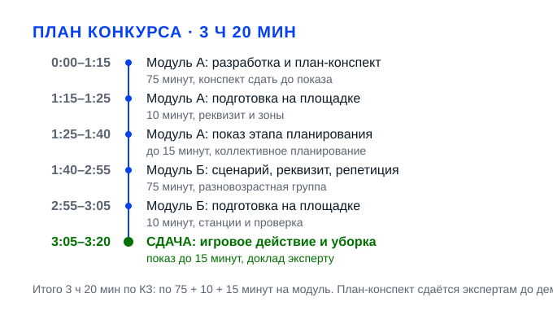
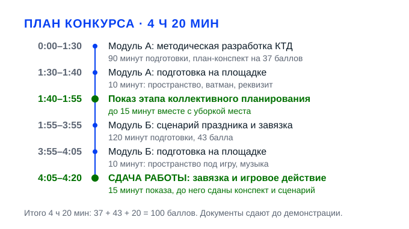
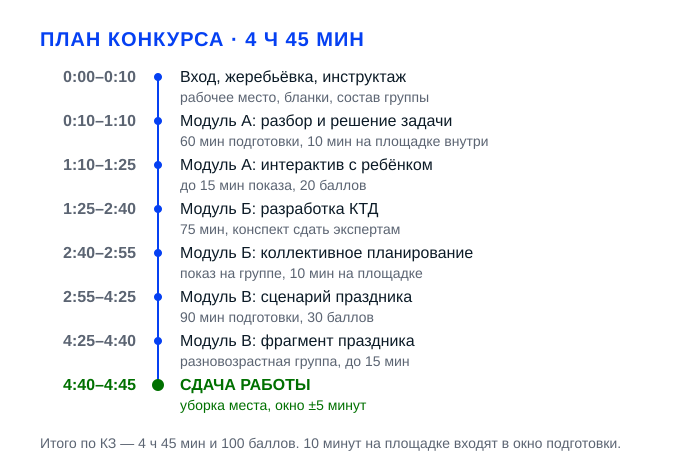

Аниматор (Р)
Задания ниже — официальные файлы «Абилимпикс» (источник: abilympics-russia.ru), разложенные по категориям. Решения написаны по тексту задания, регламенту и критериям оценки; в них указано, что именно проверяет эксперт.
Школьник
14–16 лет, базовый уровень заданияВыдержка из официального конкурсного задания: страницы, относящиеся к категории «Школьник» (стр. 6–9 источника).
Пошаговое решение
Разбор по официальному заданию чемпионата «Абилимпикс» 2026 для категории «Школьники». На всё отводится 3 часа 20 минут. Модуль А — методическая разработка коллективно-творческого дела: 75 минут подготовки за столом, 10 минут на площадке и до 15 минут показа этапа коллективного планирования. Модуль Б — детский праздник с игровым действием: те же 75 и 10 минут, а в показ идёт только фрагмент игрового взаимодействия с разновозрастной группой. В 30% изменений входят вид КТД (трудовой, познавательный, художественный, спортивный, экологический), возраст детей, тема, место и условия — готовый сценарий почти наверняка не подойдёт, а конструктор из пяти заготовок подойдёт. Ниже задание разложено на пять задач: от разбора рамок и целеполагания до уборки площадки после показа. Два момента решают исход: план-конспект сдаётся экспертам до демонстрации, а показывать нужно не всё дело, а один этап.

Задача 1. Прочитать задание и выбрать вид коллективно-творческого делаМодуль А · 75 минут подготовки
До того как что-то писать, нужно превратить конкурсное задание в четыре жёстких рамки: вид коллективно-творческого дела, возраст и состав детей, место и время показа. На площадке часть этих рамок меняется — по заданию 30% изменений приходится именно на вид КТД, поэтому выигрывает не тот, кто принёс готовый сценарий, а тот, кто принёс конструктор, из которого сценарий собирается за двадцать минут.
Действие 1.1. Разобрать рамки задания
Шаг 1.1.1
Берём распечатку задания и выписываем на отдельный лист четыре строки: вид КТД, возраст детей и размер группы, место проведения, сколько времени даётся на показ. Время выписываем тройкой — 75 минут на подготовку за столом, 10 минут на подготовку на площадке и до 15 минут на демонстрацию этапа коллективного планирования. Эти пятнадцать минут и есть ваш настоящий хронометраж: всё, что вы придумаете, должно уместиться в них, а не в воображаемый час.
Задание построено так, что оценивают не замысел, а результат: разработанный план-конспект и показанный этап коллективного планирования. Если вы начнёте придумывать «интересное дело» раньше, чем выпишете хронометраж, почти гарантированно спланируете сорок минут активности и потом будете вычёркивать половину на ходу, теряя логику.
На листе четыре заполненные строки, и в каждой стоит конкретика, а не общее слово: не «дети», а «разновозрастная группа, примерно 12–15 человек», не «немного», а «15 минут». Проверьте себя вопросом: если бы этот лист увидел другой человек, смог бы он по нему понять, что именно от вас требуют?
Типичная ошибка — прочитать задание один раз «по диагонали» и унестись в идеи. В итоге выясняется, что показывать нужно только этап планирования, а участник готовит репетицию всего дела и на площадке тратит восемь минут на вступление. Вторая ошибка — не заметить слова «разновозрастная группа» и спланировать задания только для семилеток.
Эксперт проверяет, совпадает ли заявленная тема и вид КТД с тем, что реально происходит на площадке. Первое расхождение он отмечает уже в плане-конспекте, до показа.
Шаг 1.1.2
Отдельно разбираем пункт про 30% изменений. Он означает, что вид КТД — трудовое, познавательное, художественное, спортивное или экологическое — может быть объявлен непосредственно перед началом, и ваш материал должен перестраиваться под любой из пяти. Поэтому в заготовке держим не один сценарий, а пять «начинок» по одной странице: что дети делают руками, какой материал нужен, какая фраза запускает обсуждение.
Именно этот пункт отличает подготовленного участника от заучившего: заученный сценарий при смене вида КТД рассыпается, а конструктор — нет. На изменение вида у вас будет не час, а считанные минуты, и тратить их на изобретение нового дела с нуля нельзя.
Проверка простая: закройте лист и попробуйте за тридцать секунд назвать, что делают дети в каждом из пяти видов. Если на каком-то виде вы замолкаете — значит, этой страницы конструктора у вас нет, и её нужно дописать сегодня, а не на площадке.
Самая частая ошибка — подготовить блестящее художественное дело и надеяться, что выпадет именно оно. Второй промах — сделать пять вариантов одинаковыми по сути, поменяв только название: эксперт видит, что трудовая акция и экологическая акция у участника — одно и то же мероприятие с разными словами.
Эксперт смотрит, насколько содержание соответствует объявленному виду. Несоответствие вида и содержания — самый быстрый способ потерять баллы за первый же критерий.
Шаг 1.1.3
Считаем ресурс: сколько детей будет на площадке, есть ли помощники из числа экспертов или волонтёров, что уже лежит в конкурсном наборе — ватман, маркеры, цветная бумага, клей, ножницы, скотч. Всё, чего нет в наборе, вы не получите: на площадке не выдают дополнительный реквизит по первому требованию. Поэтому реквизит планируем из того, что реально помещается в одну коробку и переносится двумя руками.
План, который нельзя выполнить имеющимися средствами, на конкурсе не стоит ничего. Кроме того, количество детей определяет размер микрогрупп: при двенадцати детях логично три группы по четыре, при двадцати — четыре по пять, и от этого зависит, сколько раздаточных комплектов вы готовите.
Напишите три числа: детей на площадке, микрогрупп, комплектов раздатки. Они должны сходиться: комплектов столько же, сколько групп, плюс один запасной. Если чисел не получается, значит, план ещё не готов.
Классический промах — рассчитывать на двадцать детей, а прийти к двенадцати и растеряться с четырьмя группами по три человека. Обратная ошибка хуже: подготовить одну общую «карту дела» и обнаружить, что одновременно рисовать на ней хотят двадцать человек.
Эксперт отмечает, насколько организация соответствует заявленному количеству участников: хватило ли материалов, не простаивали ли дети, была ли у каждого работа.
Действие 1.2. Выбрать вид КТД и рабочее название
Шаг 1.2.1
Прогоняем пять видов через три фильтра: что дети смогут сделать за пятнадцать минут показа, не требует ли материал больше десяти минут подготовки на площадке, ложится ли это на возраст от шести до четырнадцати. Трудовое дело хорошо тем, что даёт видимый результат — собранный предмет, оформленный уголок; познавательное — тем, что держится на вопросах и не требует реквизита; художественное — тем, что включает всех; спортивное и экологическое — тем, что быстро делит группу на команды.
Фильтры нужны потому, что красивая идея и выполнимая идея — разные вещи. Дело, которое требует получаса склейки, на пятнадцатиминутном показе провалится даже при идеальном сценарии: дети не успеют дойти до результата, а эксперт увидит неорганизованность, хотя виноват хронометраж.
Выбранный вид проходит все три фильтра с ответом «да» и одним предложением обоснования. Обоснование должно звучать через детей: «художественное, потому что в группе есть младшие, которым трудно читать, но легко рисовать». Если обоснование звучит через вас «мне так удобнее» — фильтр не пройден.
Типичная ошибка — выбирать вид по принципу «что эффектнее выглядит для эксперта». Второй промах — брать спортивное дело, не проверив размер площадки: эстафета на четыре метра превращается в толкотню, и вместо взаимодействия получается очередь.
Эксперт смотрит на соответствие вида КТД возрасту и интересам детей — это прямо записано в последовательности выполнения задания. Обоснование он услышит в вашем вступлении.
Шаг 1.2.2
Формулируем рабочее название: короткое, произносимое на одном выдохе, понятное младшему ребёнку без объяснений. Хорошая схема — «что делаем + для кого или зачем»: «Мастерская подарков для малышей», «Карта нашего двора», «Зелёный патруль школы». Плохая схема — абстракция вроде «Путь к успеху» или «Территория добра»: она ничего не обещает и не подсказывает действие.
Название — первое, что слышат дети, и оно задаёт ожидание. Если из названия непонятно, что будет происходить, первые две минуты уйдут на объяснение того, что можно было сказать тремя словами, а на пятнадцатиминутном показе две минуты — это седьмая часть времени.
Проверьте название на ребёнке или на взрослом, который не знает вашего замысла: попросите пересказать, что будет происходить. Если пересказ совпал с замыслом — название работает. Если человек пожимает плечами, переписывайте, а не объясняйте.
Первое, на чём теряют, — длинное название с двоеточием и тремя существительными подряд: его не запомнят и не повторят. Вторая — название-каламбур, который смешон взрослым и непонятен детям; на показе такая шутка провисает в тишине.
Эксперт фиксирует, сформулировано ли название в соответствии с заданной темой. Название он слышит первым и по нему составляет первое впечатление о вашей методической грамотности.
Действие 1.3. Сформулировать цель и задачи
Шаг 1.3.1
Цель пишем через изменение в детях, а не через ваши действия: не «провести коллективное планирование», а «включить детей в совместное планирование дела так, чтобы каждый предложил хотя бы одну идею и услышал чужую». Одного предложения достаточно, если в нём есть три части: кто участвует, что делает, какой результат считается достигнутым. Три части идут именно в этом порядке: сначала кто участвует, потом что делает, потом по какому признаку видно, что получилось.
Цель — это то, по чему эксперт поймёт, умеете ли вы целеполагать, а целеполагание прямо названо первой составляющей профессиональной деятельности аниматора в задании. Цель «провести мероприятие» нецелеполаганием не является: её нельзя ни проверить, ни провалить, а значит, по ней нельзя оценить результат.
Проверьте цель вопросом «как я узнаю, что это произошло». Если ответа нет — цель написана как лозунг. Если ответ звучит как наблюдаемый признак, например «все группы сдали по одной идее и смогли назвать чужую», цель рабочая.
Частая ошибка — подменить цель задачами и написать пять строк про то, что нужно сделать. Вторая — сформулировать цель настолько широко, что под неё подходит любое дело: «воспитание гармоничной личности» на конкурсе звучит как отписка.
Эксперт читает цель в плане-конспекте до показа и сверяет с тем, что увидел на площадке. Расхождение цели и демонстрации — заметный минус в оценке разработки.
Шаг 1.3.2
Разбиваем цель на три задачи, каждая из которых проверяется по ходу дела: познавательная — что дети узнают или поймут; развивающая — какой навык тренируют; воспитательная — какое отношение проявляется. Для КТД удобно формулировать их через действия детей: «предложить идею», «договориться в микрогруппе», «представить результат остальным». Каждая задача — одно предложение и один проверяемый глагол, без вводных слов вроде «в процессе» и «на основе».
Три задачи — это не формальность, а каркас вашего сценария: каждое действие на площадке должно работать хотя бы на одну из них. Если задача не обеспечена ни одним отрезком показа, её видно в конспекте как пустую клетку, и эксперт это замечает без всяких дополнительных вопросов.
Проверяйте задачи глаголами: если задача начинается с «создать условия» или «способствовать», она не проверяется. Если начинается с «называть», «договориться», «показать» — проверяется, и вы сможете в конце показать, что она решена.
Частый промах — написать три задачи, которые дублируют друг друга разными словами. Вторая — взять задачи из интернета под другое дело: они не совпадут с тем, что вы показываете, и развалят логику конспекта. Третья ошибка — задача, которую невозможно проверить на пятнадцатиминутном показе: её просто не увидят.
Эксперт сверяет задачи с целью и с ходом показа: соответствие задач содержанию — отдельный критерий качества методической разработки. Если задачи шире цели, он просит назвать главную, и это самый частый вопрос при сдаче конспекта.
Шаг 1.3.3
Проверяем всю связку целиком: вид КТД, название, цель, три задачи и пятнадцать минут показа должны читаться как одна история. Проговариваем её вслух за тридцать секунд, как будто вас попросили объяснить замысел на ходу. Если сбиваетесь или возвращаетесь исправлять — связка ещё не собрана. Проговаривайте в том темпе, в котором будете говорить с детьми: на бумаге любая фраза кажется короче, чем звучит.
Связность — то, что отличает методическую разработку от набора красивых фраз. Эксперт читает конспект последовательно, и любое место, где задача не вытекает из цели или показ не вытекает из задачи, он видит как разрыв, даже если каждая часть по отдельности написана хорошо.
Тридцать секунд без бумажки, без пауз и без «ну, в общем». Если получилось — можно переносить на чистовик. Если нет — вернитесь к цели: чаще всего разрыв именно там, потому что задачи писались раньше, чем цель.
Главная ловушка — оставить связку «на потом» и обнаружить несоответствие, когда план-конспект уже сдан экспертам. Исправлять сданный конспект на площадке нельзя, а показывать одно, а писать другое — прямой путь к снижению оценки.
Эксперт задаёт один-два вопроса по связке цели и задач, когда принимает конспект. Ответ должен звучать теми же словами, что написаны в документе. Ещё он смотрит, не расходится ли устная формулировка с письменной: расхождение читается как неготовность отстаивать замысел.
Задача 2. Собрать методическую разработку: план-конспект КТДМодуль А · 75 минут подготовки
План-конспект — единственный документ, который эксперт читает до показа и по которому потом сверяет ваши действия. В нём должна быть видна вся технология коллективно-творческого дела из шести этапов, а этап коллективного планирования — расписан поминутно, потому что именно его вы будете показывать. Конспект сдаётся экспертам до демонстрации, поэтому пишется он первым, а не после.
Действие 2.1. Описать шесть этапов технологии КТД
Шаг 2.1.1
Первый этап — предварительная работа с детским коллективом. Описываем её тремя-четырьмя предложениями: как вы познакомились с группой, что уже знаете о ней, какой повод собирает детей, кто из взрослых помогает. Здесь же фиксируем исходный уровень: что дети умеют и чего в группе ещё нет, например «младшие не работали в паре со старшими». Объём — не больше пяти строк: длинный абзац о предварительной работе перестают читать.
Без этого этапа остальные пять повисают в воздухе: коллективное планирование возможно только там, где дети уже понимают, зачем они собрались. В конспекте он занимает немного места, но его отсутствие сразу читается как «участник не знает технологии», а технология КТД — ядро первого модуля.
В конспекте есть отдельный абзац про предварительную работу, и в нём названы конкретные действия с детьми, а не общие слова. Проверьте: если заменить название вашего дела на любое другое, абзац останется верным — значит, он написан пустыми словами, переписывайте.
Самая частая ошибка — начинать конспект сразу с планирования: эксперту видно, что вы вырвали один этап из технологии. Вторая — описывать предварительную работу в будущем времени «планируется проведение беседы», хотя на конкурсе вы обязаны показать готовый замысел.
Эксперт проверяет, все ли шесть этапов присутствуют в конспекте и выстроены ли они в правильной последовательности. Если этап пропущен, он просит восстановить его на словах, и устный ответ обычно подтверждает, что конспект собран из чужих частей.
Шаг 2.1.2
Второй этап — коллективное планирование, и это единственный этап, который вы демонстрируете живьём, поэтому в конспекте он расписан подробнее остальных: кто придумывает, как идеи собираются, как выбирается одна. Пишем не «дети предлагают идеи», а «каждая микрогруппа получает лист и за три минуты пишет три идеи, которые потом защищает один представитель».
Именно здесь набирается основная часть оценки за демонстрацию: по заданию результат модуля — разработанный план-конспект и показанный этап коллективного планирования. Общие слова про планирование эксперт не может соотнести с тем, что увидит, а поминутный сценарий соотносится один в один.
Сверьте описание с таймингом: на планирование в показе уходит не больше десяти минут из пятнадцати, значит, в конспекте у него есть начало, середина и конец с минутами. Если этап описан одной строкой, на площадке вы начнёте импровизировать.
Классический промах — описать планирование как вопрос «какие у кого есть идеи?» и общий гул. Вторая — запланировать голосование раньше, чем идеи сформулированы, из-за чего дети голосуют за название, а не за содержание.
Эксперт сопоставляет описание этапа с показом почти дословно: структура, тайминг, приёмы сбора идей. Смотрит он и на конкретные приёмы: мозговой штурм, конверт идей, работа по кругу — по ним видно, что этап продуман, а не пересказан.
Шаг 2.1.3
Третий и четвёртый этапы — коллективная подготовка и проведение дела. Их в конспекте описываем коротко, но с распределением ролей: кто отвечает за материал, кто за оформление, кто ведёт, кто помогает младшим. Проведение расписываем блоками с минутами, чтобы было видно, что дальше планирования дело не рассыпается. Объём на эти два этапа — не больше страницы: подробность нужна там, где вы будете работать, а не в описании будущего.
Эти два этапа показывают, что вы видите дело целиком, а не только тот кусок, который удобно демонстрировать. Эксперт по конспекту понимает, будет ли вообще результат у дела: если после планирования сразу начинается «проведение» без подготовки, значит, дети ничего не делают руками.
В описании есть не меньше двух названных ролей и хотя бы один материальный результат, например «оформленная карта дела на ватмане». Проверьте, что проведение разбито на блоки по три-пять минут и в каждом есть действие детей.
Типичная ошибка — свести подготовку к фразе «дети готовят реквизит», не указав, кто и что именно готовит. Вторая — расписать проведение как монолог ведущего: тогда КТД превращается в концерт, а коллективного действия в нём нет.
Эксперт смотрит, есть ли в конспекте распределение ответственности между детьми — это признак того, что дело действительно коллективное. Он также проверяет, есть ли в подготовке этап, на котором дети делают что-то руками, а не только обсуждают.
Шаг 2.1.4
Пятый и шестой этапы — коллективное подведение итогов и ближайшее последействие. Итоги описываем через конкретные вопросы детям: что получилось, что было трудно, что изменили бы; последействие — через продолжение, например «фотографии и карта дела остаются в классе, через неделю группа возвращается к ним и отмечает, что сбылось». Вопросы пишем дословно, чтобы на площадке не импровизировать и не превращать итоги в речь взрослого.
Без этих этапов дело заканчивается на аплодисментах, а педагогический смысл теряется: именно итоги превращают активность в опыт, а последействие — в привычку. В задании они перечислены явно, и их отсутствие в конспекте читается как незнание технологии.
В конспекте есть три вопроса для обсуждения итогов и одно конкретное продолжение с датой или сроком. Проверьте, что вопросы открытые: на «понравилось ли вам» дети отвечают «да» и обсуждение заканчивается, не начавшись.
Первое, на чём теряют, — подводить итоги словами «всем спасибо, все молодцы»: это не рефлексия, а закрытие мероприятия. Вторая — придумать последействие, которого не будет, и написать его для галочки: эксперт задаёт по нему один вопрос, и ответ обнаруживает пустоту.
Эксперт проверяет наличие обоих этапов и задаёт вопрос, как именно будет организовано последействие. Ответ должен быть конкретным, а не «мы продолжим работу».
Действие 2.2. Расписать сценарий этапа коллективного планирования
Шаг 2.2.1
Делим пятнадцать минут показа на три отрезка: три минуты на вход и постановку задачи, семь минут на работу микрогрупп, пять минут на сбор и выбор идеи. В конспекте эти отрезки подписаны минутами, а внутри каждого расписано, что делают дети и что в это время делает ведущий. Пятнадцать минут — это верхняя граница, поэтому реально планируйте четырнадцать: запас нужен на то, чтобы группа расселась.
Тайминг в конспекте — ваш единственный способ не утонуть в показе: без него первая же реплика ребёнка уводит обсуждение в сторону, и через десять минут вы всё ещё знакомитесь. На конкурсе время показа ограничено, и его не продлевают, сколько бы интересного ни происходило.
Проверьте арифметику: сумма отрезков равна 14 минутам, и в каждом есть действие детей, а не только слова ведущего. Если один отрезок длиннее семи минут без смены деятельности, дети на нём потеряют внимание — это видно по тому, как они начинают крутиться.
Частый промах — отвести на вход тридцать секунд и потом полминуты пытаться установить тишину. Обратная ошибка — растянуть работу групп на десять минут: на защиту идей остаётся три минуты, и половина групп не успевает выступить.
Эксперт следит за часами и отмечает, уложился ли участник в отведённое время. Выход за пятнадцать минут фиксируется отдельно. Ещё он отмечает, прозвучал ли сигнал тишины до начала работы и сколько времени прошло до первого действия детей.
Шаг 2.2.2
Пишем реплики ведущего дословно — минимум шесть фраз: приветствие с именем, правило работы, постановка задачи, инструкция для групп, приглашение к защите, закрывающая фраза. Дословно нужно потому, что в стрессе вы начнёте говорить длинно: одна и та же мысль, сказанная тремя предложениями, занимает втрое больше времени и хуже понимается. Реплики пишем короткими предложениями, по одному действию в каждом, без вводных «итак» и «сейчас мы с вами».
Речь аниматора — рабочий инструмент, и в задании способы установления контакта и согласования совместных действий названы отдельно. Заготовленные фразы дают ровный темп и не дают скатиться в «эээ, ну, сейчас мы с вами поиграем», после которого дети перестают слушать.
Прочитайте реплики вслух с секундомером: инструкция для групп должна звучать не дольше сорока секунд. Если дольше — сокращайте, пока не останется одно действие и одно условие на предложение. Проверьте также, что в инструкции нет слов, которых дети не знают: «модерировать» и «презентовать» придётся заменить.
Главная ловушка — написать реплики «в общем виде», чтобы не звучать заученно. На площадке это превращается в десяток лишних слов и потерю контакта. Вторая — говорить инструкцию, пока дети ещё рассаживаются: половина её не слышит, и потом приходится повторять.
Эксперт оценивает речь и контакт с группой во время показа: слышно ли, понятно ли, обращаетесь ли вы к детям по имени. Отдельно фиксируется, дождались ли вы тишины перед инструкцией или говорили поверх шума.
Шаг 2.2.3
Продумываем правила и роли на время работы: одно правило разговора — «говорит тот, у кого маркер», одно правило идей — «плохих идей нет, есть неподходящие по времени», один сигнал тишины — поднятая рука. Роли распределяем сразу: в каждой микрогруппе секретарь, который пишет, хранитель времени, который следит за тремя минутами, и представитель, который защищает идею.
Правила снимают две трети организационных проблем: без «говорит тот, у кого маркер» самые громкие забирают обсуждение, а младшие замолкают. Роли дают каждому ребёнку занятие и повод не отсиживаться — на разновозрастной группе это особенно заметно. Роли распределяются до начала работы, а не в процессе: иначе первые две минуты уходят на спор, кто главный.
Проверьте, что правил ровно три и каждое произносится одним предложением. Ролей столько же, сколько детей в микрогруппе; если детей больше — добавляем роль оформителя, который рисует идею, а не пишет.
Самая частая ошибка — объявить пять правил подряд: дети запомнят два последних. Вторая — раздать роли, не проверив, понял ли ребёнок, что ему делать: секретарь без объяснения просто держит маркер и ждёт, пока взрослый напишет за него.
Эксперт наблюдает, как быстро группа начинает работать после инструкции. Если через минуту все ещё переспрашивают — правила и роли не сработали. Он также отмечает паузу после инструкции: даёте ли вы детям две-три секунды на осмысление или сразу торопите вопросом «понятно?».
Действие 2.3. Оформить конспект и сдать его экспертам
Шаг 2.3.1
Собираем шапку документа: название дела, вид КТД, возраст и количество детей, продолжительность, цель и три задачи, автор. Шапка занимает половину первого листа и читается за двадцать секунд — это важно, потому что эксперт читает конспект между другими участниками и не станет искать смысл в середине текста. Название и вид КТД пишем крупно, остальное — обычным шрифтом: эксперт должен увидеть их, не вчитываясь в абзацы.
Шапка — это навигация по вашему замыслу. Если вид КТД и возраст не вынесены наверх, эксперт выясняет их по ходу чтения и может неверно соотнести содержание с заданием; а несоответствие вида КТД — прямой минус по критерию. Кроме того, шапка задаёт рамку чтения: по ней эксперт понимает, чего ждать от остальных страниц.
Проверьте шапку тестом «двадцать секунд»: отдайте лист человеку, не знающему замысла, и спросите через двадцать секунд, что за дело и для кого. Если он отвечает — шапка работает. Если человек переспрашивает «а для какого возраста?», значит, возраст не вынесен наверх, и шапку надо переделывать.
Классический промах — писать шапку в конце, когда сил уже нет, и оставлять в ней общие слова «развитие творческих способностей». Вторая — забыть указать количество детей, из-за чего дальше невозможно проверить, рассчитан ли реквизит.
С шапки он начинает чтение: по ней решает, соответствует ли разработка заданию категории. Если вид КТД в шапке не совпадает с содержанием таблицы, он задаёт вопрос до показа, и отвечать приходится на ходу.
Шаг 2.3.2
Основную часть оформляем таблицей: этап, время, что делают дети, что делает педагог, материал. Пять колонок читаются быстрее, чем сплошной текст, и в них невозможно спрятать пропущенный этап. В приложении к конспекту кладём список реквизита с количеством и заготовку «карты дела» — лист, на котором группы будут фиксировать идеи. Колонку «материал» заполняем по группам, а не общим списком: так сразу видно, чего не хватает на каждую микрогруппу.
Таблица — не бюрократия, а инструмент самопроверки: пустая клетка «что делают дети» сразу показывает, где вы запланировали монолог. Кроме того, эксперт по таблице видит хронометраж и понимает, что показ укладывается в пятнадцать минут. Кроме того, таблица показывает, где вы планировали паузу, а где действие, и по ней удобно считать минуты.
Пройдите по таблице сверху вниз и в каждой строке найдите глагол, обозначающий действие детей. Если хотя бы в двух строках такого глагола нет — переписывайте эти строки, пока не появится действие. Пустая клетка — это место, где на площадке возникнет заминка, и её видно ещё на подготовке.
Типичная ошибка — оформить конспект сплошным текстом на четыре листа: его не прочтут внимательно и не найдут этапов. Вторая — сделать таблицу слишком мелкой, с шрифтом, который нужно разбирать, — эксперту это неудобно, и он оценит по первому впечатлению.
Эксперт читает таблицу построчно и сверяет этапы с технологией. Структура важнее красоты оформления, но читаемость влияет на первое впечатление. Фиксирует он и то, есть ли в таблице колонка времени с минутами: без неё хронометраж проверить невозможно.
Шаг 2.3.3
Перед показом сдаём конспект экспертам — по заданию это делается до демонстрации, а не после. Одновременно сообщаем о готовности выполнить творческое задание: подходим, называем себя и говорим, что разработка сдана и вы готовы показать этап коллективного планирования. После этого уточняем, куда встать и когда начинать. Если эксперт занят, ждём у его стола, а не возвращаемся на площадку: сдача фиксируется по факту, а не по вашему намерению.
Доклад о готовности — отдельный пункт в последовательности выполнения задания, то есть проверяемое действие, а не вежливость. Эксперт должен знать, что вы закончили подготовку: иначе он может начать отсчёт показа, пока вы ещё раскладываете реквизит, и десять минут площадки сгорят.
Конспект у эксперта, вы стоите на своей точке, реквизит разложен, время начала понятно. Проверьте три вещи перед докладом: подписан ли конспект, на месте ли раздатка, знаете ли вы, где стоит группа детей.
Первое, на чём теряют, — сдать конспект после показа или «по ходу»: порядок задан, и нарушение фиксируется. Вторая — не подойти к эксперту вовсе, надеясь, что вас заметят: тогда показ начинается с опозданием, а виноват в нём будете вы.
Эксперт отмечает момент сдачи конспекта и доклад о готовности — оба пункта есть в задании отдельными строками. Ещё он проверяет приложения: список реквизита и заготовку карты дела — без них конспект считается неполным.
Задача 3. Подготовить площадку и провести этап коллективного планированияМодуль А · 10 минут на площадке + до 15 минут показа
На площадке у вас десять минут, чтобы разложить реквизит и смоделировать пространство, и до пятнадцати минут, чтобы провести этап планирования с детьми. Всё, что не подготовлено в эти десять минут, придётся делать на глазах эксперта во время показа, а это самая дорогая потеря баллов: пауза на поиск маркера читается как неготовность.
Действие 3.1. Отобрать и разложить реквизит
Шаг 3.1.1
Составляем список реквизита по отрезкам показа: на вход нужен только сигнал тишины, на работу групп — по листу ватмана формата А2 или А3, по три маркера разных цветов, по листу стикеров 76 на 76 миллиметров, на защиту — планшет или доска, куда вывешиваются листы, и магниты. Всё остальное в список не попадает, даже если «может пригодиться». Список пишем столбиком с количеством напротив каждого пункта: «маркер — 9 штук, стикеры — 4 блока».
Реквизит по отрезкам — это способ не искать нужное в самый неподходящий момент. Кроме того, количество предметов задаёт темп: если на группу из четырёх детей вы несёте десять предметов, первые две минуты уйдут на их раздачу, а не на работу. Правило простое: на микрогруппу — один лоток, и ни одного предмета про запас.
Список сходится с числом микрогрупп: комплектов ровно столько же, плюс один запасной на случай, если группа окажется больше. Проверьте, что каждый предмет из списка помещается в вашу коробку и что коробку вы сможете унести сами.
Частый промах — брать реквизит «на всякий случай» и приходить с тремя пакетами, в которых невозможно быстро найти нужное. Вторая — не предусмотреть запасной комплект и обнаружить, что маркер у одной группы высох.
Эксперт видит, насколько организованно разложен материал, и отмечает, хватило ли его всем группам одновременно. Если реквизит лежит россыпью, он отмечает это как организационный недочёт ещё до начала показа.
Шаг 3.1.2
Раскладываем реквизит по лоткам или папкам — отдельно для каждой микрогруппы, — и ставим лотки так, чтобы их можно было раздать за один проход: на столе у края площадки, в порядке номеров групп. Маркеры проверяем на листе, колпачки ставим на место сразу, стикеры отделяем от блока, чтобы их не пришлось отклеивать при детях. Лотки подписываем номерами групп, чтобы раздача шла без вопросов «а это чей?» и без пересчёта.
Раздача — самый провальный момент любого показа: пока вы отсчитываете маркеры, дети ждут и теряют интерес. Лоток на группу сокращает раздачу до десяти секунд: взяли, поставили, пошли дальше. Это же освобождает вам руки и внимание для контакта. Чем меньше движений в начале, тем спокойнее выглядит показ и тем больше внимания остаётся на детях.
Проверьте раздачу на себе: пройдите вдоль стола и разложите лотки по местам, замеряя время. Если проход занимает больше тридцати секунд, переставьте лотки ближе к точкам, где будут стоять группы. Убедитесь, что дотягиваетесь до дальнего лотка, не заходя в круг детей: каждый лишний шаг через площадку заметен.
Главная ловушка — высыпать всё в одну кучу и раздавать по просьбе детей: начинается очередь и спор за маркеры. Вторая — разложить реквизит на своём столе, к которому детям нельзя подходить, и бегать туда-обратно весь показ.
Эксперт наблюдает за раздачей: она должна занимать секунды и не превращаться в отдельный этап. Проверяет он и то, не приходится ли детям ждать материала: простой больше пятнадцати секунд заметен и читается как потеря темпа.
Действие 3.2. Смоделировать пространство
Шаг 3.2.1
Размечаем три зоны: круг для входа и постановки задачи, три точки для микрогрупп по периметру и место для защиты идей у доски или планшета. Круг собираем без столов — дети стоят или сидят на стульях, поставленных в круг диаметром примерно три метра, чтобы каждый видел лицо ведущего и соседей. Ведущий стоит на линии круга, а не в центре: тогда он видит всех и никому не перекрывает обзор.
Пространство задаёт тип взаимодействия: в круге дети видят друг друга и включаются в разговор, в ряд перед ведущим — ждут, пока их спросят. Для этапа планирования нужен именно круг, поэтому его собирают первым, ещё до того, как раскладывают реквизит.
Проверьте круг из центра: все лица видны, между стульями нет разрывов больше метра, никто не сидит спиной к ведущему. Если кто-то оказался за колонной или у стены — переставьте, это тридцать секунд. Если круг вышел овальным, выровняйте его: в овале ведущий теряет двоих на концах, и они выпадают из разговора.
Самая частая ошибка — оставить расстановку, которая была до вас: ряды стульев экономят место, но убивают обсуждение. Вторая — поставить круг слишком тесно, так, что дети касаются друг друга: в разновозрастной группе это быстро превращается в толкотню.
Эксперт оценивает, насколько пространство помогает взаимодействию: видно ли всех, слышно ли, есть ли место для работы групп. Отдельно он отмечает, есть ли у групп своё место для листа: работа на коленях выглядит хуже и замедляет запись.
Шаг 3.2.2
Проверяем слышимость и видимость из самой дальней точки: встаём туда, где будет последний ребёнок, и просим помощника говорить обычным голосом. Если не слышно — площадку придётся сократить или говорить громче, но громче не значит лучше: на конкурсе рядом работают другие участники, и перекрывать их голосом нельзя. Если слышимость плохая, сокращаем расстояние между точками и говорим короче, а не повышаем голос через силу.
Слышимость — условие контакта: ребёнок, который не расслышал инструкцию, выпадает из работы и требует индивидуального повторения, а это время из пятнадцати минут. Проверка из дальней точки занимает минуту и экономит три. Кроме того, тихий голос заставляет детей подойти ближе, а это лишнее движение на площадке и потеря строя.
Из дальней точки слышно обычную речь без напряжения, видно ваши руки и лист, который вы показываете. Если приходится вслушиваться — сократите расстояние между точками групп до двух метров. Проверяйте не только речь, но и сигнал: колокольчик должен быть слышен в самой дальней точке площадки.
Классический промах — проверять слышимость, стоя рядом с помощником, и решать, что всё в порядке. Вторая — перекрывать шум голосом на пределе и сорвать его на середине показа: тогда вторая половина пройдёт шёпотом.
Эксперт из своей точки слышит инструкции и реплики детей. Если он не слышит — он не может оценить взаимодействие. Отдельно фиксируется, не приходится ли ему напрягаться, чтобы разобрать слова: это прямо влияет на оценку речи.
Шаг 3.2.3
Убираем риски: стулья ставим так, чтобы между ними был проход не меньше полуметра, провода и штативы обходим, сумки и коробки убираем за пределы площадки, мокрый пол вытираем или обходим. Если в наборе есть мяч или другой предмет, который катится, заранее решаем, где он останавливается — у стены или у вас в руках. Отдельно проверяем обувь: скользкая подошва на гладком полу — самая частая причина падения на показе.
Отдельного критерия за безопасность в задании нет, но любое падение останавливает показ: сначала помощь ребёнку, потом всё остальное, и время при этом не возвращается. Кроме того, в разновозрастной группе старшие двигаются быстрее младших, и риск столкновения реальнее, чем кажется.
Пройдите по площадке маршрутом самого активного ребёнка: если на пути есть угол стола, провод или чья-то сумка — уберите. Проверьте, что выход с площадки свободен и что упавший предмет не покатится под ноги.
Типичная ошибка — оставить стулья в два ряда и надеяться, что дети сами разберутся. Вторая — поставить реквизит на пол в центре: за ним тянутся одновременно все, и начинается свалка. Третья — поставить станции рядом с проходом, где ходят другие участники и волонтёры.
Эксперт смотрит, готово ли пространство к движению: свободные проходы, ничего лишнего на полу, реквизит в доступных, но не мешающих точках. В поле его зрения и то, свободен ли выход с площадки: заставленный проход он отмечает как нарушение.
Действие 3.3. Войти в контакт и задать рамку
Шаг 3.3.1
Начинаем с сигнала, а не с приветствия: поднимаем руку и держим, пока не поднимется последний ребёнок, затем здороваемся и называем себя по имени. Дальше сразу говорим, сколько времени у нас есть и что мы успеем: «У нас четырнадцать минут, за это время каждая группа придумает идеи и покажет их». Три предложения, не больше. Имя называем один раз и не спрашиваем, как зовут детей: на знакомство уйдёт минута из пятнадцати.
Сигнал рукой работает потому, что не требует перекрывать шум: дети видят поднятую руку и повторяют, и через десять секунд в группе тихо. Если начать с крика «тише, ребята», первые тридцать секунд уйдут на борьбу за внимание, а оно уже нужно для задачи.
Проверьте: тишина наступила до того, как вы сказали второе предложение, все смотрят на вас, никто не переспрашивает, что происходит. Если кто-то продолжает разговор — подождите молча, это работает лучше повторного призыва.
Первое, на чём теряют, — начинать с длинного приветствия и представления «я студент такого-то колледжа». Вторая — не назвать время: без рамки дети не понимают, можно ли им рассуждать долго, и первая же идея обсуждается пять минут.
Эксперт фиксирует, как быстро установлен контакт и названа ли рамка времени. Это первое, что он видит в показе. Он отмечает и то, дождались ли вы тишины: показ, начатый поверх разговоров, теряет первые две минуты.
Шаг 3.3.2
Ставим задачу через проблему, а не через тему: «Нам нужно придумать, что сделать, чтобы…», и даём один конкретный пример, чтобы стало понятно, какого размера идея ожидается. Сразу объявляем три правила: говорит тот, у кого маркер; плохих идей нет, есть идеи, которые не успеем; сигнал тишины — поднятая рука. Правила показываем на пальцах: один палец — одно правило, чтобы дети удержали их в памяти без повторения.
Проблема включает мышление, тема — только информирует. Кроме того, пример задаёт масштаб: без него одна группа предложит построить город, другая — нарисовать открытку, и свести их вместе будет невозможно. И ещё одно: один пример задаёт формат ответа — дети предлагают идею, а не тянут руку за разрешением.
Проверьте, что после постановки задачи хотя бы один ребёнок может своими словами сказать, что нужно сделать. Спросите двоих — младшего и старшего: если младший пересказывает верно, инструкция понятна всей группе.
Частый промах — объявить правила после того, как дети начали работать: тогда они воспринимаются как наказание. Вторая — дать три примера вместо одного, и группа начнёт выбирать из них, вместо того чтобы придумывать.
Эксперт слышит формулировку задачи и правил. Ему важно, обращена ли задача к детям и понятна ли она без дополнительных объяснений. Проверяет он и то, названы ли правила до начала работы, а не после первой ошибки.
Действие 3.4. Организовать работу микрогрупп
Шаг 3.4.1
Делим группу на микрогруппы по четыре-пять человек так, чтобы в каждой были и младшие, и старшие. Простой способ — рассчитаться на первый-третий и объединиться по номерам: так состав получается случайным и разновозрастным. Если видно, что двое не хотят расставаться, не боритесь: лучше поменять одно место, чем тратить минуту на уговоры. Расчёт делаем громко и с паузой между номерами, чтобы никто не сбился и не начал считать заново.
Смешанный состав — суть работы с разновозрастной группой: старшие удерживают рамку и записывают, младшие дают неожиданные идеи и не боятся предлагать. Если разделить по возрасту, младшие застревают на первом шаге, а старшие делают всё сами и скучают.
В каждой микрогруппе есть хотя бы один старший и хотя бы один младший. Проверьте состав глазами до того, как раздадите листы: перестановка сейчас стоит пять секунд, после начала работы — минуту и внимание группы.
Главная ловушка — позволить детям разбиться «по друзьям»: получаются группы по возрасту и группа из одного человека. Вторая — делить по расчёту, но забыть назвать номера вслух, из-за чего дети начинают считать заново и путаются.
Состав групп он оценивает по тому, есть ли в каждой младшие и старшие и все ли дети включены. Если в группе оказались только младшие или только старшие, он отмечает это как ошибку деления: взаимодействие между возрастами не возникает.
Шаг 3.4.2
Даём инструкцию одной фразой на действие и показываем, а не рассказываем: вот лист, вот маркер, за три минуты пишете три идеи, потом один от группы защищает. После инструкции просим повторить одного ребёнка из каждой группы — это занимает двадцать секунд и снимает половину переспрашиваний. Инструкцию даём стоя в круге, а не на ходу: дети должны видеть и вас, и образец одновременно, иначе половина смотрит на соседа.
Показ вместо рассказа экономит время и снимает непонимание: дети, особенно младшие, воспринимают образец быстрее, чем объяснение. Проверка через повторение — не недоверие, а приём: тот, кто повторил, уже принял инструкцию как свою. Кроме того, повторение вслух выравнивает темп: группа стартует одновременно, и вам не приходится подходить к каждой.
Все группы начали работу в течение тридцати секунд после инструкции. Если группа сидит и смотрит на лист — подойдите и задайте один вопрос: «Какая первая идея?» — этого обычно достаточно. Через три минуты на каждом листе должно быть не меньше трёх строк: считайте их, проходя мимо.
Самая частая ошибка — объяснять инструкцию, пока раздаёте материал: половина не слышит. Вторая — давать инструкцию на пять шагов: дети запомнят первый и последний, а середина потеряется. Третья — говорить инструкцию спиной к группе, пока пишете на доске: половина не слышит ни слова.
Эксперт оценивает ясность инструкции по реакции группы: сколько времени прошло до первого действия детей. Отдельно отмечается, сколько детей переспросили инструкцию: два-три вопроса нормальны, пять — признак непонятной речи.
Шаг 3.4.3
Пока группы работают, обходим их по кругу, начиная с самой тихой: в каждой проводим не больше минуты, задаём один открытый вопрос и уходим. Следим за ролями — секретарь пишет, хранитель времени напоминает, представитель готовится, — и за тем, чтобы старшие не забирали маркер у младших. Если маркер всё время у одного ребёнка, передайте его следующему по кругу сами: спор за маркер съедает больше времени, чем работа.
Обход — это и контроль, и поддержка: группа, к которой не подошли, часто замолкает и ждёт. Одновременно обход показывает эксперту, что вы управляете процессом, а не стоите в стороне; на разновозрастной группе именно здесь видно умение распределять внимание.
В каждой группе к концу отрезка есть хотя бы две записанные идеи. Проверьте по листам, а не по словам: если на листе одна идея, группа застряла на обсуждении, и её нужно подтолкнуть вопросом «а если наоборот?».
Классический промах — задержаться у одной группы на пять минут и не дойти до остальных: это самая заметная организационная ошибка в показе. Вторая — подсказывать свои идеи, после чего группа перестаёт думать и ждёт взрослого.
Эксперт смотрит, как распределено внимание: подошли ли вы ко всем группам, не подменяете ли детскую работу своей. Он засекает, сколько времени вы провели с каждой группой: разница больше минуты читается как потеря контроля.
Действие 3.5. Собрать идеи, выбрать и закрыть этап
Шаг 3.5.1
Даём сигнал тишины, просим группы вывесить листы на доску или планшет и предоставляем слово представителям по кругу — по сорок секунд каждому. Правило одно: защищаем идею, а не пересказываем лист; остальные слушают и могут задать один вопрос. Если представитель младший, помогаем ему одним наводящим вопросом, но не говорим за него. Выступление начинаем с названия идеи, а не с пересказа всего листа: сорок секунд — это два предложения и один пример.
Защита идей — момент, когда планирование становится коллективным: группа слышит чужие предложения и достраивает своё. Без этого этапа каждая группа остаётся при своём, и общего решения не возникает, а именно общее решение и есть результат этапа. Кроме того, на защите видно, кто в группе реально работал: представитель, который говорит своими словами, а не читает лист, выдаёт качество обсуждения.
Каждая группа выступила, и после выступлений у детей есть минимум две идеи, которых не было в их собственной группе. Проверьте по реакции: если после выступления никто не тянется к чужому листу, обсуждения не случилось.
Типичная ошибка — разрешить выступать по три минуты: три группы съедят девять минут из четырнадцати. Вторая — самой пересказывать идеи групп «чтобы быстрее», после чего дети перестают считать идеи своими. Третья — не ограничить число вопросов после выступления: три вопроса на группу — это ещё две минуты.
Эксперт оценивает, как организована презентация: слышно ли, по очереди ли, поддерживается ли автор. Проверяет он и то, как вы реагируете на слабое выступление: поддерживаете автора или заканчиваете его фразу сами.
Шаг 3.5.2
Собираем решение: на «карте дела» в центре пишем задачу, вокруг — идеи с номерами, и просим группу отметить стикерами две идеи, которые можно сделать за отведённое время. Голосование делаем не за «лучшую», а за «выполнимую»: так дети учатся соотносить желание с ресурсом. Результат фиксируем на карте, чтобы он остался видимым. Стикеры клеим на лист, а не на доску: карту потом можно забрать с собой и повесить в классе.
Выбор — обязательная часть планирования: без него этап заканчивается списком пожеланий. Формулировка «выполнимая, а не лучшая» снимает обиду проигравших и переводит разговор в практическую плоскость, что для аниматора и есть рабочий навык согласования действий.
На карте есть одно выбранное решение, две-три идеи в запасе и подписано, кто за что отвечает. Проверьте: если через день другой человек возьмёт карту, сможет ли он понять, что делать дальше. Если на карте только номера без слов, решение не читается: подпишите идеи одним-двумя словами.
Первое, на чём теряют, — устроить голосование руками и получить равный счёт, после чего спорить о перевесе. Вторая — оставить на карте десять идей без выбора: группа расходится с чувством, что ничего не решено. Третья — не назвать, кто отвечает за следующий шаг: карта остаётся без хозяина и через день теряется.
Эксперт смотрит, доведён ли этап до решения: есть ли зафиксированный результат, который можно предъявить. Ещё он отмечает, участвовали ли в выборе младшие: если голосовали только старшие, этап не был коллективным.
Шаг 3.5.3
Закрываем этап тремя фразами: что мы сделали, что будет дальше, кого благодарим. Называем срок следующего шага — «завтра в это же время собираемся и делаем то, что выбрали», — и просим группу повторить решение вслух. После этого благодарим и переходим к уборке: листы снимаем, маркеры закрываем, лотки собираем. Фразу о следующем шаге произносим, глядя на группу, а не в лист: это последнее, что дети унесут с показа.
Закрытие превращает встречу в этап дела: у группы остаётся не впечатление, а договорённость. Проговаривание решения вслух — простой приём закрепления, он занимает двадцать секунд и заметно повышает вероятность, что дети действительно придут на следующий этап.
Этап закрыт, если названо решение, срок и следующий шаг. Проверьте по своим записям: все три элемента произнесены вслух, а не подразумеваются. Если чего-то не хватает — добавьте одной фразой, время ещё есть.
Частый промах — закончить на «всем спасибо» и начать собирать реквизит при детях: этап обрывается, и в конспекте последействие остаётся необеспеченным. Вторая — объявить следующий шаг, которого не будет. Третья — закрыть этап, не назвав срок: договорённость без даты не выполняется и в конспекте выглядит пустой.
Эксперт слушает закрывающую фразу: есть ли в ней итог и продолжение. По ней он проверяет, предусмотрено ли последействие в вашей разработке. Его интересует и то, прозвучала ли благодарность детям и названы ли те, кто особенно помог.
Задача 4. Разработать праздник и игровое действие для разновозрастной группыМодуль Б · 75 минут подготовки
Во втором модуле показывают не весь праздник, а его фрагмент — игровое взаимодействие с разновозрастной группой. Значит, и сценарий пишется вокруг одного игрового действия, а остальное существует как рамка: название, цель, структура, материал. Главная сложность — сделать так, чтобы шестилетний и четырнадцатилетний делали одно и то же дело и обоим было не скучно и не тяжело.
Действие 4.1. Сформулировать название, цель и структуру
Шаг 4.1.1
Название праздника строим от заданной темы, но так, чтобы ребёнок шести лет понял его с первого раза: одно-два слова плюс образ, например «Праздник первых листьев» или «День, когда оживают камни». Проверяем на произносимость — название должно звучать без запинки и не содержать слов, которые взрослый произносит с интонацией «ну, вы поняли». Проговариваем его три раза подряд в разном темпе: если на третьем не спотыкаемся, можно оставлять.
Название задаёт ожидание и границы: если оно про листья, дети не станут ждать фокусника. По заданию название формулируется в соответствии с заданной темой, и именно с него эксперт начинает сверять ваш сценарий с выданным заданием — несовпадение темы видно сразу.
Проверьте название на ребёнке того возраста, который объявлен: попросите повторить и сказать, что, по его мнению, будет. Если повторяет и угадывает хотя бы направление — название работает. Если ребёнок переспрашивает название, оно слишком сложное: сокращайте до двух слов и одного образа.
Главная ловушка — взять название из интернета под похожую тему: оно почти всегда длиннее и абстрактнее, чем нужно. Вторая — назвать праздник словом, которое младшие не знают, например «квест» или «баттл»: половина группы не поймёт, куда её позвали.
Эксперт сверяет название с заданной темой и оценивает, понятно ли оно детям. Это первая строка в его листе. Если в названии есть слово, которого нет в теме, он просит объяснить связь, и объяснение съедает время показа.
Шаг 4.1.2
Цель праздника пишем через переживание и действие детей: не «организовать досуг», а «дать детям прожить общую историю, в которой каждый найдёт себе дело по силам, и выйти с чувством, что праздник был про него». Задачи — три: что дети попробуют, чему научатся во взаимодействии, что унесут с собой. Формулировки держим короткими: цель — одно предложение, каждая задача — одно предложение с глаголом действия.
Цель праздника отличается от цели КТД: здесь на первом месте эмоция и совместное переживание, а не результат труда. Это различие важно, потому что эксперт оценивает два модуля по разным логикам, и одинаковые формулировки в обоих конспектах читаются как шаблон.
В цели есть слово про переживание и слово про участие каждого. В задачах — три разных глагола, и ни одна задача не начинается со «способствовать». Проверьте: если убрать слово «праздник», цель всё равно останется про праздник, а не про урок.
Самая частая ошибка — написать цель «создать праздничное настроение»: её нельзя ни обеспечить, ни проверить, и она подходит к любому мероприятию. Вторая — задачи, которые дублируют задачи первого модуля. Третья — цель, в которой нет детей: «организовать праздник» описывает ваши действия, а не их опыт.
Эксперт читает цель и задачи в сценарии и сверяет с ходом фрагмента: работает ли игровое действие на заявленную цель. Он также сверяет задачи с возрастом: задачи, рассчитанные только на старших, он отмечает как несоответствие группе.
Шаг 4.1.3
Строим структуру из четырёх блоков: сбор и введение в историю — три минуты, игровое действие — семь-восемь минут, общий финал — две минуты, выход и благодарность — одна. В сценарии у каждого блока есть своя задача и свой способ перехода к следующему: не «после игры», а конкретная фраза, которой вы закрываете один блок и открываете другой. Минуты ставим с запасом в одну на переход и проверяем, что сумма не выходит за четырнадцать.
Структура нужна не для красоты, а чтобы фрагмент не расползся: без перехода между блоками дети после игры продолжают играть и не слышат финала. На пятнадцати минутах каждый переход стоит десять-пятнадцать секунд, и если их не заготовить, они превращаются в минуту уговоров.
Четыре блока с минутами, сумма — не больше четырнадцати. Переходы прописаны словами, а не стрелками. Проверьте: если прочитать только переходы, получится ли связная история от сбора до выхода. Если переход звучит как «ну что, дальше», значит, его нет: переписывайте до конкретной фразы.
Классический промах — начать праздник с длинного представления героя: на это уходит три минуты, а дети ещё не включены. Вторая — поставить финал после игры «на потом», когда внимание уже кончилось. Третья — поставить два финала подряд и растянуть закрытие на три минуты, когда игра уже закончилась.
Эксперт смотрит, есть ли в структуре завязка, развитие и финал. Фрагмент без финала выглядит как обрыв. Он также считает блоки: если в сценарии больше пяти, фрагмент на пятнадцать минут получится рваным.
Действие 4.2. Придумать игровое действие для разновозрастной группы
Шаг 4.2.1
Выбираем механику, в которой каждый возраст находит своё место: эстафета по станциям, общий круг с заданиями по нарастанию или командное собирание чего-то большого. Для разновозрастной группы лучше всего работают станции: младшие проходят их, старшие ведут и судят, и никто не простаивает. Механику выбираем одну, а не три подряд. Станции нумеруем и ставим по кругу, чтобы группа двигалась в одном направлении и не пересекалась с другими.
Одна механика держит внимание и позволяет уложиться в семь минут; три механики подряд превращаются в три недоделанных дела. Станции дают естественное распределение ролей по возрасту, а это и есть то взаимодействие, которое оценивают в модуле. Кроме того, одна механика позволяет объяснить правила один раз, а не четыре.
Проверьте механику на бумаге: нарисуйте маршрут группы из четырёх человек и посчитайте, сколько времени она проведёт на каждой станции. Если на одной станции больше двух минут, образуется очередь, и дети начнут толкаться.
Типичная ошибка — выбрать игру на выбывание: половина группы садится на стулья и перестаёт участвовать, а эксперт видит, что взаимодействия нет. Вторая — взять эстафету с бегом на скользком полу. Третья — поставить станции так, что группы мешают друг другу и перекрикивают соседей.
Эксперт оценивает, все ли дети включены в игровое действие. Выбывшие — прямой минус. Фиксирует эксперт и то, была ли у младших возможность дойти до результата: если старшие всё сделали за них, взаимодействия не было.
Шаг 4.2.2
Распределяем роли по возрасту так, чтобы старшим было чем гордиться, а младшим не было обидно: младшие — участники станций, средние — помощники, которые держат материал и подсказывают правило, старшие — ведущие станций и судьи. Роли объявляем заранее и спрашиваем, кто хочет быть ведущим: на разновозрастной группе желающих обычно больше, чем станций.
Роли по возрасту снимают главную проблему смешанной группы: старшие не скучают, младшие не чувствуют себя маленькими. Кроме того, когда старший объясняет правило младшему, он сам его лучше понимает, и вам не приходится повторять инструкцию четыре раза.
У каждого ребёнка есть роль, и ни одна роль не сводится к «стоять и смотреть». Проверьте по списку: если двое оказались без дела, придумайте им занятие до показа, а не во время. Если ролей меньше, чем детей, добавляем роль хранителя времени на каждой станции — она есть всегда.
Первое, на чём теряют, — назначить старших только судьями: они начинают оценивать, но не играть, и праздник теряет половину энергии. Вторая — дать младшим роли ведущих без подготовки: они стесняются, и станция встаёт.
Распределение ролей он проверяет по двум признакам: заняты ли все и по силам ли роль ребёнку. В его листе есть и такая строка — спросили ли вы желающих: назначение без выбора снижает включённость старших, и это видно по их поведению.
Шаг 4.2.3
Формулируем три правила игры и три страховки. Правила: слушаем сигнал, не обгоняем и не тянем за одежду, помогаем тому, кто младше. Страховки: что делаем, если кто-то заплакал, если группа разбежалась, если материал порвался — в каждом случае у вас заранее заготовлена фраза и действие, а не пауза. Каждую страховку проговариваем вслух на репетиции целиком: фраза «если кто-то заплакал, я присаживаюсь рядом и говорю...» должна быть готова, а не намечена.
Правила на разновозрастной группе нужны жёстче, чем на ровной: разница в силе и скорости создаёт риск, что старшие просто снесут младших. Страховки нужны потому, что любая остановка на показе стоит времени, а импровизация в стрессе почти всегда получается хуже заготовки.
Три правила и три страховки записаны в сценарии, и каждое правило произносится одним предложением без «не». Проверьте формулировки: «не толкаемся» хуже, чем «держим руки при себе». Если хотя бы одна страховка заканчивается многоточием, она не готова: дописывайте до конкретного действия.
Частый промах — объявить правила после первой травмы: тогда они звучат как наказание. Вторая — придумать страховку «если что, я вмешаюсь», то есть не придумать ничего: вмешательство без плана обычно выглядит как крик.
Эксперт наблюдает, как участник реагирует на трудное поведение: есть ли спокойная заготовленная реакция или начинается растерянность. Он отмечает и скорость реакции на сбой: пауза больше пяти секунд видна и читается как растерянность.
Действие 4.3. Записать сценарий и собрать реквизит
Шаг 4.3.1
Оформляем сценарий таблицей: блок, минуты, что говорю, что делают дети, что нужно из материала. Реплики пишем дословно в колонке «что говорю» — минимум по две на блок, включая переходы. В колонке «что делают дети» у каждого блока должно быть действие, а не «слушают». Напротив каждого блока ставим минуты и проверяем сумму: две колонки — время и действие — держат сценарий лучше любого текста.
Таблица не даёт сценарию превратиться в монолог: пустая колонка действий сразу видна. Дословные реплики нужны ещё и потому, что на площадке вы будете говорить короче и понятнее, чем в голове, — но только если короткий вариант уже записан. Таблица читается за минуту, сплошной текст — за пять, а времени на чтение у эксперта нет.
Проверьте сценарий по колонке действий: в каждом блоке есть глагол, обозначающий, что делают дети. Если в двух блоках подряд стоит «слушают» — переставляйте, иначе фрагмент превратится в рассказ. Если в блоке нет действия детей, блок лишний: его можно сократить или убрать совсем.
Главная ловушка — написать сценарий сплошным текстом: на площадке его невозможно читать и приходится держать в голове, а в голове держится не больше двух блоков. Вторая — не записать переходы, из-за чего каждый блок заканчивается вопросом «ну что, дальше?».
Эксперт не читает сценарий во время показа, но проверяет его после. Структура таблицы показывает, насколько участник владеет формой. Проверяет он и то, есть ли в сценарии дословные реплики, а не только описания блоков.
Шаг 4.3.2
Собираем реквизит по сценам и раскладываем по конвертам с подписями: «станция 1», «станция 2», «финал». В каждый конверт — ровно то, что нужно на этой станции, плюс запасной элемент. Отдельно готовим сигнал — колокольчик, свисток или бубен, — и держим его в кармане, а не в коробке. На каждом конверте пишем номер станции и количество предметов: при сборе сразу видно, чего не хватает, без пересчёта по памяти.
Конверт по сцене — это способ не искать нужное в момент, когда все ждут. Подпись позволяет отдать конверт помощнику словами «второй станции», не объясняя содержимое. Запасной элемент закрывает самую частую поломку — порванный или потерянный предмет. Подписи экономят время и на раздаче, и на уборке: конверт возвращается на место по номеру, а не по содержимому.
Конвертов столько же, сколько сцен, и в каждом лежит всё необходимое по списку. Проверьте, что реквизит помещается в одну коробку и что вы поднимаете её одной рукой: второй рукой вы держите сигнал. Разложите конверты по станциям, не заглядывая внутрь: если это занимает минуту, система работает.
Самая частая ошибка — сложить всё в один пакет: на площадке вы тратите минуты на раскопки. Вторая — положить сигнал в коробку и искать его, когда нужно собрать группу. Третья — взять реквизит, который нужно собирать на месте: станция начнётся с монтажа, а не с игры.
Эксперт видит, как быстро вы достаёте материал. Пауза больше пятнадцати секунд на поиск предмета читается как неготовность. Ещё он отмечает, подписан ли реквизит: подписи экономят ваши секунды и его внимание.
Шаг 4.3.3
Прогоняем сценарий вслух с таймером, стоя, с реквизитом в руках: от первой фразы до последней, включая переходы и паузы. Прогон делаем дважды — первый раз с листом, второй без, — и во второй раз отмечаем, где сбились. Эти места и есть то, что нужно переписать, а не выучить. Отмечаем не только сбивки, но и места, где вы говорите быстрее обычного: ускорение перед финалом — верный признак страха не уложиться.
Прогон вслух вскрывает то, что не видно на бумаге: слишком длинные фразы, нехватку воздуха, места, где вы говорите «сейчас мы с вами», а действие не начинается. Два прогона занимают десять минут из семидесяти пяти и экономят показ. Прогон стоя ближе к реальности, чем прогон за столом: на площадке вы будете двигаться и держать реквизит.
Второй прогон укладывается в четырнадцать минут и проходит без листа. Если вы заглядываете в сценарий чаще двух раз, значит, реплики слишком длинные: сокращайте текст, а не тренируйте память. Темп держите ровным от начала до конца: ускорение к финалу — признак, что текста слишком много.
Классический промах — репетировать молча, про себя: так проверяется знание текста, а не темп и дыхание. Вторая — репетировать сидя, потому что на площадке вы будете стоять и двигаться, и дыхание собьётся. Третья — прогонять только первую половину, где всё гладко, и не проверять финал.
Эксперт не видит репетиции, но видит её результат: ровный темп, паузы после инструкций, отсутствие запинок. Он также слышит, есть ли пауза после инструкции: без неё дети не успевают перестроиться и переспрашивают.
Задача 5. Провести игровое действие и сдать площадкуМодуль Б · 10 минут на площадке + 15 минут показа
Финальный отрезок: десять минут на разметку площадки и проверку оборудования, пятнадцать минут на игровое взаимодействие с разновозрастной группой, затем уборка. Здесь уже нельзя ничего переписать — можно только сыграть так, как заготовлено, и удержать темп. Именно по этим пятнадцати минутам эксперт понимает, умеете ли вы работать с детьми, а не только описывать работу.
Действие 5.1. Подготовить площадку и доложить о готовности
Шаг 5.1.1
Размечаем станции: четыре точки по периметру, между ними не меньше полутора метров, у каждой — свой конверт и своё место для группы. Проверяем оборудование: колонка включается и звучит не громче разговора, столы устойчивы, стулья убраны из зоны движения. Если что-то не работает — сразу сообщаем эксперту и меняем план на безорудковый вариант. Проверку делаем до доклада о готовности: сначала оборудование, потом эксперт.
Разметка задаёт маршрут: дети пойдут по точкам, и если точки стоят близко, группы перемешаются и начнут мешать друг другу. Проверка оборудования обязательна потому, что музыка и микрофон на конкурсе — частая причина задержки, а задержка съедает время показа.
Между станциями свободный проход, у каждой станции лежит свой конверт, звук слышен во всех четырёх точках, но не перекрывает речь. Пройдите маршрут группы целиком и проверьте, что нигде не приходится пролезать между стульями.
Типичная ошибка — расставить станции в линию у стены: группы выстраиваются в очередь и ждут. Вторая — включить музыку громко «для настроения»: инструкции приходится кричать, и контакт теряется. Третья — поставить станции спиной к свету, чтобы листы и лица были плохо видны.
Моделирование пространства он оценивает по тому, успел ли участник разметить зоны и проверить оборудование за десять минут. Смотрит он и на то, свободны ли проходы между станциями и не перекрывают ли они чужую площадку.
Шаг 5.1.2
Раскладываем конверты по станциям в том порядке, в котором пойдут группы, и проверяем по списку, что ничего не осталось в коробке. Затем подходим к эксперту и докладываем о завершении подготовки и готовности провести игровое действие: называем себя, говорим, что площадка готова, и уточняем, когда можно начинать и где встать группе. Доклад делаем коротко: три предложения, без пересказа сценария и без оправданий.
Доклад о готовности — отдельный пункт задания, и он же ваша страховка: эксперт фиксирует время начала, и вы не теряете минуты на то, чтобы вас заметили. Проверка конвертов по списку закрывает самый обидный сбой — станция, на которой нечего делать. Кроме того, короткий доклад задаёт деловой тон: эксперт видит, что вы управляете временем, а не ждёте указаний.
Все конверты на местах, коробка пуста или содержит только запас, эксперт знает о вашей готовности. Проверьте, что сигнал у вас в кармане, а не в коробке: он нужен с первой минуты. Если коробка ещё открыта, доклад преждевременный: сначала закройте её и уберите с площадки.
Первое, на чём теряют, — докладывать о готовности, когда реквизит ещё в коробке: вы начнёте показ с раскладки. Вторая — не подойти к эксперту вовсе и ждать, пока он сам спросит. Третья — докладывать, не проверив, где стоит группа: поиск детей съест первые минуты показа.
Эксперт отмечает время доклада и осматривает площадку до начала. Готовая площадка — это видимый результат десяти минут. Он также фиксирует, готов ли реквизит по станциям, а не собран в одном месте у входа.
Действие 5.2. Провести игровое взаимодействие
Шаг 5.2.1
Собираем группу сигналом и сразу ставим рамку: «У нас тринадцать минут, четыре станции, каждая группа пройдёт все четыре». Дальше — короткое введение в историю на два-три предложения, без представления героев и длинных имён: детям нужно понять, что происходит, а не запомнить сюжет. Заканчиваем введение вопросом, на который все отвечают хором или поднятой рукой.
Первые тридцать секунд задают тон всему показу: если начать с рамки и вопроса, группа включается; если начать с рассказа, половина отвлекается. Вопрос в конце введения нужен, чтобы каждый сделал первый маленький шаг и почувствовал себя участником. Рамка времени успокаивает группу: дети понимают, что будет дальше, и меньше спрашивают.
Все стоят в круге, смотрят на вас, ответили на вопрос. Если кто-то не включился — обратитесь к нему по имени с простым вопросом, но не начинайте из-за этого заново. Если двое продолжают разговаривать, подождите молча две-три секунды: пауза действует лучше замечания.
Частый промах — рассказывать предысторию на две минуты: дети младшего возраста теряют нить после третьего предложения. Вторая — начинать с вопроса «кто хочет поиграть?», на который часть честно ответит «нет».
Эксперт оценивает установление контакта и введение в игровую ситуацию: понятно ли детям, что происходит, и включены ли они. Фиксирует он и то, назвали ли вы своё имя и как обратились к группе в первые секунды.
Шаг 5.2.2
Объясняем правила показом: показываем действие на одном ребёнке или на помощнике, проговаривая одно предложение на одно движение. После показа просим повторить правило одного младшего и одного старшего, затем распределяем роли и разводим группы по станциям. На всё — не больше двух минут. Если помощника нет, показывайте на себе: взрослый в роли игрока снимает стеснение у младших.
Показ вместо рассказа — главный приём в работе с разновозрастной группой: младшие понимают движение, а не формулировку, старшие проверяют себя по образцу. Двойная проверка через повторение гарантирует, что правило услышано, и снимает половину вопросов на станциях.
Через тридцать секунд после объяснения группы стоят на своих станциях и начинают первое действие. Если группа топчется — правило не понято, покажите ещё раз на ней же, а не объясняйте громче. Если ребёнок повторяет правило с ошибкой, значит, показ был слишком быстрым: замедлите движение и повторите его один раз, глядя на того, кто сбился.
Главная ловушка — объяснять все четыре станции сразу: дети запомнят первую. Правильнее объяснить общий принцип и дать инструкцию на станции её ведущему. Вторая — забыть распределить роли и обнаружить, что на каждой станции толпа.
Эксперт смотрит на ясность инструкции и на то, насколько быстро группа перешла к действию. В поле его зрения и то, где вы стоите во время объяснения: сбоку от образца, чтобы вас и движение было видно одновременно.
Шаг 5.2.3
Ведём игру, двигаясь по кругу: на каждой станции проводим не больше полутора минут, подсказываем ведущему-старшему одну фразу и уходим дальше. Комментируем вслух то, что получается, называя конкретных детей, и держим темп: если станция затянулась, объявляем переход сами. Сигнал используем дважды — на середине и на последней станции. Переход объявляем одной фразой и не ждём, пока группа сама закончит: иначе темп задают дети.
Движение по кругу — это управление вниманием: группа, оставленная без взрослого, через минуту начинает спорить. Комментарий вслух удерживает интерес и показывает эксперту, что вы видите каждого. Темп важнее идеального выполнения: лучше пройти все четыре станции с небольшими ошибками, чем две — идеально.
Все группы прошли все станции, никто не выбыл, сигнал на финал прозвучал. Проверьте по часам: если на третьей станции уже десятая минута, сокращайте четвёртую до одного круга. Если отставание больше двух минут, сокращайте не станции, а комментарии: все четыре важнее подробностей.
Самая частая ошибка — застрять на станции, где интересно, и не дойти до финала: показ обрывается на середине. Вторая — исправлять ошибки детей вслух, превращая игру в разбор упражнения. Третья — останавливать игру ради замечания: темп рвётся, и группа теряет азарт.
Эксперт оценивает ведение: темп, распределение внимания, реакцию на трудности, отсутствие выбывших. Отдельно он отмечает, звучал ли голос ровно на всех станциях: спад к третьей читается как потеря энергии.
Шаг 5.2.4
Закрываем игровое действие финалом на две минуты: собираем всех в круг, задаём два вопроса — что было самым трудным и что получилось лучше всего, — и завершаем общей фразой, которая связывает игру с историей. Затем благодарим, называем по имени ведущих станций и объявляем, что дальше. Вопросы задаём по кругу, чтобы ответили и младшие, и старшие: если отвечают только старшие, рефлексия получилась взрослой.
Финал превращает игру в переживание: без него дети расходятся с ощущением «поиграли и всё», а праздник требует точки. Два вопроса — минимальная рефлексия, которая укладывается в две минуты и даёт эксперту увидеть, что вы умеете закрывать взаимодействие.
Прозвучали два вопроса, хотя бы трое ответили, названы ведущие, сказана закрывающая фраза. Проверьте, что круг собрался полностью: если кто-то остался на станции, показ ещё не закончен. Если круг не собрался, финал не начинайте: два человека на станции — это ещё не итог.
Классический промах — закончить на «молодцы, всем спасибо» и сразу начать собирать реквизит. Вторая — задать вопрос «вам понравилось?», на который отвечают хором «да», и рефлексия заканчивается, не начавшись. Третья — закончить без благодарности: дети уходят без точки, и показ обрывается.
Эксперт слушает финал: есть ли итог, обращены ли вопросы к детям, названы ли участники. Проверяет он и то, назвали ли вы по имени хотя бы троих детей: это видимый признак того, что вы видели группу, а не сценарий.
Действие 5.3. Убрать площадку и завершить работу
Шаг 5.3.1
Останавливаем игру мягко: сигнал, затем одна фраза «игра закончена, спасибо всем», и только после этого начинаем собирать реквизит. Не выдёргиваем предметы из рук и не просим детей «быстро всё убрать»: уборка — ваша задача, а не их. Если кто-то хочет помочь, принимаем помощь на конкретном действии — собрать конверты в коробку. Сигнал даём до фразы, а не вместе с ней: иначе половина группы не слышит слов за звуком.
Резкая остановка разрушает впечатление от показа: дети, у которых забрали игру, начинают спорить, и эксперт видит не финал, а ссору. Спокойное закрытие занимает двадцать секунд и сохраняет то, ради чего всё делалось. Кроме того, это экономит время: дети расходятся сами, без уговоров и второго сигнала.
Дети вышли из игрового круга спокойно, никто не спорит, реквизит собирается без суеты. Проверьте, что вы не повышаете голос: на этом отрезке он уже не нужен. Если кто-то продолжает играть, подойдите и повторите фразу один раз, не повышая голос.
Типичная ошибка — объявить конец и отвернуться к коробке: часть группы продолжает играть, и площадка не освобождается. Вторая — просить детей убрать за собой в чужом пространстве, где они не знают, куда что класть.
Завершение взаимодействия он оценивает по тому, спокойно ли оно и сохранилось ли уважение к детям. Отдельно отмечается, поблагодарили ли вы детей: финал без благодарности выглядит как обрыв, даже если игра прошла хорошо.
Шаг 5.3.2
Собираем реквизит по конвертам в обратном порядке и сверяем со списком: конверт, содержимое, место. Мусор складываем отдельно, порванное — в отдельный пакет, чтобы потом не искать, чего не хватает. Коробку закрываем и ставим на своё место, а не оставляем на площадке. Список держим в руке, а не в голове: пересчёт по памяти почти всегда даёт ошибку в один предмет, а искать его придётся на чужой площадке.
Сверка по списку занимает минуту и закрывает вопрос «а где второй колокольчик». Кроме того, порядок на площадке после работы — видимый признак профессионализма: эксперт проходит по ней после показа и отмечает состояние. Реквизит, разложенный по конвертам, собирается вдвое быстрее, и ничего не остаётся на полу.
Коробка собрана, список закрыт, мусор убран, ничего не осталось на полу. Проверьте углы площадки и пространство под стульями: там чаще всего остаются обрезки и колпачки. Особенно внимательно смотрите у стены, где стояли стулья: там остаётся больше всего мелочи.
Первое, на чём теряют, — собрать крупное и оставить мелочь: обрезки бумаги и колпачки заметны издалека. Вторая — унести чужой реквизит, перепутав со своим: на конкурсе у участников похожие наборы. Третья — оставить мусор в коробке с реквизитом: на следующем модуле вы будете искать маркер среди обрывков.
Эксперт осматривает площадку после ухода группы. Чистота и порядок входят в организационную оценку. Ещё он смотрит, стоит ли коробка на своём месте: брошенная посреди площадки, она портит впечатление от уборки.
Шаг 5.3.3
Возвращаем пространство в исходное состояние: стулья на место, столы так, как были до вас, доска протёрта, разметка снята. Затем подходим к эксперту, сообщаем о завершении работы и уточняем, нужно ли что-то ещё. Уходим только после ответа, а не молча. Если эксперт просит подождать, стоим у его стола и не начинаем новых дел: пока работа не принята, любое движение по площадке читается как продолжение.
Возврат пространства — это уважение к следующему участнику, и оно фиксируется: площадку принимают после каждого. Доклад о завершении закрывает модуль формально: без него работа считается незаконченной, даже если всё убрано. Формальное завершение важно и для вас: после него претензий к площадке быть не может.
Площадка выглядит так, как до вашего прихода, эксперт знает о завершении. Пройдите по ней взглядом от входа: первое, что видно, — самое важное. Проверьте три точки: вход, центр площадки и место, где стояли стулья. Если все три выглядят как до вас, работу можно сдавать.
Частый промах — уйти сразу после уборки, не сообщив о завершении. Вторая — оставить разметку и листы на доске: следующий участник потратит свои десять минут на то, чтобы их снять. Третья — оставить свой реквизит в чужой коробке: его найдут после следующего участника.
Эксперт принимает площадку и отмечает доклад о завершении — последний пункт в последовательности выполнения задания. Он же проверяет, не осталось ли на площадке ваших вещей: забытая папка или бутылка воды перечёркивает всю уборку.
Студент
учащиеся колледжей и техникумовВыдержка из официального конкурсного задания: страницы, относящиеся к категории «Студент» (стр. 6–10 источника).
Пошаговое решение
Решение собрано по конкурсному заданию чемпионата «Абилимпикс» 2026 для категории «Студенты» по компетенции «Аниматор». Обе работы показывают живой группе: сначала методическая разработка коллективно-творческого дела с демонстрацией этапа коллективного планирования (модуль А — 90 минут подготовки, 10 минут на площадке, до 15 минут показа, 37 баллов), затем детский праздник с сюжетной завязкой и игровым действием (модуль Б — 120 минут подготовки, 10 минут на площадке, 15 минут показа, 43 балла). Всё вместе — 4 часа 20 минут. Третья часть, региональный модуль В на 20 баллов, отдельного времени не имеет: атмосферу доброжелательности, комфортное взаимодействие и выразительность речи оценивают внутри обоих показов. В 30% изменений входят вид коллективно-творческого дела, возраст детей, тема праздника, место и условия, поэтому план строится как каркас с подстановкой, а не как заученный текст.

Задача 1. Разобрать задание и распределить 4 часа 20 минутСтарт · 4 ч 20 мин · 100 баллов
До того как что-то писать, нужно понять арифметику конкурса: два задания, три модуля, 260 минут и сто баллов, из которых 43 приходятся на праздник, 37 — на коллективно-творческое дело и 20 — на атмосферу и речь. Эта задача не оценивается отдельно, но от неё зависит, хватит ли вам времени сдать план-конспект, отрепетировать завязку и выйти к детям с готовым, а не дописанным на ходу сценарием.
Действие 1.1. Прочитать задание и выписать, что оценивают
Шаг 1.1.1
Открываем конкурсное задание и читаем таблицу 2.2 сверху вниз, а не по диагонали: в строке «Студенты» написано, что модуль А — это 90 минут подготовки, 10 минут подготовки на площадке и до 15 минут показа, а модуль Б — 120 минут подготовки, снова 10 минут на площадке и 15 минут проведения. Тут же внизу стоит итог: 4 часа 20 минут на всё. Рядом открываем таблицу 2.5 и выписываем веса: 37 баллов за модуль А, 43 за модуль Б и 20 баллов за региональный модуль В, всего 100. Тип критерия тоже фиксируем на бумаге: у А и В стоит «И», то есть измеримый, у Б — «И/О», измеримый и оценочный одновременно.
Цифры задают стратегию. Праздник весит 43 балла из 100 — больше, чем разработка коллективно-творческого дела, — и на него дают 120 минут подготовки, вдвое больше, чем на модуль А. Если делить силы «пополам по привычке», на сценарий времени не хватит, а потеря будет самой дорогой. Пометка «И/О» означает, что часть баллов модуля Б эксперт ставит не по чек-листу, а по впечатлению от того, как вы держите группу: это нельзя доделать в конце.
Закройте задание и назовите по памяти шесть чисел: 90, 10, 15, 120, 4 часа 20 минут и 100 баллов. Если хотя бы одно не вспоминается, вернитесь к таблице, пока не отложилось. Дальше проверьте себя на весах: скажите вслух, какой модуль дороже и на сколько баллов.
Типичная ошибка — прочитать только раздел 2.3 с последовательностью выполнения и решить, что этого достаточно. Тогда из поля зрения выпадают 20 баллов регионального модуля В и требование показать именно сюжетную завязку, а не просто игровое действие. Вторая — запомнить «четыре часа» и планировать по круглому числу, забыв про два выхода на площадку.
Эксперт не проверяет, читали ли вы задание, но видит следствие. В момент сдачи документов он смотрит, лежит ли на столе план-конспект, а на показе — укладывается ли участник в пятнадцать минут: затянутая пауза читается как неподготовленность, даже если текст сильный.
Шаг 1.1.2
Выписываем на отдельный лист три артефакта, которые обязаны появиться на площадке: план-конспект коллективно-творческого дела, сценарий детского праздника и комплект реквизита под оба показа. Рядом с каждым ставим срок сдачи и того, кому сдаём: план-конспект уходит экспертам до демонстрации этапа коллективного планирования, сценарий — до показа завязки. Тот же лист станет вашим чек-листом готовности: пока пункт не отмечен, выходить к детям рано.
В задании прямо сказано: оформить план-конспект и сдать его экспертам перед демонстрацией, а потом сообщить о завершении работы и готовности. Это два разных действия, и оба видны. Участники, которые «покажут на словах», теряют баллы модуля А не потому, что плохо придумали, а потому, что нечего оценивать по измеримому критерию: документ либо есть, либо его нет.
Проверьте список на полноту: в нём три строки, у каждой есть срок и адресат. Отдельно убедитесь, что план-конспект и сценарий — два разных документа, а не один файл с двумя заголовками: оценивают их по разным модулям.
Частая ошибка — считать, что «методическая разработка» и «сценарий» — одно и то же, и принести один текст на оба модуля. Эксперт ищет в первом цель, задачи и шесть этапов КТД, во втором — структуру праздника и завязку; несовпадение стоит баллов в обоих модулях сразу.
Эксперт смотрит на пакет документов в момент сдачи и отмечает, оформлены ли разработка и сценарий по отдельности. Если вместо двух документов на столе один файл с двумя заголовками, вопрос решается в пользу минуса по обоим модулям сразу.
Шаг 1.1.3
Отдельно разбираем, где в задании заложена вариативность. В 30% изменений входят вид коллективно-творческого дела — трудовое, познавательное, художественное, спортивное или экологическое, — а для праздника ещё возраст детей, тема, место и условия. Значит, ваш план не должен держаться на одной теме: пишем его так, чтобы замена вида КТД меняла содержание, но не ломала каркас. Прямо в конспекте оставляем строку «вид КТД» и строку «тема праздника» как сменные.
Именно на этом ломаются сильные участники: они готовят красивый сценарий про осень, а на площадке получают тему «космос» и другой вид дела. Каркас, рассчитанный на подстановку, спасает 37 и 43 балла, потому что цель, задачи, этапы и логика игры остаются рабочими при любом содержании. Заодно это показывает эксперту профессиональное мышление, а не заученный текст.
Проверьте каркас простым тестом: подставьте в свой конспект другой вид КТД и другую тему — если поменялись только названия и реквизит, а структура устояла, всё в порядке. Если посыпалось, значит, вы написали сценарий, а не методическую разработку.
Ошибка — выучить один сценарий наизусть и надеяться, что тему не поменяют. Вторая — наоборот, написать настолько общий план, что в нём нет ни одного конкретного действия и его нечем наполнить за 90 минут.
Эксперт объявляет тему и вид дела на площадке, и по первым двум минутам видно, переписывает участник два абзаца или теряется. Способность сохранить каркас при подстановке засчитывается как профессиональное мышление, а не как удача.
Действие 1.2. Выбрать вид дела, тему и хронометраж
Шаг 1.2.1
Выбираем вид коллективно-творческого дела из пяти возможных и записываем его в конспект одной строкой с обоснованием на два предложения. Если площадка даёт выбор, берите тот, в котором у вас есть живой опыт работы с детьми: художественное дело прощает импровизацию, спортивное требует точной организации пространства, трудовое — заготовленных материалов. Обоснование пишем через группу, а не через себя: «экологическое, потому что дети 9–12 лет уже сортируют мусор дома и могут сделать арт-объект из вторичного сырья за 40 минут».
Вид дела — первый пункт в последовательности выполнения, и с него начинается вся логика конспекта: от него зависят цель, материалы и то, что именно дети будут делать руками. Обоснование нужно не для красоты — оно показывает, что вы соотнесли форму с возрастом и интересами, а это прямо названо в задании. Без такого соотнесения конспект читается как шаблон из интернета.
Проверьте формулировку по трём признакам: вид назван одним словом из пяти, обоснование опирается на возраст и интересы, а не на «так интереснее», и из формулировки понятно, что дети сделают руками или головой за отведённое время.
Ошибка — выбрать вид, для которого на площадке нет материалов: экологическое дело без вторичного сырья превращается в разговор. Вторая — обосновать выбор словами «детям нравится», не называя ни возраста, ни интереса.
Эксперт читает первый абзац конспекта и сверяет вид дела с тем, что написано в цели и задачах. На показе он проверяет то же самое ещё раз: если заявлено трудовое дело, а дети рисуют, расхождение фиксируется и стоит баллов по критерию разработки.
Шаг 1.2.2
Определяем состав группы. В задании сказано «разновозрастная группа детей», и это не формальность: для праздника такой состав прописан прямо, а для КТД возраст входит в 30% изменений. Заранее решаем, как раскладываем детей по микрогруппам, чтобы в каждой был хотя бы один старший 12–14 лет и двое младших 8–10 лет: старший читает и пишет, младшие придумывают и делают. Эту же логику закладываем в игры праздника, где пары собираются по принципу «старший плюс младший».
Разновозрастная группа ведёт себя иначе, чем ровесники: младшие быстро устают и теряют правило, старшие скучают, если задание слишком простое, и начинают мешать. Смешанные микрогруппы снимают обе проблемы без дополнительных усилий ведущего, и это самая надёжная часть замысла на показе. Кроме того, умение распределять роли по возрасту — то, что отличает категорию «Студенты» от «Школьников».
Проверьте схему расстановки: на листе нарисованы три-четыре микрогруппы, в каждой указан возраст участников и роль старшего. Если хотя бы в одной группе оказались только младшие, схему надо переделать до выхода на площадку.
Ошибка — посадить детей «как сели» и получить группу, где старшие захватили инициативу, а младшие молчат. Вторая — наоборот, разделить по возрасту, и тогда младшие не могут ничего сделать без взрослого.
Эксперт обходит группы в первые минуты показа и отмечает, есть ли в каждой старший и заняты ли младшие. Схема расстановки из конспекта сверяется с реальностью: если в группе оказались только малыши, участник начинает пересаживать детей на ходу и теряет темп.
Шаг 1.2.3
Собираем рабочий хронометраж на 260 минут и вешаем его на видное место. Расклад такой: 90 минут на конспект КТД, 10 минут на подготовку площадки, до 15 минут на показ этапа коллективного планирования, 120 минут на сценарий праздника, 10 минут на подготовку площадки и 15 минут на завязку с игровым действием. Внутри каждого блока ставим два контрольных рубежа: за 20 минут до конца блока текст должен быть дописан, за 10 — распечатан или переписан начисто.
Показ идёт по часам, и опоздание к сдаче означает, что работу не принимают. Два контрольных рубежа внутри блока нужны потому, что текст всегда пишется дольше, чем кажется: 90 минут хватает на конспект только в том случае, если структура продумана заранее и вы не переписываете первый абзац четыре раза. Пятнадцать минут показа — это жёсткая рамка, в которую входит и уборка места.
Проверьте арифметику: сумма шести окон равна 260 минутам, и на бумаге видно, что оба пятнадцатиминутных показа стоят в конце своих блоков, а не в середине. Если сумма больше — вы где-то посчитали время дважды.
Самая частая ошибка — растянуть подготовку конспекта до 120 минут и потом писать сценарий в спешке, теряя самые дорогие 43 балла. Вторая — не оставить времени на печать и сдачу документов, из-за чего показ начинается с опозданием и сокращается на две-три минуты.
Эксперт фиксирует время сдачи документов и начала показа, а не только их содержание. Ранняя сдача и спокойный выход читаются как управление временем, а сдача за минуту до показа — как спешка, даже если текст хороший.
Задача 2. Написать методическую разработку коллективно-творческого делаМодуль А · 37 баллов · 90 мин подготовки
За 90 минут нужно получить документ, по которому другой педагог сможет провести дело без ваших объяснений: цель, задачи, шесть этапов, хронометраж, реквизит и ожидаемый результат. Оценивают именно разработку, а не замысел в голове, поэтому всё, что осталось в мыслях, для эксперта не существует. Пишем так, чтобы любой пункт можно было проверить пальцем на странице.
Действие 2.1. Сформулировать цель и задачи
Шаг 2.1.1
Пишем цель одним предложением, и в нём должно быть изменение в детях, а не мероприятие. Плохая формулировка — «провести экологическое дело». Рабочая — «сформировать у детей 9–12 лет опыт совместного создания арт-объекта из вторичного сырья, чтобы каждый увидел свой вклад в общий результат». Проверяем по глаголу: если он означает «организовать», «провести», «показать» — это средство, а не цель, и её надо переписать через «сформировать», «развить», «научить», «помочь осознать».
Цель — первый пункт последовательности выполнения задания, и от неё зависит всё остальное: задачи, этапы, отбор материалов и даже то, что вы скажете детям в первую минуту. Формулировка через изменение в детях сразу показывает эксперту, что участник мыслит педагогически, а не аниматорски. Обратная ситуация — самая частая потеря баллов модуля А: конспект написан бойко, но отвечает на вопрос «что мы сделаем», а не «что изменится у детей».
Проверьте цель тремя вопросами: есть ли в ней возраст, есть ли конкретное изменение и можно ли его заметить в конце дела, а не через год. Если на третий вопрос ответа нет, добавьте наблюдаемый признак — что дети скажут или сделают на этапе подведения итогов.
Ошибка — написать цель на полстраницы с тремя придаточными, в которой утонуло главное. Вторая — сформулировать её через действия взрослого: тогда все задачи тоже смещаются в сторону «что сделает педагог», и оценивать работу детей по конспекту становится невозможно.
Эксперт читает цель первым делом и сверяет её с видом КТД, заявленным в задании. Если в цели речь о мероприятии, а не об изменении в детях, он отмечает это сразу и возвращается к формулировке, когда оценивает структуру.
Шаг 2.1.2
Разводим задачи на три группы и пишем по одной-две в каждой: что дети узнают, что они освоят в действии и какое отношение к делу у них появится. Например, узнают, какие материалы разлагаются за месяц, а какие за столетие; освоят распределение ролей в микрогруппе и работу с клеевым пистолетом под присмотром; получат опыт, когда общий результат зависит от каждого. Формулируем через глаголы «узнают», «научатся», «получат опыт», и у каждой задачи ставим срок — к какому этапу она решается.
Триада задач — это язык, на котором эксперт сверяет конспект с критериями: познавательная часть отвечает за содержание, практическая — за то, что дети делают руками, воспитательная — за взаимодействие. Если все задачи собраны в одну кучу, конспект выглядит как список пожеланий, и проверить, решены ли они, нельзя. Привязка к этапам нужна ещё и вам: она подсказывает, где именно в сценарии коллективного планирования звучит нужная мысль.
Проверьте, что задач не больше шести и у каждой есть глагол и этап. Отдельно убедитесь, что ни одна задача не дублирует цель дословно: если совпадает больше половины слов, это цель, повторённая дважды.
Ошибка — написать восемь задач, из которых пять про послушание. Вторая — оставить только познавательную задачу, забыв, что коллективное дело ценно именно взаимодействием, а оно в этом задании и оценивается.
Эксперт сверяет задачи с этапами и слушает, повторяет ли участник на показе свои же формулировки. Совпадение текста и речи — признак того, что конспект писался им самим; расхождение он отмечает как формальность.
Шаг 2.1.3
Сверяем цель и задачи с видом дела и возрастом в одной таблице из трёх строк: вид КТД, возраст, что дети делают руками. Если вы выбрали трудовое дело, в цели должно быть действие с материалом, а в задачах — навык работы с ним. Если художественное — на первом месте замысел и воплощение, а трудовые операции остаются в подготовке. Таблица занимает полстраницы и снимает главное противоречие конспекта, из-за которого он рассыпается.
Несоответствие формы и содержания — типичная ошибка категории «Студенты»: заявлено экологическое дело, а по сути дети рисуют плакат, то есть занимаются художественным. Эксперт видит это в первые три минуты и снижает балл по критерию разработки, даже если сам показ прошёл гладко. Таблица заставляет проверить совпадение до того, как вы потратите 40 минут на оформление.
Прочитайте три строки таблицы подряд и спросите себя, мог бы этот же конспект называться делом другого вида. Если да — вид заявлен формально, и содержание надо переписать под него, а не наоборот. Проверьте заодно, что в строке «что делают руками» стоит действие, а не «слушают».
Ошибка — подгонять вид под имеющийся реквизит: «раз есть краски, назову художественным». Вторая — писать задачи раньше, чем выбран вид, и потом подшивать их на живую нитку: на показе это видно по тому, что дети делают не то, что обещано в конспекте.
Эксперт держит в голове формулировку вида дела из задания и сравнивает с тем, что написано в цели. На показе он проверяет совпадение по действиям детей: если заявлено экологическое дело, а идёт рисование плаката, несоответствие фиксируется в обоих модулях.
Действие 2.2. Расписать шесть этапов КТД
Шаг 2.2.1
Первый этап — предварительная работа с детским коллективом. Пишем, что делаете до дела: короткая беседа на 5–7 минут, где вы не объявляете тему, а выясняете, что дети уже знают и что им интересно; «разведка» — кто-то из старших собирает идеи у младших; договорённость о времени и месте. В конспекте этот этап занимает абзац с конкретными действиями и указанием, за сколько дней до дела он идёт.
Предварительная работа нужна, чтобы дело не началось с пустого места: когда дети приходят на площадку, у них уже есть интерес и хотя бы одна своя мысль. Это же снимает главную проблему показа — скованность группы перед экспертами. В задании этап назван первым в списке обязательных, и его отсутствие читается как непонимание структуры КТД целиком.
Проверьте, что в абзаце есть три элемента: когда проводится, что делают дети и что делаете вы. Если этап описан одной фразой «проводится беседа», эксперт не увидит содержания, и балл за структуру снизится.
Ошибка — пропустить этап и начать сразу с коллективного планирования. Тогда на показе дети не понимают, зачем они здесь, и первые две минуты уходят на объяснение того, что должно было быть сделано заранее.
Эксперт ищет шесть этапов по названиям из задания и проверяет, нет ли пропуска. Отсутствие предварительной работы он отмечает отдельно: в этот момент на площадке видно, знакома ли группа с замыслом до прихода.
Шаг 2.2.2
Второй этап — коллективное планирование, и именно его вы показываете на площадке, поэтому расписываем его подробнее остальных: кто и как предлагает идеи, кто фиксирует, как выбираем, сколько времени на каждый шаг. В конспекте появляется мини-сценарий на 12–15 минут с тремя микрогруппами, ватманом и правилом «идея без критики». Остальные пять этапов описываем короче, но с теми же атрибутами: сроки, действующие лица, результат этапа.
Показ этапа коллективного планирования — это результат модуля А, прямо записанный в таблице: «продемонстрирован этап коллективного планирования». Значит, в конспекте он должен быть прописан настолько подробно, чтобы эксперт мог сверить увиденное с написанным. Расхождение между текстом и показом — самая обидная потеря: вы сделали хорошо, но не то, что обещали.
Проверьте пропорцию: на планирование приходится не меньше трети объёма раздела об этапах, у него есть хронометраж по минутам и перечислены роли детей. Если описание короче, чем у подведения итогов, акценты в конспекте расставлены неверно.
Ошибка — описать все шесть этапов одинаково ровно, по три строки. Тогда главный этап не читается, и на показе участник импровизирует вместо того, чтобы вести по плану, а эксперт не может сверить увиденное с текстом.
Эксперт сопоставляет текст конспекта с ходом показа и отмечает совпадения и расхождения. Внимательнее всего он смотрит на планирование: этот этап заявлен как результат модуля, и расхождение с текстом стоит баллов.
Шаг 2.2.3
Третий этап — коллективная подготовка. Расписываем, кто за что отвечает: командир группы держит время, оформители готовят ватман и карточки, реквизиторы собирают материалы, музыкальный отвечает за фон, летописец фиксирует решения. У каждого поручения — срок и понятный результат, у старших детей — зона ответственности, у младших — посильная часть работы. Здесь же указываем, где проходит репетиция и сколько она длится.
Подготовка — единственный этап, где разновозрастная группа работает без вашего постоянного участия, и именно там видно, научились ли дети договариваться. В задании этап назван отдельно, и его описание показывает эксперту, что вы понимаете разницу между «дети помогают взрослому» и «дети делают сами». Кроме того, распределённые поручения — это готовый ответ на вопрос, чем занять тех, кто закончил раньше.
Проверьте список поручений: их не меньше пяти, у каждого есть имя роли, срок и результат. Убедитесь, что ни одно поручение не сформулировано как «помогает педагогу»: такая формулировка ничего не говорит о действии ребёнка.
Ошибка — оставить подготовку без поручений, и тогда всё делает ведущий, а дети ждут. Вторая — раздать поручения только старшим, а младших оставить зрителями: на показе это видно по тому, что половина группы смотрит в сторону.
Эксперт смотрит, кто в группе реально работает, и сверяет с распределением ролей в конспекте. Если поручения розданы на бумаге, а на площадке всё держится на ведущем, он отмечает разрыв между разработкой и реализацией.
Шаг 2.2.4
Четвёртый этап — непосредственное проведение дела. Пишем ход на 40–45 минут пятиблочно: вход и эмоциональный старт, деление на микрогруппы, основная работа, презентация результата, общий финал. У каждого блока — время, задача ведущего и то, что делают дети. Отдельной строкой отмечаем место показа этапа планирования, чтобы во время демонстрации вы не искали его в тексте.
Проведение — тот блок, где проверяется, умеете ли вы держать темп: сорок минут с детьми разного возраста не терпят пустот, и любая пауза больше десяти секунд превращается в шум. Пятиблочная схема помогает не потерять середину, которая обычно и провисает. А метка «здесь показываю планирование» экономит вам минуты на площадке.
Проверьте, что сумма времени блоков равна заявленной длительности дела, а между блоками есть хотя бы по одной фразе-переходу. Если переходов нет, на показе возникнет неловкая пауза, которую придётся заполнять импровизацией.
Ошибка — расписать только начало и финал, оставив середину на «по ходу». Вторая — запланировать дело на 60 минут и не уложиться в собственный хронометраж показа, из-за чего финал скомкан, а подведение итогов не проводится вовсе.
Эксперт следит за темпом и за переходами между блоками: именно там видно, импровизирует участник или ведёт по плану. Пустота дольше десяти секунд читается как потеря управления группой, даже если содержание сильное.
Шаг 2.2.5
Пятый и шестой этапы — коллективное подведение итогов и ближайшее последействие. Итоги пишем как круг из трёх вопросов, на который уходит 7–8 минут: что получилось, что было трудно, что сделаем иначе в следующий раз. Последействие — это конкретное продолжение: фотоотчёт на стенд, арт-объект остаётся в холле, на следующей неделе группа показывает дело младшим. Оба этапа укладываем в два абзаца с указанием времени и результата.
Без подведения итогов дело считается незавершённым: дети расходятся, не сформулировав, что произошло, и педагогический эффект остаётся в лучшем случае на уровне впечатления. Последействие превращает разовое событие в опыт, а в конспекте оно показывает, что вы мыслите дальше собственного показа. В задании оба этапа названы прямо, и их отсутствие — минус по структуре.
Проверьте, что в вопросах для круга нет слова «молодцы» и оценки, а есть просьба назвать конкретное. И что последействие описано действием с датой, а не словами «продолжим работу»: без даты эксперт считает этап декларацией.
Ошибка — закончить дело на «всем спасибо» и не оставить времени на круг: дети расходятся, а эксперт отмечает, что этап итогов не проведён. Вторая — придумать последействие, которое невозможно выполнить.
Эксперт проверяет, есть ли в конспекте оба этапа, и слушает, упоминаете ли вы их в устном представлении. Чаще всего он задаёт один вопрос про последействие — и по ответу видно, продумано оно или дописано для вида.
Действие 2.3. Отобрать материалы и оборудование
Шаг 2.3.1
Составляем список реквизита с количествами, а не названиями: ватман А1 — два листа, маркеры на водной основе — двенадцать штук, стикеры трёх цветов — по пятьдесят, малярный скотч — одна лента, карточки с ролями — восемь, ножницы детские — четыре, клей-карандаш — четыре. Для каждого пункта указываем, на каком этапе он нужен и что делать, если его не окажется. Резерв планируем из расчёта одна единица на пять детей: маркер всегда засыхает, а стикеры заканчиваются на середине.
Материалы — отдельный пункт последовательности выполнения, и он оценивается по факту: хватило ли всего на всех. Ошибка в количествах не выглядит как ошибка замысла, но приводит к тому же результату — двое детей сидят без дела, и это видно эксперту. Кроме того, точный список позволяет собрать комплект заранее и не тратить десять минут подготовки на площадке на поиск ножниц.
Проверьте список по двум признакам: у каждой позиции есть число и этап, а общее количество рабочих инструментов не меньше числа детей в самой большой микрогруппе. Пройдите по списку пальцем и представьте, что вы держите каждый предмет в руке.
Ошибка — написать «бумага, маркеры, клей» без количеств: на площадке выясняется, что ватман один, а групп три. Вторая — взять реквизит, который нельзя привезти с собой, и надеяться, что он будет на месте.
Эксперт смотрит, хватает ли материалов всем детям одновременно, и сверяет с перечнем в конспекте. Нехватка двух маркеров на группу из пяти человек для него заметнее, чем красиво оформленный титул.
Шаг 2.3.2
Проверяем, что из списка вы реально можете привезти и унести. По заданию специальная одежда и оборудование участнику не требуются, но рекомендуется привезти свой набор, а на площадке могут быть аналоги. Значит, комплект должен помещаться в одну сумку и весить немного: ватман лучше свернуть в рулон и взять два листа вместо пяти, клей-карандаш заменяет клей с кистью, вместо мольберта — скотч и стена. Всё, что не влезло, заменяем на месте по принципу «то же действие другим предметом».
Логистика реквизита — та часть подготовки, которую участники недооценивают: красивый набор, оставшийся в машине, не приносит баллов. Правило замены полезно и в момент 30% изменений: если меняется место или условия, вы быстро находите аналог, а не переписываете замысел. Заодно это показывает эксперту гибкость, которая входит в оценочную часть критерия.
Соберите сумку заранее и поднимите её одной рукой: если тяжело, что-то лишнее. Проверьте, что каждый предмет из списка либо лежит в сумке, либо имеет записанную замену, которую обещает площадка, — иначе на месте начнётся поиск.
Ошибка — привезти три литра гуаши и не взять маркеры, потому что «так красивее». Вторая — рассчитывать на проектор и экран, которых на площадке может не быть: тогда завязка, построенная на картинке, рассыпается за минуту.
Эксперт видит, как участник раскладывает реквизит: заранее собранный комплект разворачивается за минуту, а собранный на ходу — за пять, и эти минуты вычитаются из подготовки на площадке.
Действие 2.4. Оформить конспект и сдать экспертам
Шаг 2.4.1
Собираем документ в жёсткой структуре из семи разделов: титул с названием дела и видом КТД, цель, задачи, шесть этапов с хронометражем, описание показа планирования, реквизит, ожидаемый результат. Каждый раздел начинается с новой строки и имеет заголовок, чтобы эксперт находил нужное за десять секунд. Объём — три-четыре страницы: больше не читают, меньше выглядит как тезисы.
Конспект — единственное, что остаётся у эксперта после показа, и искать в нём цель на третьей странице он не будет. Заголовки и объём в три-четыре страницы — это уважение к чужому времени, которое напрямую влияет на оценку: непонятно оформленный документ читается как небрежность. Семь разделов закрывают все требования последовательности выполнения из задания.
Проверьте, что каждый из семи разделов на месте и его видно при перелистывании: заголовки одинакового размера, отбивка перед каждым, нумерация страниц. Попросите кого-то найти цель за десять секунд — если не находит, переделывайте структуру.
Ошибка — написать сплошной текст на пять страниц без заголовков: содержание может быть отличным, но проверять его эксперт будет по диагонали. Вторая — ужать всё до одной страницы и потерять шесть этапов, без которых разработка не читается как разработка.
Эксперт листает документ и ищет цель, задачи и этапы; скорость поиска он не оценивает, но каша в тексте отражается на оценочной части критерия. Опрятный документ в его руках работает на вас все пятнадцать минут показа.
Шаг 2.4.2
Оформляем текст читаемо: шрифт 12–14 пунктов, поля не меньше полутора сантиметров, межстрочный интервал одинарный или полуторный, абзацы отделены. Никаких таблиц на полстраницы с восьмым кеглем и текста в цветных рамках. Если пишете от руки — печатными буквами, синей или чёрной ручкой, без исправлений штрихом: исправленный документ читается как черновик.
Читаемость — не эстетика, а условие оценки: эксперт читает конспект между показами, часто стоя и на ходу, и мелкий шрифт в таблице просто пропускается. Рукописный вариант допустим, но требует вдвое больше времени, поэтому печать надо планировать заранее. Опрятный документ добавляет к впечатлению ровно столько, сколько нужно, чтобы оценочная часть критерия не тянула вниз.
Проверьте документ на расстоянии вытянутой руки: текст должен читаться без напряжения. Затем проверьте на телефоне — сфотографируйте страницу и посмотрите, различимы ли заголовки; если нет, кегль мал.
Ошибка — принести конспект, написанный карандашом на тетрадном листе в клетку. Вторая — вставить в текст цветные схемы, которые при чёрно-белой печати превращаются в серые пятна, и тогда смысл таблицы теряется совсем.
Эксперт держит документ в руках во время показа и сверяет ход дела с текстом. Мелкий кегль в таблицах он просто пропускает, поэтому важное должно быть набрано тем же размером, что и основной текст.
Шаг 2.4.3
Сдаём конспект экспертам до демонстрации и отдельно, вслух, сообщаем о готовности: называем себя, говорим, что разработка сдана, и спрашиваем разрешения начать. В момент сдачи не оправдываемся и не объясняем замысел — эксперт прочитает сам. Если по регламенту сдача идёт через главного эксперта, уточняем, кому именно передавать, и фиксируем время сдачи.
Задание прямо требует двух действий: сдать план-конспект перед демонстрацией и сообщить экспертам о завершении работы и готовности. Второе часто пропускают, и показ начинается без сигнала — эксперт не готов, таймер не включён, а минуты уже идут. Спокойное и короткое сообщение о готовности входит в оценку коммуникации и задаёт рабочий тон.
Проверьте, что документ у эксперта в руках, а вы получили подтверждение, что можно начинать. Отметьте время сдачи: если до показа осталось меньше двух минут, вы шли по графику впритык и права на сбой уже нет.
Ошибка — положить конспект на край стола и молча уйти готовить площадку: документ могут не заметить. Вторая — начать показ, не дождавшись сигнала, и потерять первые полминуты, пока эксперт переключается.
Эксперт отмечает момент сдачи и то, как участник доложил о готовности: чётко и по делу или сбивчиво. Короткое сообщение с названием работы и вопросом «можно начинать» он слышит как сигнал, а не как формальность.
Задача 3. Провести этап коллективного планирования с детьмиМодуль А · 37 баллов · до 15 мин показа
Пятнадцать минут, в которые нужно превратить группу незнакомых детей разного возраста в команду с общим решением и распределёнными поручениями. Оценивают не красоту речи, а то, добрались ли дети до собственной идеи и зафиксировано ли решение на ватмане. Всё, что вы скажете за эти минуты, эксперт сверит с конспектом, который уже у него в руках.
Действие 3.1. Подготовить площадку за 10 минут
Шаг 3.1.1
Моделируем пространство под круг: стулья ставим по дуге, а не рядами, три стола для микрогрупп раздвигаем так, чтобы между ними был проход шириной не меньше метра. Ватман вешаем на стену на высоте глаз ребёнка — примерно 120 сантиметров от пола, — малярным скотчем по четырём углам, чтобы не отвалился. Проверяем опасные места: провода убираем под стол или заклеиваем скотчем, острые углы мебели закрываем, воду ставим в стороне от ватмана и маркеров.
Пространство задаёт поведение: в кругу дети видят друг друга и говорят по очереди, в рядах — смотрят в затылок и ждут, пока взрослый спросит. Проход в метр нужен затем, чтобы вы могли подойти к любой микрогруппе за две секунды, не перешагивая через детей. Безопасность проверяется по требованиям охраны труда из задания, и любое нарушение на площадке фиксируется отдельно от педагогической части.
Пройдите по площадке маршрутом ребёнка: от входа до стула, от стула до ватмана, от ватмана до стола. Если на маршруте есть провод, угол или препятствие, переставьте сейчас, а не после начала: на активной части игры времени на это уже не будет.
Ошибка — расставить стулья в ряды, как в классе: дети мгновенно переходят в режим «слушаем взрослого» и на планирование не выходят. Вторая — оставить провода и рюкзаки в проходе, что на активной части превращается в падение.
Эксперт обходит площадку до начала и отмечает, смоделировано ли пространство и сняты ли очевидные риски. Провода в проходе и ряды стульев он фиксирует до первого слова участника, и это влияет на всю дальнейшую оценку модуля.
Шаг 3.1.2
Раскладываем реквизит по позициям, а не кучей в центре: на каждом столе — лист А3 или половина ватмана, четыре маркера разных цветов, блок стикеров; у стены — ватман для общего решения и запасной маркер; в отдельном пакете — карточки с ролями и скотч. Проверяем каждый маркер на клочке бумаги: засохший маркер обнаруживается в самый неподходящий момент. Стикеры пересчитываем по числу детей плюс десять штук запаса.
Разложенный реквизит экономит минуты показа: когда дети садятся, им не нужно ничего искать и делить, они сразу начинают работать. Кучей в центре столы провоцируют спор за маркеры, и первые три минуты уходят на выяснение, кому какой цвет. Проверка маркеров — мелочь, которая отделяет спокойный показ от суеты у стены.
Проверьте каждую позицию по списку из конспекта: на столе лежит ровно то, что нужно этой микрогруппе, лишнего нет. Убедитесь, что запасной маркер лежит отдельно и вы помните, где он, иначе на середине показа придётся искать его в чужом пакете.
Ошибка — положить весь реквизит на один стол, рассчитывая раздать по ходу: дети начинают тянуться через соседей и спорят за маркеры. Вторая — не проверить маркеры и обнаружить, что пишут только два из двенадцати.
Эксперт смотрит, как быстро группа включается в работу: готовый реквизит даёт старт за десять секунд, а разложенный на ходу отнимает первые минуты показа и сбивает заявленный хронометраж.
Шаг 3.1.3
Встречаем группу на входе, а не за столом: здороваемся, называем себя и род занятия одной фразой, просим каждого назвать имя и одно слово о настроении. Дальше сразу даём правило работы: «идеи не критикуем, говорим по очереди, телефоны убираем». Бейджи или карточки с именами раздаём в руки, чтобы через минуту обращаться по имени, а не «эй, мальчик».
Первые сорок секунд решают, будут ли дети говорить: если начать с длинного вступления, группа закроется и на планировании вы получите молчание. Имена нужны не для вежливости — обращение по имени удерживает внимание и позволяет мягко останавливать того, кто перебивает. Правило, названное в начале, потом работает как инструмент: на него можно ссылаться без нотаций.
Проверьте, что к концу знакомства вы знаете не меньше половины имён и что каждый ребёнок произнёс хотя бы одну фразу. Если кто-то промолчал, вернитесь к нему отдельным вопросом до начала работы, пока группа не села по местам.
Ошибка — начать с рассказа о себе на две минуты: дети в это время разглядывают экспертов и выпадают из контакта. Вторая — забыть про имя и обращаться обезличенно, после чего младшие перестают откликаться на просьбы.
Эксперт отмечает, установлен ли контакт с группой в первую минуту, — это часть оценочного критерия модуля. Он смотрит, смотрит ли участник детям в глаза и называет ли их по именам, а не «ребята».
Действие 3.2. Провести круг планирования
Шаг 3.2.1
Ставим задачу на язык детей и сразу задаём рамку: «нам нужно придумать, как сделать дело за сорок минут, у нас три группы по четыре-пять человек, на идеи — семь минут». Вопрос формулируем открыто и конкретно: не «что будем делать», а «какой арт-объект мы можем собрать из того, что лежит в коробке, чтобы он поместился в холле». Рядом на ватмане пишем три условия: успеваем по времени, материалов хватает, интересно всем возрастам.
Открытый вопрос без условий даёт поток фантазий, которые невозможно выполнить за сорок минут. Ограничения — это не запрет, а рамка, внутри которой дети начинают думать практически: именно так на этапе планирования появляется реальное решение. Время семь минут названо вслух, потому что группа, не знающая дедлайна, обсуждает первую идею до конца показа.
Проверьте, что задание прозвучало один раз и было понято: попросите одного ребёнка повторить его своими словами. Если пересказ расходится с замыслом, переформулируйте задачу, а не повторяйте её громче.
Ошибка — спросить «что вы хотите?» и получить тридцать несвязанных желаний, которые невозможно выполнить. Вторая — назвать слишком узкую задачу, где решение придумано вами и детям остаётся только согласиться с готовым.
Эксперт слушает, как сформулирована задача, и смотрит, была ли у детей реальная возможность выбора. Формулировка «нам нужно придумать, как сделать» для него отличается от «сейчас мы будем делать вот это».
Шаг 3.2.2
Запускаем работу по микрогруппам и сразу расходимся по кругу, а не стоим в центре. В каждой группе первый ход делает старший: он записывает идеи на листе, младшие предлагают вслух. Подходим по очереди, слушаем три-четыре секунды молча, задаём один уточняющий вопрос — «а кто это будет держать?» — и уходим к следующей. Если группа молчит, садимся рядом, предлагаем два крайних варианта и просим выбрать, а не придумываем за них.
Семь минут работы — это сердце показа: именно здесь видно, умеете ли вы не забирать инициативу. Ведущий, который стоит в центре и отвечает на все вопросы сам, получает красивый результат и нулевой этап планирования, потому что дети ничего не спланировали. Уточняющий вопрос вместо готового ответа — самый быстрый способ развернуть группу к действию.
Проверьте по каждому столу: на листе есть не меньше трёх идей, и хотя бы одна записана рукой ребёнка, а не вашей. Если у стола пусто, вернитесь туда после обхода — порядок обхода должен быть таким, чтобы слабая группа получила второй заход.
Ошибка — ходить по кругу и поправлять формулировки, превращая планирование в урок. Вторая — подсесть к одной группе и просидеть с ней все семь минут, оставив две другие без внимания: там работа останавливается.
Эксперт смотрит на расстояние между ведущим и детьми: работает ли он рядом или вместо них. Если на всех листах идеи записаны взрослым почерком, этап планирования он не засчитывает.
Шаг 3.2.3
Собираем идеи в общий круг: каждая микрогруппа называет свою идею за тридцать секунд, вы повторяете её вслух и коротко записываете на большом ватмане своими словами. Держим таймер на виду и останавливаем затянувшиеся презентации фразой «время, спасибо, следующая группа». Если идеи совпали, не спорьте о первенстве — объединяйте: «это то же самое, давайте сделаем вместе».
Презентация нужна, чтобы решение стало общим, а не групповым: без неё каждая микрогруппа считает своей только свою идею и на подготовке не помогает остальным. Запись на общем ватмане — это тот самый видимый результат этапа, по которому эксперт проверяет, что планирование состоялось. Тридцать секунд на группу держат темп: пятнадцать минут показа не выдерживают длинных речей.
Проверьте ватман: на нём не меньше трёх формулировок, и они написаны так, что их может прочитать ребёнок с другого конца комнаты. Если строки мелкие или их больше семи, часть идей надо свести в одну формулировку.
Ошибка — записывать идеи дословно и получить на ватмане три абзаца, которые никто не читает. Вторая — позволить одной группе говорить три минуты, после чего остальные теряют интерес и начинают переговариваться.
Эксперт фотографирует или просматривает ватман: наличие зафиксированных идей — измеримый признак состоявшегося этапа. Он также смотрит, сколько времени дети говорили сами, а сколько говорил ведущий.
Шаг 3.2.4
Переходим к отбору: называем три критерия — успеваем за сорок минут, материалов хватает, интересно и старшим, и младшим, — и прогоняем по ним каждую идею вслух, без голосования по принципу «кто громче». Дальше даём группе выбрать между двумя-тремя оставшимися вариантами поднятой рукой или стикером на ватмане. Выбранную идею обводим и проговариваем полным предложением: «значит, делаем вот это».
Отбор по критериям, а не голосованием «нравится — не нравится», учит детей аргументировать и снимает обиды проигравших: идея не отвергнута, она просто не проходит по времени. Именно этот момент отличает этап планирования от простого сбора предложений, и он входит в измеримую часть критерия. Проговорённое решение фиксирует договорённость, к которой можно вернуться на этапе подготовки.
Проверьте, что решение сформулировано одним предложением, записано на ватмане и может быть повторено детьми. Спросите двоих из разных микрогрупп, что решили, — если ответы расходятся, формулировка была невнятной.
Ошибка — выбрать идею за детей, потому что она удобнее вам: группа согласится, но на подготовке ничего делать не будет. Вторая — оставить два равных варианта и уйти с площадки без решения, что делает следующий этап бессмысленным.
Эксперт проверяет, прозвучало ли решение вслух и было ли оно принято детьми, а не объявлено. Ему важно услышать формулировку полным предложением: «значит, делаем вот это».
Действие 3.3. Закрыть этап и сдать место
Шаг 3.3.1
Распределяем поручения прямо на ватмане: командир группы, оформители, реквизиторы, музыкальный, хранитель времени. Каждое имя вписываем в строку напротив роли и просим ребёнка повторить, что он делает и к какому сроку. Старшим отдаём роли с ответственностью за других — командир и хранитель времени, — младшим те, где результат виден сразу: разложить материалы, проверить маркеры, собрать карточки.
Поручения превращают решение в план, а без них этап планирования остаётся разговором. Разделение по возрасту здесь принципиально: если старший получает роль, где он командует младшими, группа работает, если младший получает бессмысленную роль, он выпадает через две минуты. В задании распределение взаимодействия названо отдельно, и оно видно эксперту без всяких вопросов.
Проверьте, что у каждой роли есть имя и что все дети заняты: если кто-то остался без строки на ватмане, придумайте роль сейчас — «фотограф», «хранитель тишины», «секретарь группы». Отдельно убедитесь, что каждый ребёнок может повторить своё поручение одной фразой.
Ошибка — раздать поручения словами, не записав на ватман: через минуту дети забудут, кто за что отвечает. Вторая — отдать все роли самым активным, и тогда половина группы снова становится зрителями, а строки на ватмане остаются без имён.
Эксперт сверяет распределение ролей с тем, что написано в конспекте, и смотрит, работают ли младшие. Роль «помогает ведущему» он считает формальной, если у ребёнка нет своего участка ответственности.
Шаг 3.3.2
Закрываем этап коротким кругом на минуту: каждый говорит одним предложением, что он делает дальше, вы подтверждаете и называете время следующей встречи. Затем благодарите группу конкретно, а не вообще: «спасибо, что уложились в семь минут и не спорили из-за маркеров». После этого объявляете, что планирование закончено и дальше идёт подготовка, и отдаёте слово тому, кто ведёт следующий этап.
Одноминутный круг оставляет у каждого ребёнка в голове его собственное действие — это лучшая страховка от того, что на подготовке все забудут договорённости. Конкретная благодарность работает как обратная связь: дети понимают, какое именно поведение вы цените, и повторяют его. Чёткое объявление границы этапа нужно и эксперту: он видит, что показано ровно то, что заявлено в конспекте.
Проверьте, что каждый ребёнок назвал своё действие и что вы услышали хотя бы одно совпадение с записью на ватмане. Если кто-то путается, уточните роль на месте, пока группа не разошлась, — после показа это уже не исправить.
Ошибка — закончить на «ну, всё, молодцы» и не назвать следующий шаг: группа расходится в недоумении, а этап выглядит оборванным. Вторая — поблагодарить всех одной фразой, после чего обратная связь не работает.
Эксперт отмечает, прозвучало ли завершение этапа: это часть оценочного критерия, а не формальность. Он также слушает, конкретна ли благодарность, и отличает её от дежурного «всем спасибо».
Шаг 3.3.3
Убираем место сразу, не дожидаясь вопросов: ватман снимаем и аккуратно складываем — он понадобится на подготовке, — маркеры закрываем колпачками и складываем в пакет, стикеры и обрезки бумаги собираем в мусор, скотч снимаем со стены, чтобы не осталось следов. Стулья возвращаем на исходные позиции по схеме застройки, столы протираем. На всё уходит не больше пяти минут, и эти минуты входят в пятнадцать.
Уборка рабочего места входит в последовательность выполнения задания, и её отсутствие читается как незавершённость: эксперт видит площадку после показа и делает вывод о культуре работы. Снятый ватман нужен вам же: на нём решение и поручения, на которые вы сошлётесь в устном представлении. Следы скотча на стене — мелочь, которая запоминается больше, чем хорошая речь.
Проверьте площадку по трём признакам: столы пустые и чистые, на стене нет следов скотча, мусор в контейнере. Пройдите по площадке глазами следующего участника: ему должно быть удобно начать с чистой зоны.
Ошибка — оставить ватман на стене и реквизит на столах «пусть посмотрят»: площадку сдаёт следующий, и беспорядок переходит к нему. Вторая — убираться дольше пяти минут, съедая время из пятнадцатиминутного показа.
Эксперт фиксирует состояние места после показа: уборка входит в измеримый критерий модуля. Снятый ватман и закрытые маркеры он отмечает как культуру работы, а не как мелочь.
Задача 4. Написать сценарий праздника с сюжетной завязкойМодуль Б · 43 балла · 120 мин подготовки
Самый дорогой модуль: 120 минут подготовки и 43 балла из 100, причём критерий здесь смешанный — часть баллов ставят по документу, часть по тому, как вы держите группу. Сценарий должен работать на пятнадцать минут показа, из которых первые три — сюжетная завязка, а следующие семь — игра, в которой дети не могут обойтись друг без друга. Пишем не концерт, а событие с проблемой и решением.
Действие 4.1. Придумать название, цели и задачи
Шаг 4.1.1
Берём заданную тему и превращаем её в название из двух-пяти слов, в котором есть образ и действие: не «Праздник космоса», а «Спасти звёздный маяк». Проверяем название по трём признакам: ребёнок 8 лет понимает все слова, в нём нет подсказки-разгадки, и оно обещает событие, а не урок. В сценарии под названием ставим одну строку с темой, из которой оно выросло, — это доказательство, что тему вы не обошли.
Название — первая строка, которую читает эксперт, и первое, что слышат дети: оно задаёт жанр всего праздника. Название-обещание («спасти», «найти», «разбудить») сразу включает детей в действие, а название-тема оставляет их зрителями. Формулировка из задания требует названия именно в соответствии с заданной темой, поэтому строка с темой под названием закрывает этот пункт формально и по существу.
Проверьте название на слух: скажите его громко, как объявление, — оно должно звучать за три секунды и не требовать объяснения. Затем проверьте на ребёнке младшего возраста или представьте его реакцию: если нужно переспрашивать, название слишком сложное.
Ошибка — назвать праздник абстрактно, например «В мире прекрасного», и потерять нить сценария: непонятно, что должно произойти. Вторая — вставить в название разгадку, и тогда завязка лишается интриги, а дети теряют интерес к первой минуте.
Эксперт читает название до показа и сверяет его с заявленной темой. Несовпадение темы и названия он отмечает по критерию разработки, а на показе слушает, произносит ли участник название вслух для детей.
Шаг 4.1.2
Пишем цель и задачи так же, как в конспекте КТД, но со сдвигом в сторону развлечения: цель — получить опыт радостного совместного действия, в котором старшие помогают младшим, а задачи — включить каждого в игру, дать попробовать роль, удержать правило. Формулируем три задачи: эмоциональную, коммуникативную и организационную. Ниже отдельной строкой указываем ожидаемый результат: что дети скажут или сделают в финале, по чему видно, что цель достигнута.
В задании сказано, что результат праздника — развлечение, и это важно: цель не «воспитать», а создать событие, внутри которого дети действуют вместе. Смещение в дидактику читается мгновенно — праздник превращается в занятие, дети скучают, и оценочная часть критерия модуля Б падает. Ожидаемый результат нужен, чтобы вы могли показать его в финале, а эксперт — увидеть.
Проверьте, что в цели есть слово про совместность, а в задачах — про разных детей: если задача сформулирована так, что её может выполнить один активный ребёнок, она не про разновозрастную группу, а про одного участника.
Ошибка — написать цель «формирование патриотических чувств» и получить мероприятие-лекцию, где дети сидят и слушают. Вторая — поставить пять задач, которые невозможно проверить за пятнадцать минут показа.
Эксперт сверяет цель с ходом показа: если на площадке происходит не то, что написано, оценочная часть снижается. Развлечение как результат он принимает охотно, а вот занятие в форме праздника отмечает как подмену.
Шаг 4.1.3
Готовим карточку подстановки под 30% изменений: в ней четыре строки — тема, возраст, место, условия, — и напротив каждой написано, что меняется в сценарии. Меняется тема — заменяем персонажа и предмет-символ. Меняется возраст — сдвигаем уровень правил и длину реплик. Меняется место — переставляем пространство и убираем шумные игры. Меняются условия, например нет столов или электричества, — переходим на вариант без реквизита.
Изменения — не гипотеза, а условие задания: возраст детей, тема, место и условия входят в 30% и объявляются на площадке. Карточка подстановки позволяет переписать сценарий за десять минут вместо сорока, а эти минуты в модуле Б дороже всего. Заодно она показывает эксперту, что участник не выучил один текст, а владеет методом — а это уже оценочная часть.
Проверьте карточку практикой: засеките пять минут и подставьте другую тему и другой возраст, проговорив изменённую завязку вслух. Если получилось связно, карточка рабочая; если вы каждый раз пишете заново — она слишком общая.
Ошибка — сделать сценарий, который держится на одном реквизите: нет реквизита, нет праздника. Вторая — прописать изменения только для темы, забыв про место и условия, которые на площадке меняются чаще всего.
Эксперт объявляет изменения и смотрит, за сколько участник перестраивается. Если через пять минут он всё ещё ищет, чем заменить реквизит, карточка подстановки работает только на бумаге.
Действие 4.2. Выстроить структуру и ход на 15 минут
Шаг 4.2.1
Раскладываем пятнадцать минут на пять блоков и записываем хронометраж в правом столбце: завязка — 3 минуты, знакомство и правило — 2, игра на взаимодействие — 7, кульминация и общий результат — 2, финал и выход — 1. Напротив каждого блока пишем одну строку «что происходит», чтобы структура читалась за десять секунд. Сумма блоков должна давать ровно 15 минут, и это первое, что проверяет любой, кто возьмёт сценарий в руки.
Пятнадцать минут — жёсткая рамка показа, и почти все потери происходят в середине: завязка съедает пять минут, игра не начинается, финал скомкан. Пятиблочная схема с цифрами держит темп и даёт вам ориентир на площадке: если к третьей минуте игра не началась, вы уже знаете, что отстаёте. Структура и ход праздника — отдельный пункт последовательности выполнения.
Проверьте арифметику и пропорции: на игру отведено почти половина времени, на завязку — не больше пятой части. Если завязка занимает шесть минут, дети не успеют поиграть, а игра — это то, за чем они пришли.
Ошибка — расписать сорок минут и надеяться, что на площадке «как-нибудь уложитесь»: показ обрывается на середине. Вторая — отвести игре две минуты, и тогда взаимодействия, которое оценивают, просто не будет.
Эксперт сверяет тайминг с реальным ходом показа и отмечает, где участник вышел из графика. Ранний выход из завязки или затянутая игра для него означают, что структура на бумаге не соответствует замыслу.
Шаг 4.2.2
Пишем сценарий двумя колонками: слева — что говорит ведущий, справа — что в это время делают дети. Реплики ведущего пишем дословно только в завязке и в правилах игры, дальше достаточно тезисов: дословный текст в середине всё равно не пригодится. В правой колонке указываем действие и ожидаемую реакцию: «дети встают в круг», «поднимают руки», «ищут пару».
Две колонки — единственный способ увидеть, что праздник не превращается в монолог: если правая колонка пустая напротив длинной реплики, дети в этот момент ничего не делают. Дословность нужна там, где важна формулировка правила, и вредна там, где нужна живая реакция. Такая запись позволяет эксперту увидеть взаимодействие ещё до показа.
Проверьте страницу построчно: напротив каждой реплики длиннее двух предложений в правой колонке должно быть действие. Если действие — «слушают», реплику надо сократить или разбить вопросом: одного такого места хватает, чтобы показ превратился в лекцию.
Ошибка — написать сценарий сплошным текстом, как пьесу: на площадке его невозможно читать, и вы будете импровизировать. Вторая — расписать реплики так подробно, что на реакцию детей не останется места.
Эксперт смотрит, говорит ли участник с детьми или читает с листа; сценарий в две колонки помогает первому. Он также отмечает, есть ли в правой колонке ожидаемая реакция, а не только действие.
Шаг 4.2.3
Заранее распределяем роли для старших: двое становятся помощниками ведущего — держат реквизит и показывают движения, — ещё двое отвечают за младших в своих парах. Вписываем эти роли в сценарий отдельной строкой с указанием, в какой момент старший выходит вперёд. Для младших предусматриваем простые действия с видимым результатом: подать предмет, позвонить в колокольчик, поймать «звезду».
Разновозрастная группа рассыпается ровно тогда, когда старшим скучно: они начинают шутить, перебивать и уводить младших. Роль помощника решает это без замечаний — старший занят делом, за которое отвечает. Младшие, у которых есть своё видимое действие, перестают бояться и включаются. В задании разновозрастность названа прямо, и работа с ней — самая заметная часть оценочного критерия.
Проверьте, что в сценарии есть роль для каждого возраста и что ни одна не сформулирована как «наблюдает». Если старший только помогает вам, а не младшим, роль надо переписать: помощник ведущего и помощник пары — разные роли.
Ошибка — обращаться ко всей группе одинаково и получить скучающих подростков и растерянных малышей. Вторая — назначить помощником самого активного ребёнка, который начинает командовать вместо вас и оттесняет остальных.
Эксперт смотрит на старших детей: заняты ли они делом и помогают ли младшим в паре. Формальное «ты у нас главный» без зоны ответственности он не засчитывает как работу с разновозрастной группой.
Действие 4.3. Написать сюжетную завязку
Шаг 4.3.1
Придумываем событие, с которого всё начинается: что-то случилось, и без детей не обойтись. Работают три типа завязки — пропажа (исчез звёздный маяк), поломка (рассыпался мост между мирами), неожиданное появление (пришло письмо от жителей планеты). Выбираем один и формулируем его в двух предложениях: что произошло и почему помочь можем именно мы. Дальше пишем, чего дети не знают, — это и есть пространство для игры.
Сюжетная завязка — то, что отличает показ категории «Студенты» от категории «Школьники»: у студентов в задании прямо написано «проведение сюжетной завязки праздника и игрового действия». Без события игра превращается в набор конкурсов, а дети не понимают, зачем они бегают. Завязка с пропажей или поломкой даёт простую мотивацию: есть задача, есть препятствие, есть общий результат.
Проверьте завязку двумя вопросами: понятно ли за десять секунд, что случилось, и есть ли в ней дело для детей, а не только для ведущего. Если помочь может один взрослый, завязка не работает и превращается в объявление.
Ошибка — начать с объяснения правил, а событие придумать потом: дети воспринимают это как урок. Вторая — взять завязку, где нужно долго рассказывать предысторию, и потерять первые три минуты на монолог.
Эксперт слушает первые минуты и отмечает, возникло ли у группы желание действовать. Отсутствие сюжетной завязки он фиксирует отдельно: в задании студентов она названа прямо, и замена её набором конкурсов стоит баллов.
Шаг 4.3.2
Пишем первые три минуты дословно, с паузами и вопросами к детям. Схема такая: короткое приветствие на десять секунд, затем событие — «смотрите, маяк погас», — затем пауза в две секунды, чтобы дети успели отреагировать, затем прямой вопрос: «кто из вас видел, что случилось?». Дальше даём детям высказаться, принимаем любые версии и только после этого называем задачу: собрать три луча и зажечь маяк.
Дословный текст первых минут нужен потому, что именно там решается, пойдёт группа за вами или останется зрителями. Пауза после события — самый недооценённый приём: без неё дети не успевают включиться, а ведущий уже говорит дальше. Вопрос вместо объявления превращает слушателей в участников, а принятие любых версий снимает страх ошибиться.
Проверьте текст на слух, читая его вслух с секундомером: три минуты — это примерно сорок коротких фраз, но с паузами и ответами детей их выходит вдвое меньше. Если текст длиннее, режьте его, а не темп.
Ошибка — начать с фразы «здравствуйте, сегодня мы с вами», после которой дети садятся и ждут развлечения. Вторая — задать вопрос и не дать времени на ответ, ответив за детей и закрыв контакт на всю оставшуюся игру.
Эксперт фиксирует, прозвучала ли завязка как событие: слышал ли он вопрос к детям и была ли реакция группы. Пауза после события для него — признак того, что участник умеет держать сцену.
Шаг 4.3.3
Вводим предмет-символ или персонажа, который держит сюжет до конца: погасший фонарь, три картонных луча, письмо, кукла-хранитель. Предмет должен быть один, крупный и понятный, и с ним должно быть что делать: собрать, принести, передать по кругу. Сразу проговариваем правило обращения с ним — «фонарь передаём из рук в руки, не бросаем» — и показываем, как это выглядит.
Символ связывает завязку, игру и финал: без него праздник распадается на отдельные номера, и дети теряют нить после первой же смены деятельности. Один крупный предмет удобнее пяти мелких: его видно с последнего ряда, и с ним не возникает спора, кому какой достался. Правило обращения — ещё и техника безопасности, которая на площадке проверяется отдельно.
Проверьте предмет в руках: он заметен издалека, не тяжёлый, не бьётся и не имеет острых углов. Убедитесь, что в сценарии он появляется в завязке и возвращается в финале, иначе сюжет провиснет на середине игры.
Ошибка — принести десять мелких предметов, которые дети начинают делить и терять уже на второй минуте. Вторая — ввести символ, но не использовать его в игре, и тогда он превращается в декорацию, которую дети не замечают.
Эксперт смотрит, держится ли сюжет: возвращается ли участник к событию завязки в середине и в финале. Символ без функции он отмечает как реквизит, а не как драматургию.
Действие 4.4. Придумать игру на взаимодействие
Шаг 4.4.1
Выбираем игру, в которой нельзя выиграть в одиночку: собрать мост из листов бумаги вдвоём, удержать общий обруч, нарисовать картину одной рукой на двоих, передать «луч» по цепочке без ошибки. Главный признак — результат появляется только при согласованном действии, а не при скорости отдельного ребёнка. Пары собираем по принципу «старший плюс младший», тройки — если детей нечётное число.
Игровое задание на взаимодействие разновозрастной группы — прямой пункт задания, и именно оно даёт баллы в оценочной части: эксперт смотрит не на азарт, а на то, договариваются ли дети. Эстафета, где каждый бежит сам за себя, формально тоже игра, но взаимодействия в ней нет. Пара «старший плюс младший» дополнительно снимает проблему разного уровня: старший не может обогнать малыша, потому что они связаны общим результатом.
Проверьте игру вопросом: что произойдёт, если один ребёнок будет действовать сам? Если он сможет добиться результата в одиночку, игра не подходит. Второй признак — есть ли в ней разговор: договориться нужно словами, а не только руками.
Ошибка — выбрать весёлую эстафету с бегом, которая заканчивается шумом и падением на скользком полу. Вторая — взять игру, где младший только держит предмет, а решение принимает старший: взаимодействия в ней нет.
Эксперт смотрит на пары: разговаривают ли дети между собой и помогают ли друг другу. Игру, в которой можно победить в одиночку, он не засчитывает как задание на взаимодействие.
Шаг 4.4.2
Пишем правила в трёх предложениях и в трёх действиях: что делаем, чего не делаем, как понимаем, что получилось. Объясняем не словами, а показом: берём помощника и проходим три шага игры перед группой, затем задаём один проверочный вопрос — «что делаем первым?». На объяснение отводим сорок секунд, на показ — двадцать, на проверку — десять. Только после этого даём сигнал к началу.
Правила, объяснённые словами, дети 8–10 лет не удерживают: они запоминают движение, а не формулировку. Показ снимает половину ошибок и почти всю суету на старте. Проверочный вопрос нужен, чтобы убедиться, что поняли все, а не только те, кто стоял ближе. Три предложения — предел, после которого дети перестают слушать.
Проверьте, что правила укладываются в три предложения и в три шага показа. Если для объяснения нужна схема или второй ведущий, игра слишком сложная для пятнадцати минут — упрощайте сейчас, а не на площадке.
Ошибка — объяснять правила две минуты и потерять половину игрового времени. Вторая — начать игру без проверочного вопроса, после чего половина пар делает не то, и приходится останавливать всю группу, а потом объяснять заново.
Эксперт слушает объяснение правил: коротко, с показом и проверкой — признак профессиональной работы. Длинное объяснение он отмечает как потерю темпа и снижает оценку коммуникации.
Шаг 4.4.3
Готовим два уровня сложности и точку смены: базовый — собрать мост из двух листов на двоих, усложнённый — тот же мост, но без разговоров, только жестами. Смена происходит по сигналу, который вы даёте голосом или колокольчиком, а не по «кто закончил — тот и молодец». В сценарии отмечаем минуту смены: если через три с половиной минуты половина пар справилась, включаем второй уровень, если нет — оставляем первый до конца.
Два уровня нужны из-за разницы в возрасте: без усложнения старшие справляются за минуту и начинают мешать, без упрощения младшие бросают задание. Точка смены, привязанная к минуте, а не к успеху отдельных пар, сохраняет группу в одном ритме и не создаёт победителей и проигравших. Сигнал голосом дисциплинирует лучше уговоров.
Проверьте, что в сценарии указано время смены и признак, по которому вы её включаете. Проговорите вслух, что скажете в этот момент: импровизация на ходу обычно звучит резко и сбивает пары с ритма, а вернуть его потом трудно.
Ошибка — дать одно задание на всех и получить скучающих старших или расстроенных младших. Вторая — менять правила в середине без сигнала, и тогда пары путаются, какая версия действует сейчас, и перестают играть.
Эксперт отмечает, подстраивает ли участник сложность под группу по ходу игры. Способность вовремя усложнить или упростить он относит к оценочной части критерия модуля Б.
Действие 4.5. Собрать реквизит и смоделировать пространство
Шаг 4.5.1
Составляем список реквизита с количествами и привязкой к блокам: фонарь — один, лучи из картона — три, листы А4 — по два на пару, то есть двенадцать, колокольчик — один, письмо — одно, скотч — одна лента, запасные листы — шесть. Для каждой позиции указываем, в каком блоке она появляется и кто её держит. Резерв считаем от числа пар, а не от числа детей: пара — единица расхода.
Материалы и оборудование — отдельный пункт задания, и на празднике он критичнее, чем на КТД: игра останавливается, если не хватило листов. Привязка к блокам нужна, чтобы на площадке не искать предмет в момент, когда он понадобился. Резерв от числа пар экономит реквизит и снимает спор, кому досталось.
Проверьте список по числу пар: если пар шесть, листов должно быть двенадцать плюс шесть запасных. Пройдите по списку и представьте каждый предмет в руке — так обнаруживаются позиции, которых у вас нет.
Ошибка — привезти один фонарь и три луча на двенадцать пар и обнаружить, что играть может только половина. Вторая — взять реквизит, который нельзя привезти с собой, и надеяться, что он окажется на площадке.
Эксперт смотрит, хватает ли реквизита всем детям одновременно, и сверяет с перечнем в сценарии. Недостача одного предмета на пару для него важнее, чем общее количество привезённого.
Шаг 4.5.2
Моделируем пространство под игру за десять минут подготовки на площадке: освобождаем центр, обозначаем границы малярным скотчем, ставим стулья по периметру для тех, кто ждёт, убираем всё бьющееся и острое. Проверяем оборудование: работает ли колонка, есть ли розетка рядом, не скользкий ли пол, не мешает ли свет. Музыку включаем тихо, на фоне, и заранее решаем, в каком блоке она выключается, чтобы вас было слышно.
Создание условий — прямая формулировка задания: проверить оборудование и смоделировать пространство. На празднике это важнее, чем на занятии: дети двигаются, а не сидят, и любая деталь — скользкий пол, провод, угол стола — превращается в риск. Музыка на фоне держит настроение, но в момент объяснения правил она должна уходить в ноль, иначе половина группы не услышит.
Проверьте площадку маршрутом самого быстрого ребёнка: где он побежит, обо что может задеть, где остановится. Убедитесь, что вас слышно с дальнего конца помещения без крика, — иначе правила дойдут только до первого ряда.
Ошибка — начать игру в тесном помещении с расставленными столами: дети натыкаются, игра рассыпается, а кто-то может упасть. Вторая — включить музыку громко и обнаружить, что правила не слышны даже вам.
Эксперт обходит площадку до показа и оценивает, смоделировано ли пространство под активную игру. Проверку оборудования он относит к измеримой части критерия модуля Б.
Задача 5. Держать атмосферу, речь и контакт с группойМодуль В · 20 баллов
Региональный модуль на 20 баллов: в нём оценивают атмосферу доброжелательности, комфортное взаимодействие с участниками КТД и игровой программы, выразительность речи и коммуникацию. Отдельного времени на это не дают — баллы набираются или теряются внутри двух показов, в каждой фразе, которую вы говорите детям. Поэтому тренируем не текст, а манеру: голос, обращение и реакцию на сбой.
Действие 5.1. Подготовить голос и речь
Шаг 5.1.1
За пять минут до выхода делаем короткую разминку: три глубоких вдоха с выдохом на звук «с», затем скороговорка в медленном темпе с подчёркнутой артикуляцией, затем та же скороговорка в среднем темпе. Разминаем губы и язык — пять круговых движений языком, пять «лошадок». Пьём воду комнатной температуры маленькими глотками, не холодную и не газированную. Всё вместе занимает четыре минуты и делается в коридоре, не на площадке.
Голос, который не разогрет, садится на третьей минуте показа, и дальше вы начинаете говорить тише ровно в тот момент, когда группа разыгралась. Разминка — это не ритуал, а страховка на пятнадцать минут непрерывной речи поверх детского шума. Вода нужна, потому что сухость в горле появляется от волнения быстрее, чем от нагрузки.
Проверьте себя на слух: скажите первую фразу завязки громко и медленно. Если голос звучит свободно и не срывается на верхних нотах, можно выходить. Если чувствуете зажим в горле — сделайте ещё два вдоха с выдохом на звук.
Ошибка — выйти к детям сразу, без разогрева, и говорить на непривычной громкости: к пятой минуте голос садится, и вы переходите на шёпот ровно тогда, когда группа разыгралась. Вторая — пить холодную воду перед выходом.
Эксперт оценивает выразительность речи по всему показу, и первые минуты задают впечатление. Сорванный голос он не считает погодой: детям трудно следовать за ведущим, которого плохо слышно.
Шаг 5.1.2
Управляем тремя параметрами: громкость, темп и пауза. Говорим на той громкости, при которой вас слышно с последнего ряда без крика, — проверяем это, спросив самого дальнего ребёнка, слышно ли; темп держим медленнее обычного, примерно сто слов в минуту вместо ста шестидесяти; после каждого вопроса делаем паузу в две-три секунды, считая про себя «раз-два». Ключевые слова — «смотрите», «слушайте», «а теперь» — произносим отдельно, с паузой перед ними.
Дети 8–10 лет не успевают за взрослым темпом: фраза, сказанная быстро, не воспринимается как задание, и ребёнок реагирует с задержкой. Пауза после вопроса — самый быстрый способ получить ответ: без неё вы отвечаете себе и создаёте ощущение, что спрашивать бесполезно. Управляемая громкость важнее громкой: крик слышно, но он считывается как раздражение и снижает оценку атмосферы.
Проверьте на площадке с расстояния: попросите волонтёра встать там, где будут дети, и сказать, слышно ли вас при вашей обычной громкости. Затем проверьте паузу: задайте вопрос и досчитайте до трёх, не добавляя ни слова.
Ошибка — говорить в пустоту, не проверяя, слышат ли вас: половина группы не реагирует, и вы начинаете повторять громче и раздражённее. Вторая — заполнять паузы словами-паразитами, и тогда вопрос тонет.
Эксперт отмечает, различимы ли реплики ведущего и есть ли паузы для ответов детей. Речь без пауз он читает как монолог, даже если формулировки точные, и снижает оценку коммуникации.
Шаг 5.1.3
Сокращаем фразы до восьми-десяти слов и убираем канцелярит: вместо «давайте сейчас с вами осуществим коллективное планирование» — «сейчас придумаем, что делаем». Заменяем абстракции на действия: не «проявите инициативу», а «поднимите руку, если хотите быть командиром». Слова-команды держат короткими и одинаковыми весь показ: «в круг», «в пары», «стоп», «слушаем» — чтобы дети реагировали на слово, а не на объяснение.
Развёрнутые формулировки понятны взрослому и не работают с детьми: ребёнок слышит первые пять слов и дальше отключается. Короткая фраза с глаголом действия — это и есть выразительность речи, которую оценивают: она не про красоту, а про то, дошло ли сказанное до группы. Одинаковые слова-команды экономят минуты и снимают необходимость повторять правила.
Проверьте текст сценария, посчитав слова в самой длинной реплике: если больше двадцати, её надо разбить на две. Затем проверьте, что каждая команда звучит одинаково в конспекте и в сценарии, иначе дети начнут переспрашивать.
Ошибка — говорить с детьми как с коллегами, и тогда половина заданий остаётся невыполненной. Вторая — менять команды по ходу: «в круг», потом «станьте в кружок», и дети перестают понимать, чего хотят.
Эксперт слушает формулировки и отмечает, понятны ли задания детям с первого раза. Если после команды половина группы переспрашивает, он делает вывод о качестве речи, а не о внимании детей.
Действие 5.2. Создать атмосферу и удержать включённость
Шаг 5.2.1
Работаем по именам с первой минуты и принимаем любой ответ без оценки словом «нет». Схема реакции на детскую реплику — повторить её своими словами, признать и добавить: «ты предлагаешь мост из бумаги — интересно, а выдержит ли он?». Правило «нет неправильных идей» объявляем вслух и сами его соблюдаем весь показ. Ошибку ребёнка переформулируем как условие: не «так нельзя», а «тогда нам нужно ещё два листа».
Атмосфера доброжелательности — первый пункт регионального модуля на 20 баллов, и она создаётся не улыбкой, а тем, как вы обращаетесь с чужими идеями. Одна фраза «нет, это не подойдёт» закрывает группу на несколько минут, и после неё дети перестают предлагать. Приём «повторить, признать, добавить» позволяет удерживать рамку и при этом не гасить инициативу.
Проверьте себя счётом: сколько раз за показ вы сказали «нет» и сколько раз повторили детскую мысль. Если «нет» больше трёх, вы теряете баллы по атмосфере, даже когда всё идёт по плану и укладывается в хронометраж.
Ошибка — хвалить всех одинаково словами «молодцы, хорошо»: дети перестают понимать, что именно хорошо. Вторая — поправлять формулировку ребёнка на глазах у группы, после чего он замолкает до конца показа.
Эксперт смотрит на реакцию группы: поднимают ли руки после первой ошибки или замолкают. Именно по этому признаку он отличает доброжелательную атмосферу от формально вежливой.
Шаг 5.2.2
Ведём группу по возрастам одновременно: старшим даём ответственность и вслух её называем — «Самир держит время, Алина отвечает за реквизит», — младшим даём роль с видимым результатом и обязательно озвучиваем её тоже. Замолчавшего ребёнка не вытаскиваем вопросом на всю группу: подходим в микрогруппе, спрашиваем тихо и просим показать, а не рассказать. Каждые три минуты меняем формат: круг, пары, общий сбор — чтобы никто не уставал в одном режиме.
Комфортное взаимодействие — второй пункт модуля В, и для разновозрастной группы оно означает, что заняты оба возраста и никто не чувствует себя лишним. Публичное называние ролей работает как признание: ребёнок, чью ответственность озвучили, держит её до конца. Тихое обращение к замкнувшемуся ребёнку сохраняет ему лицо, а смена формата каждые три минуты держит внимание без дисциплинарных замечаний.
Проверьте по ходу показа, говорит ли каждый ребёнок хотя бы раз: считайте на пальцах, кто уже включился. Если к середине игры есть дети, не сказавшие ни слова, подойдите к их паре со следующим заданием.
Ошибка — работать только с активными детьми, которые тянут руку: остальные выпадают, и эксперт это видит. Вторая — вытаскивать стеснительного ребёнка к доске, после чего он закрывается до конца показа.
Эксперт обходит группы и смотрит, включены ли младшие и заняты ли старшие. Ребёнка, который за пятнадцать минут не произнёс ни слова, он замечает, и это отражается на оценке комфортного взаимодействия.
Шаг 5.2.3
Заранее готовим три реакции на сбой, потому что на площадке что-то ломается почти всегда. Сломался реквизит — переводим в сюжет: «мост треснул, нужен ремонт», и даём детям починить скотчем. Ребёнок отказался играть — предлагаем роль хранителя времени или помощника и не настаиваем. Стало шумно — не повышаем голос, а делаем наоборот: говорим тише и поднимаем руку, группа подхватывает сигнал за пять-семь секунд. В финале обязательно возвращаемся к событию завязки и завершаем его.
Реакция на сбой — самая честная проверка профессионализма: сценарий на бумаге может быть идеальным, но баллы за коммуникацию ставят по тому, что вы делаете, когда всё пошло не так. Приём «сломалось — стало частью сюжета» сохраняет и атмосферу, и замысел, а сигнал тишины работает быстрее крика. Возврат к завязке в финале нужен, чтобы праздник имел завершение, а не оборвался на последней игре.
Проверьте, что все три приёма у вас сформулированы одной фразой и вы можете произнести их без подготовки. Отдельно проверьте финал: в сценарии должна быть последняя реплика, которая закрывает событие и отправляет детей дальше.
Ошибка — оправдываться перед экспертами, когда что-то упало, и терять контакт с группой на целую минуту. Вторая — заканчивать на «ну вот и всё, спасибо», оставляя завязку незакрытой и детей в недоумении.
Эксперт отмечает именно моменты сбоя: сохранил ли участник контакт с группой и довёл ли показ до финала. Возврат к событию завязки в конце для него — признак того, что сценарий продуман, а не собран из игр.
Специалист
работающие профессионалыВыдержка из официального конкурсного задания: страницы, относящиеся к категории «Специалист» (стр. 6–15 источника).
Пошаговое решение
Конкурсное задание регионального чемпионата «Абилимпикс» 2026 по компетенции «Аниматор» для категории «Специалисты» — самый взрослый вариант компетенции: здесь важно не веселить, а работать с ребёнком и группой осознанно, отвечая за цель и результат. Четыре модуля — 4 часа 45 минут и 100 баллов: А — индивидуальная педагогическая помощь в сфере свободного времени, 60 минут и 20 баллов; Б — коллективно-творческое дело, 75 минут и 30 баллов; В — детский праздник с разновозрастной группой, 90 минут и 30 баллов; Г — региональный модуль об атмосфере, речи и коммуникации, 20 баллов, сквозное наблюдение. Модули идут по схеме «подготовка — 10 минут на площадке — до 15 минут показа», а в 30% изменений приходят возраст ребёнка и ситуация, вид КТД, возраст детей, тема, место и условия. Разбор — шесть задач: что и как делать, почему так, как проверить, что обычно идёт не так и на что смотрит эксперт.

Задача 1. Разобрать ситуацию и найти педагогическое противоречиеМодуль А · 6 баллов
Модуль А открывается разбором: на подготовку даётся 60 минут, и первые десять из них уходят не на сценарий, а на понимание того, что происходит с ребёнком. Ситуацию выдают текстом на полстраницы, где намеренно смешаны факты, оценки взрослых и домыслы. Пока вы не разделили одно от другого, цель получится про «стеснительного мальчика» вообще, а не про конкретного ребёнка в конкретных условиях, и дальше весь модуль поедет за этой ошибкой.
Действие 1.1. Восстановить факты ситуации
Шаг 1.1.1
Берём лист и делим его на две колонки: слева — что в ситуации действительно произошло, справа — как это назвали взрослые. В левую идут только наблюдаемые вещи: вошёл последним, сел у окна, телефон в двух руках, на предложение ответил «не хочу», ушёл за двадцать минут до конца. В правую — «стеснительный», «ему ничего не интересно», «он всегда так». Дальше работаем по левой колонке, а правую держим рядом как чужую гипотезу, которую ещё нужно проверить.
Анализ ситуации — первая строка оценочного листа модуля А, и вместе с формулировкой проблемы он забирает около трети из 20 баллов. Оценка взрослого почти всегда закрывает дорогу к решению: она описывает ребёнка как свойство, а не как состояние в определённых условиях, и педагогическое действие из неё не выводится. Факт же подсказывает механизм: сел у окна и ответил через двадцать секунд — значит, нужны дистанция и пауза на вход.
В левой колонке пять–семь строк, и в каждой нет прилагательных-оценок: если по фразе нельзя снять видео, это не факт, а интерпретация. В правой — то, что стоит проверить, а не то, на что опираться. Проверка простая: покажите колонки наставнику, и у него не должно возникнуть вопроса «откуда вы это взяли».
Самая частая ошибка — сразу переписать оценку в анализ: «ребёнок замкнутый, поэтому не идёт на контакт». Такая формулировка губит модуль целиком: цель выйдет «сделать его общительным», а это не досуговая задача и за пятнадцать минут не решается. Вторая ошибка — поверить маме на слово и не заметить факт в тексте, который её словам противоречит.
Эксперт слушает, как участник отделяет факт от оценки, и почти всегда просит привести пример: «а что именно он сделал?» Если примера нет, разбор считается формальным и баллы за анализ не начисляются.
Шаг 1.1.2
Смотрим на возраст и выписываем отдельным списком, что ребёнок в эти годы уже умеет сам и чего у него пока нет. В девять лет это игра по правилу и конкретное действие, в тринадцать — статус в группе и страх выглядеть смешно. Отмечаем, какие из фактов объясняются возрастом, а какие возрастом не объясняются вовсе: девочка девяти лет плачет, когда её выбирают водящей, — это нормальное для возраста переживание проигрыша на виду у всех, а не капризы.
Возраст определяет всё дальнейшее: формат интерактива, длину фразы, размер группы и даже то, сколько ребёнок выдержит в роли. В 30% изменений задания возраст ребёнка меняется, поэтому разбор «под возраст вообще» не работает: одна и та же ситуация в семь и в четырнадцать лет требует противоположных решений, и эксперт проверяет именно привязку к возрасту.
Список короткий и конкретный: три-четыре строки «может» и три-четыре «пока не может», каждая с примером действия. Если в списке стоит «не умеет взаимодействовать» — это не строка, а общее место, и её надо разложить на наблюдаемое: не ждёт очереди, не называет имя партнёра, бросает игру на второй неудаче.
Универсальная фраза «дети любят играть» вместо разбора возраста: после неё сценарий становится одинаковым для всех, и на демонстрации подростки тринадцати лет отказываются от задания, рассчитанного на второклассников. Вторая ошибка — наоборот, перегрузить разбор терминами и не сделать ни одного практического вывода.
Эксперт сверяет заявленный возраст с тем, что участник предлагает делать, и в спорных случаях спрашивает, почему выбран именно этот формат, а не более простой или, наоборот, более сложный.
Шаг 1.1.3
Третьим шагом выписываем ресурсы и ограничения: сколько ребёнку осталось быть на площадке (в демонстрации — до пятнадцати минут), кто рядом (другие дети, родители, второй педагог), что уже пробовали и чем это закончилось. Отдельно отмечаем, что ребёнка в ситуации держит: телефон, привычное место у окна, старший брат. Это не помеха, а точка входа — через то, что уже в руках, контакт строится быстрее, чем через уговоры.
Оценка решения идёт по всей цепочке, и ресурсы — та её часть, которая отличает рабочий план от красивого. Если в плане нет времени, которым вы реально располагаете, и людей, которые реально будут рядом, эксперт видит нежизнеспособную конструкцию: на демонстрации такой план рассыпается на второй минуте, и баллы уходят уже за проведение.
В списке есть три вещи: время в минутах, люди по именам или ролям и уже опробованные попытки с результатом. Проверьте себя вопросом «что я смогу сделать за эти пятнадцать минут с этими людьми» — и если ответ расплывчатый, ресурсы описаны не до конца.
Пропустить ограничение по времени и спланировать получасовой интерактив: на площадке его обрывают на середине, и это видно эксперту как непроработанный регламент. Вторая ошибка — не заметить второго взрослого рядом, который мог бы держать группу, пока вы работаете с одним ребёнком.
Эксперт смотрит, совпадает ли заявленный ресурс с тем, что участник реально использует: если в плане был второй взрослый, а работает он один, это отмечается отдельной пометкой в листе.
Действие 1.2. Сформулировать противоречие
Шаг 1.2.1
Противоречие — это фраза «хочет, но не может» или «может, но не хочет», и проверять надо оба варианта. «Хочет, но не может»: мотив есть, способа нет — ребёнок хочет играть, но не знает, как войти в уже сложившуюся группу. «Может, но не хочет»: способ есть, мотива нет — играет хорошо, но считает, что это для малышей. Пишем оба и оставляем тот, который подтверждается фактами из первой колонки, а не тот, который удобнее объяснить.
Без противоречия решение превращается в набор мероприятий: поиграли, потому что надо занять время. Противоречие — это то, что делает задачу педагогической и даёт основание для цели; в оценочном листе модуля А формулировка проблемы стоит отдельно именно потому, что по ней видно, понял участник ситуацию или пересказал её своими словами.
Формулировка укладывается в одну строку и содержит два полюса: «хочет — не может», «умеет — не решается». К ней можно приставить вопрос «почему?» и получить ответ из фактов, а не из характера ребёнка. Если строка читается как жалоба («он не хочет ничего делать»), это ещё не противоречие.
Написать противоречие про учёбу или про характер, хотя задача — про досуг. Тогда вся дальнейшая работа уходит в сторону: вы решаете не ту задачу, и эксперт снимает баллы за несоответствие заданию. Вторая ошибка — взять «может, но не хочет» там, где ребёнок не умеет входить в группу, и потом уговаривать.
Эксперт просит произнести проблему одной фразой без подготовки: кто формулировал её сам, тот отвечает сразу, а кто пересказывает текст задания, сбивается на третьем слове и возвращается к чтению.
Шаг 1.2.2
Проверяем формулировку на педагогичность: в ней не должно быть ярлыков и намёков на диагноз. «Застенчивый» — ярлык, «боится быть первым в незнакомой группе» — условие. Меняем все слова о ребёнке на слова о ситуации, а потом смотрим, можете ли вы на это условие повлиять: снять публичность первого включения, дать роль без выхода в центр, разрешить первый круг просто наблюдать. Если повлиять нельзя, формулировка слишком широкая.
Это же требование к языку всего бланка: эксперт читает вашу формулировку до демонстрации, и ярлык в ней сразу снижает оценку за анализ. Кроме того, педагогичная формулировка сама подсказывает приёмы: из «боится быть первым» вырастает роль без выхода в центр, а из «застенчивый» не вырастает ничего, кроме совета «будь смелее».
В формулировке нет слов «ленивый», «трудный», «запущенный», «гиперактивный», нет отсылок к диагнозам. И есть хотя бы одно условие, которое вы в состоянии изменить в пределах площадки. Проверьте обратным ходом: назовите приём, который следует из формулировки, — если приём не называется, переписывайте.
Оставить в тексте слово «тревожный» и построить на нём цель: аниматор не работает с тревожностью, и на защите это прозвучит как выход за компетенцию. Вторая ошибка — уйти в противоположную крайность и написать так обобщённо, что формулировка подходит к любому ребёнку и не подсказывает ни одного действия.
Эксперт отмечает формулировки, где ребёнок назван описательно, а не термином, и где видна граница профессиональной ответственности участника, а не его уверенность в собственной правоте.
Шаг 1.2.3
Проверяем, что проблема решается средствами досуга, а не терапии. Если формулировка звучит как «тревожность» или «задержка», вы вышли из своей компетенции: аниматор не лечит, он создаёт условия, в которых ребёнок пробует новое. Наша зона — включение в игру, роль, контакт, свободное время. Переписываем так, чтобы ответ укладывался в пятнадцать минут и одну игровую форму, — иначе задача нерешаема на площадке.
20 баллов модуля А дают за педагогическое решение, а не за клиническое, и граница здесь оценивается отдельно: умение увидеть, что случай требует специалиста, и обозначить это — тоже профессиональный ответ, а не отказ. Практически же нерешаемая формулировка тянет за собой недостижимую цель, а недостижимая цель видна эксперту на демонстрации быстрее всего.
Из проблемы выводится одно конкретное действие, которое можно сделать за отведённое время, и оно не требует медицинских или психотерапевтических средств. Если для ответа нужен кабинет специалиста, а не игровая площадка, формулировка не ваша.
Взять ситуацию с явными признаками, требующими помощи другого специалиста, и построить на ней игровой сценарий: это выглядит как подмена работы и снимает баллы и за анализ, и за обоснование. Вторая ошибка — спрятаться за формулировкой «ребёнку нужно внимание» и не назвать ни одного проверяемого действия.
Эксперт слушает, как участник обосновывает границу своей работы, и в спорной ситуации обязательно спрашивает, к кому и как он направил бы ребёнка и что сказал бы родителям.
Задача 2. Поставить цель, выбрать вариант решения и задать критерииМодуль А · 8 баллов
Ядро модуля А: из противоречия вырастает цель, из цели — несколько вариантов решения, из вариантов — один обоснованный выбор и критерии, по которым видно, что получилось. Именно эта цепочка занимает больше половины баллов модуля, потому что проверяет главное умение специалиста — думать до того, как играть. На всё про всё — 60 минут подготовки, и здесь же оформляется письменный бланк, который сдают экспертам до демонстрации.
Действие 2.1. Сформулировать цель как изменение в ребёнке
Шаг 2.1.1
Цель пишем как изменение в ребёнке, а не как действие педагога. Не «провести с Артёмом игру», а «к концу встречи Артём сам, без напоминания, включается в одно общее действие и остаётся в нём до конца». В цели должен быть глагол результата — включается, выбирает, договаривается, называет, — и подлежащим этого глагола должен быть ребёнок. Одна цель, одна фраза, никаких «и ещё».
Цель — второй пункт оценочного листа, и она держит весь модуль: по ней проверяют и сценарий интерактива, и критерии, и то, что вы делаете на демонстрации. Цель-действие педагога («организовать досуг») формально безупречна и полностью бесполезна: из неё нельзя вывести ни одного признака результата, поэтому и оценка за неё снимается.
Из цели снимается наблюдаемый признак: как я увижу, что это произошло? Если признак называется — «подошёл к столу и взял карточку», «сказал идею вслух», — цель рабочая. Если вместо признака получается «стал увереннее», формулировка описывает состояние, а не результат встречи.
Цель-процесс: «вовлечь ребёнка в игровую деятельность». Её нельзя ни проверить, ни опровергнуть, и на демонстрации эксперт не понимает, что считать успехом, — баллы уходят за недостижимость. Вторая ошибка — поставить сразу три цели и размыть внимание между ними.
Эксперт сверяет формулировку цели с тем, что участник делает на площадке, и отдельно отмечает, называет ли он признак результата вслух — до демонстрации или хотя бы в итоговом слове.
Шаг 2.1.2
Разводим цель и задачи: цель одна и про ребёнка, задачи — три-четыре шага к ней, и они могут быть про условия. Пример: снять публичность первого включения, дать роль без выхода в центр, обеспечить один успешный опыт на глазах группы. Каждую задачу пишем так, чтобы она закрывалась одним конкретным приёмом в интерактиве, а не «в целом по ходу дела». Так задача проверяется по одному признаку, а не по общему ощущению.
Задачи — это то, по чему эксперт видит связку цели и сценария: если задача «снять публичность», в сценарии должна быть роль без выхода в центр, и её видно. Разведённые цель и задачи экономят время подготовки: вы перестаёте придумывать активности и начинаете подбирать приёмы под уже названные шаги.
Каждая задача проверяема и каждая привязана к приёму, который есть в плане. Задач не больше четырёх: на пятой начинается перегруз, и часть из них на площадке не выполняется. Проверьте, что задачи не повторяют цель разными словами.
Три задачи, которые на самом деле три пересказа цели: «включить», «заинтересовать», «увлечь». Такие задачи не дают ни одного проектного решения, и сценарий получается из головы, а не из анализа. Вторая ошибка — задачи про себя: «подготовить материалы», «выучить текст».
Эксперт читает бланк и ищет, какая задача закрывается каким приёмом в сценарии; несовпадение он фиксирует как разрыв между замыслом и сценарием, даже если каждый приём по отдельности хорош.
Шаг 2.1.3
Проверяем достижимость по времени и по людям: пятнадцать минут демонстрации, восемь–десять детей, один взрослый. Значит, цель должна быть про первый шаг, а не про перевоспитание: «включается в одно действие» достижимо, «перестаёт бояться группы» — нет. Если цель большая, делим её на шаги и берём первый, а остальные честно обозначаем как последействие.
Эксперт оценивает результат демонстрации, а не замысел, и недостижимая цель гарантированно превращается в невыполненную: вы честно сделали всё, что могли, но заявка была на другое. Кроме того, достижимая цель позволяет закончить встречу с ощущением результата — у ребёнка и у вас, а это и есть то, что называют развлечением в КЗ.
В цели есть срок («к концу встречи»), масштаб («одно действие») и признак включения. Проверьте обратным счётом: если до цели три шага и каждый занимает пять минут, вы укладываетесь. Если шагов семь — цель не для этой демонстрации.
Оставить цель из разбора («перестать избегать группы») и под неё сшить пятнадцатиминутный сценарий: заявка и результат расходятся, эксперт фиксирует невыполнение. Вторая ошибка — наоборот, сузить цель до «поздороваться», после чего интерактив теряет смысл.
Эксперт сопоставляет время демонстрации и заявленную цель и отмечает, пропорциональны ли они: цель на три шага при пятнадцати минутах выглядит обоснованной, цель на семь — нет.
Действие 2.2. Проработать варианты и выбрать оптимальный
Шаг 2.2.1
Придумываем три разные стратегии, а не три варианта одной. Прямая — пригласить и объяснить. Обходная — не звать, а поставить рядом дело, в которое ребёнок включится сам: разложить карточки, держать таймер, отмечать ходы. Через группу — поручить старшему ребёнку втянуть младшего. Проговариваем каждую одной фразой вслух, чтобы слышно было различие в механизме, а не в формулировке.
КЗ прямо требует определить несколько вариантов достижения цели и только потом выбрать — это отдельный пункт выполнения задания. Один вариант читается как отсутствие выбора: эксперт не видит, что участник рассматривал альтернативы, и снимает баллы за обоснование, даже если решение в итоге правильное.
Три строки, и в каждой свой механизм: убеждение, изменение среды, другой ребёнок как посредник. Они должны отличаться тем, чего требуют от ребёнка в первую минуту. Если все три начинаются со «сказать, что…», это одна стратегия в трёх костюмах.
Написать три варианта, которые отличаются только формулировкой, и потом «выбрать» самый удобный: на защите это вскрывается первым же вопросом. Вторая ошибка — придумать варианты, которые невозможны на площадке (выезд, оборудование, которого нет).
Эксперт слушает перечисление вариантов и проверяет, разные ли они по механизму действия, а не по названию; вопрос «чем эти два отличаются» задаётся почти всегда и почти всегда застаёт врасплох.
Шаг 2.2.2
Сводим варианты в таблицу три на четыре: что требуется от ребёнка, чем рискуем, сколько времени, насколько подходит возраст. Оценку ставим простую — плюс или минус, без дробей. Прямая стратегия со стеснительным ребёнком девяти лет проигрывает сразу: она требует публичного «да» в первые секунды. Обходная выигрывает по риску, но требует, чтобы дело рядом было действительно нужным.
Сравнение по одинаковым основаниям — то, что отличает обоснование от впечатления. Эксперт смотрит на бланк и видит: участник не просто выбрал привычный способ, а проверил его по возрасту, риску и времени. Именно эта таблица потом даёт материал для устного обоснования, на которое в демонстрации нет времени.
Таблица заполнена по всем трём вариантам, минусы есть у каждого, включая выбранный. Если у одного варианта одни плюсы, а у другого одни минусы, сравнение сделано для вида. Проверьте, что время в таблице суммируется в реальные пятнадцать минут.
Нарисовать таблицу с единственным правильным ответом: выбор очевиден заранее, и эксперт это читает. Вторая ошибка — оценивать варианты «по интересности для детей», не проверяя главное: что придётся сделать ребёнку в первую минуту.
Эксперт смотрит на таблицу в бланке и ищет честные минусы у выбранного варианта: сравнение без минусов читается как решение, принятое до анализа, и баллы за обоснование снижаются.
Шаг 2.2.3
Выбираем и обосновываем одной фразой на выбор и одной на каждый отброшенный вариант: «берём обходную, потому что она не требует от ребёнка публичного согласия в первую минуту, а первый успех даёт на нейтральном деле». Обоснование обязано ссылаться на возраст и на факты из разбора, а не на удобство взрослого. Пишем это в бланк отдельным абзацем, а не в сноску.
Обоснование — отдельная строка оценочного листа, и она показывает, умеет ли специалист отвечать за выбор. Практический смысл тоже есть: на демонстрации эксперт может спросить, почему не позвали прямым приглашением, и готовый ответ звучит спокойно и по делу, а не оправдательно.
Выбор назван, причина названа, отброшенные варианты объяснены по одному предложению. Обоснование не длиннее пяти строк: если оно занимает полстраницы, это уже оправдание. Проверьте, что причина связана с ребёнком, а не с вашим удобством.
Написать «выбрал этот вариант, потому что он наиболее эффективен»: пустая формулировка, за которую баллы не дают. Вторая ошибка — обосновать выбор возрастом, не показав, что именно возраст меняет в решении.
Эксперт задаёт вопрос «почему не другой вариант» и слушает, связан ли ответ с фактами ситуации, возрастом и временем, а не с личными предпочтениями участника и его привычным набором игр.
Действие 2.3. Задать критерии и оформить решение письменно
Шаг 2.3.1
Критерии — это то, что можно увидеть, а не почувствовать. Пишем три: время включения (в первые пять минут или после второго круга), способ (сам, после приглашения, после просьбы старшего), удержание (остаётся до конца или уходит через две минуты). У каждого критерия должна быть шкала хотя бы из трёх ступеней, иначе оценка сведётся к «вроде стало лучше».
КЗ требует определить критерии, по которым можно судить о достигнутых результатах, и это самая частая точка потери баллов: участники пишут «ребёнок стал активнее» и не могут показать, откуда вывод. Наблюдаемые критерии превращают демонстрацию в проверяемый опыт и дают вам же материал для итогового слова.
Три критерия, у каждого три ступени, и все три можно зафиксировать, не прерывая игру: по времени, по способу включения, по удержанию. Проверьте, что критерии относятся к цели, а не к поведению группы в целом, — иначе вы будете оценивать не свою задачу.
Критерий «ребёнку понравилось»: его нельзя измерить, и на защите он выглядит как отсутствие критериев. Вторая ошибка — взять десять критериев и не зафиксировать ни один, потому что следить за десятью признаками одновременно невозможно.
Эксперт проверяет, названы ли критерии до начала демонстрации, и в конце сверяет, фиксирует ли участник результат именно по ним, а не по общему впечатлению от прошедшей игры.
Шаг 2.3.2
Подбираем методы оценки под критерии: включённое наблюдение по трём точкам (начало, середина, конец), короткая шкала в бланке, обратная связь от второго взрослого и от самого ребёнка в конце — «что было самое трудное». Метод должен работать внутри тех же пятнадцати минут, не отрываясь от группы: как только вы садитесь писать, интерактив рассыпается.
Методы оценки — вторая половина требования КЗ, и они показывают, что специалист умеет смотреть на свою работу со стороны. Практически это ещё и страховка: три точки наблюдения дают вам точный ответ на вопрос эксперта «как вы поняли, что получилось», без догадок и общих слов.
Под каждый критерий назван метод и момент фиксации: время включения — по часам в начале, способ — записываем после игры в две строки, удержание — по факту выхода из круга. Проверьте, что ни один метод не требует выйти из площадки.
Свести всю оценку к самочувствию: «мне показалось, что он включился». Вторая ошибка — планировать анкеты и длинные опросники, которые невозможно провести в пятнадцатиминутном фрагменте. Это видно по бланку, где не назван ни один метод фиксации.
Эксперт слушает, как участник описывает момент фиксации результата, и отличает продуманный метод от ссылки на впечатление: «мне показалось, что он включился» баллов не приносит.
Шаг 2.3.3
Оформляем письменно на одном-двух листах: ситуация и факты, противоречие, цель, задачи, три варианта с выбором, критерии и методы, сценарий интерактива. Структура должна читаться с первого взгляда — заголовки теми же словами, что в задании, — потому что эксперт смотрит бланк до демонстрации, а не после. Пишем от руки разборчиво или печатаем заранее, но подписываем листы.
План-конспект сдаётся экспертам перед демонстрацией — это прямое требование КЗ для модуля А, и без него баллы за письменное оформление снимаются целиком. Кроме того, бланк работает на вас: пока эксперт читает, у вас есть спокойные минуты на площадке, и первое впечатление формируется по документу.
Бланк укладывается в два листа, все шесть разделов на месте, цель и критерии не противоречат сценарию. Проверьте, что посторонний человек поймёт по бланку, что вы будете делать, — это и есть тест на читаемость.
Сдать бланк после демонстрации или вовсе не сдать: требование нарушено, и независимо от качества игры баллы за оформление не начисляются. Вторая ошибка — написать бланк как сочинение, без заголовков, после чего эксперт не находит критерии.
Эксперт читает бланк до демонстрации и делает по нему первые пометки, которые потом сверяет с показом; расхождение бланка и работы замечается сразу, потому что читают документ в те же минуты.
Задача 3. Подобрать и провести интерактив с ребёнкомМодуль А · 6 баллов
Решение задачи проверяют делом: до пятнадцати минут демонстрации, на площадке — 10 минут подготовки. Здесь важно не придумать красивое упражнение, а собрать такую форму, в которой ребёнок из ситуации сделает первый шаг сам. Интерактив может быть настольным, подвижным, разговорным или арт-форматом — КЗ формат не ограничивает, ограничивает возраст и то, что всё должно уместиться в отведённое время и работать на заявленную цель.
Действие 3.1. Собрать интерактив под цель
Шаг 3.1.1
Формат выбираем под противоречие, а не под то, что лучше получается. Если проблема — вход в группу, работает дело с общей целью и мелкими ролями: собрать коллаж, построить башню, разложить карту, где не надо выходить в центр. Если проблема — проигрыш, работает игра с быстрой сменой раундов, где проигравший становится ведущим. На один-два ребёнка берите настольный формат, на группу — подвижный с чётким правилом.
Формат — это и есть педагогическое средство, и его выбор эксперт оценивает вместе с обоснованием: видно, вы подбирали инструмент под задачу или взяли любимую игру. На демонстрации ошибка формата видна сразу: ребёнок, который боится публичности, получает задание с выходом в центр и закрывается в первые тридцать секунд.
Назовите формат одной фразой и проверьте его по трём признакам: не требует публичного выступления, даёт роль без выхода в центр, укладывается в двенадцать минут. Если хотя бы один признак не выполняется, формат не подходит, даже если игра хорошая.
Взять командную эстафету для ребёнка, который боится быть на виду: задание требует от него именно того, чего он избегает, и интерактив заканчивается отказом. Вторая ошибка — выбрать настольную игру на восемь детей и потом пытаться удержать очередь из восьми человек.
Эксперт смотрит, совпадает ли заявленный формат с противоречием из разбора, и отмечает первую реакцию ребёнка на предложение: она видна раньше любых объяснений и говорит больше, чем весь бланк.
Шаг 3.1.2
Пишем сценарий на двенадцать–пятнадцать минут в три блока: вход две-три минуты (правило, роль, имя каждого), основное действие восемь-девять минут (задача с общей целью), выход три минуты (круг обратной связи и благодарность). На каждый блок — одна фраза, которую вы скажете дословно, остальное импровизация. Больше трёх блоков в пятнадцать минут не влезает физически.
Три блока — это минимальная драматургия, без которой интерактив распадается на «поиграли и разошлись»: вход задаёт правило, основное действие даёт опыт, выход закрепляет его словом. Оценивают и проведение, и структуру, поэтому сценарий с тремя блоками выглядит как работа, а не как набор активностей.
В сценарии три блока с таймингом, у каждого одна задача и одна ключевая фраза. Проверьте по часам: если основной блок по плану занимает двенадцать минут, выход не состоится — его всегда срезают первым.
Расписать десять игр подряд без блоков: на площадке вы не успеваете ни одну довести до конца, и ребёнок не получает опыта завершения. Вторая ошибка — оставить выход «как пойдёт» и закончить интерактив на середине фразы.
Эксперт засекает блоки по часам и смотрит, есть ли у фрагмента начало, середина и завершение: фрагмент без выхода он отмечает как незавершённый, даже если дети успели поиграть.
Шаг 3.1.3
Готовим два-три правила и план Б. Правила произносим в начале и подкрепляем жестом: «говорим по кругу», «карточку держим в руках, не забираем». План Б пишем на том же листе: если ребёнок отказался — не уговариваем, даём наблюдательную роль («ты будешь судьёй времени, у тебя таймер»); если группа развалилась — садимся в круг и меняем задание на более короткое.
Отказ ребёнка — самая вероятная точка сбоя, и она предусмотрена самим заданием: в 30% изменений меняется ситуация, а значит, вам могут дать именно отказывающегося. Готовый план Б позволяет сохранить лицо и темп, а не тратить три минуты на уговоры, которые эксперт оценивает как потерю управления группой.
Правил не больше трёх, они сформулированы утвердительно и повторены один раз в середине. В плане Б два сценария — на отказ одного и на распад группы, — и оба занимают не больше минуты. Проверьте, что запасная роль действительно нужна делу, а не придумана для вида.
Уговаривать: «ну попробуй, тебе понравится» — это давление, и на демонстрации оно читается как отсутствие приёмов. Вторая ошибка — придумать наблюдательную роль, которую нечем занять, и ребёнок через минуту снова уходит в телефон.
Эксперт специально смотрит на реакцию участника в момент отказа ребёнка: есть ли второй ход и сколько секунд уходит на то, чтобы его применить, потому что именно эта пауза видна лучше всего.
Действие 3.2. Подготовить материалы и провести интерактив
Шаг 3.2.1
Собираем материалы по чек-листу и считаем на группу: десять карточек формата А6, четыре маркера, два листа А3, скотч, таймер, салфетки. Всё, что можно разложить заранее, раскладываем в лотки по микрогруппам, чтобы в демонстрации не искать и не резать на ходу. Чек-лист пишем от сценария, а не от того, что лежит в шкафу: каждая строка должна быть привязана к блоку.
Материалы — часть критериев проведения, и нехватка читается как неподготовленность: если на середине выясняется, что маркеров три на восемь человек, вы теряете темп и внимание группы. Кроме того, заготовленные лотки экономят те десять минут подготовки на площадке, которых всегда не хватает.
Количество посчитано по числу участников плюс два запасных комплекта, всё проверено на работоспособность (маркеры пишут, таймер тикает). Проверьте руками, а не глазами: разложите один комплект и пройдите по нему от первой карточки до последней.
Взять материалы «примерно» и обнаружить нехватку в середине интерактива: часть детей выпадает из задания, и это видно. Вторая ошибка — принести всё в одной коробке и первые две минуты демонстрации рыться в ней.
Эксперт осматривает площадку до старта: разложены ли материалы по местам и хватает ли комплектов на всех детей, включая тех, кто придёт позже и попросит себе карточку.
Шаг 3.2.2
За 10 минут на площадке расставляем пространство: стулья кругом или полукругом, лишнее убираем к стене, материалы — на отдельном столе в шаге от себя. Проверяем, что каждый ребёнок видит вас и поле игры, что нет прохода, по которому будут бегать, и что ваша точка стоит так, чтобы видеть всех и не перекрывать собой центр. Свет и звук проверяем сразу, а не по ходу.
Смоделированное пространство — прямое требование КЗ и половина успеха подвижного формата: в круге разговор идёт, в ряду — нет. Десять минут на это даются отдельно именно потому, что перестановка на ходу отнимает время у самого интерактива и выглядит как суета.
Все сидят в круге или полукруге, ваша точка видна каждому, материалы под рукой, проход свободен. Проверьте с места самого дальнего ребёнка: если оттуда не видно карточек, переставьте, пока не начали. Это минута работы, но она экономит три.
Оставить расстановку «как было» и работать в ряду: половина группы не видит материалов и выпадает. Вторая ошибка — встать спиной к окну, и на видео демонстрации ваше лицо превращается в тёмное пятно. Обе ошибки видны в первую же минуту.
Эксперт осматривает площадку до начала работы и отмечает, готова ли она к группе: видно ли материалы с последнего места, свободен ли центр и не перекрывает ли участник сам игровую зону.
Шаг 3.2.3
Проводим: начинаем с имени каждого ребёнка, говорим на уровне его глаз, держим тайм-бокс по часам и не растягиваем вход. В основном блоке отдаём инициативу — задаём вопрос и ждём паузу в пять секунд, а не заполняем её сами. Заканчиваем кругом из одного вопроса («что было самое трудное»), благодарим каждого по имени и убираем материалы вместе с детьми.
Проведение — это те баллы, которые нельзя дописать в бланке: их дают за темп, контакт и завершённость. Пауза в пять секунд важнее любой методики: именно в ней ребёнок решается сказать, а взрослый, который заполняет тишину, забирает у него этот шанс — и заявленная цель «включается сам» не выполняется.
Фрагмент уложился в пятнадцать минут, круг закрыт, каждый ребёнок назван по имени хотя бы раз, материалы убраны. Проверьте по часам момент выхода: если до конца осталось меньше трёх минут, вы уже опаздываете.
Заполнять паузы своей речью и превращать интерактив в монолог: дети слушают, но не действуют, и эксперту нечего оценивать кроме вашей речи. Вторая ошибка — закончить на пике, без выхода, и оставить группу в разогретом состоянии.
Эксперт оценивает темп, контакт и то, даёт ли участник детям возможность отвечать самостоятельно, а не заполняет паузы собственной речью, лишая группу хода.
Задача 4. Разработать коллективно-творческое дело и показать планированиеМодуль Б · 30 баллов
Модуль Б — самый дорогой по времени: 75 минут подготовки, 10 минут на площадке, до 15 минут демонстрации и 30 баллов. Разработка КТД проверяется целиком — от вида дела, который приходит в 30% изменений, до плана-конспекта, который сдают экспертам. Демонстрируют не всё дело, а его самый трудный этап — коллективное планирование: момент, когда группа из «каждый сам за себя» должна договориться о общем деле.
Действие 4.1. Определить вид дела, цель и задачи
Шаг 4.1.1
Первым делом читаем, какой вид КТД задан в изменениях: трудовое, познавательное, художественное, спортивное или экологическое. Вид задаёт и продукт, и способ действия: трудовое — общий продукт руками (кормушки, рассада, порядок на площадке), познавательное — общее открытие (квест, защита гипотез), художественное — общий образ (панно, спектакль), спортивное — общий результат (эстафета, турнир), экологическое — общая забота (уборка, посадка, кормушки).
Это тот самый 30-процентный блок изменений, и он оценивается буквально: если задано экологическое КТД, а сценарий про спортивную эстафету, работа не соответствует заданию независимо от качества. Смешение видов допускается только как приём внутри основного: экологическое дело может включать художественный элемент, но продукт остаётся экологическим.
В бланке одна строка: вид КТД, продукт, способ. Проверьте, что продукт можно показать руками в конце дела и что он не существует до дела. Если продукт — «хорошее настроение», вид определён неверно или продукт не продуман.
Взять универсальный сценарий «игра-квест» под любой вид и подставить нужное слово в название: на защите это видно по продукту, которого нет. Вторая ошибка — выбрать вид, который не по силам группе по материалам или времени.
Эксперт сверяет вид дела из изменений с тем, что участник заявил в бланке, и отмечает подмену вида даже тогда, когда дело само по себе хорошее и детям нравится.
Шаг 4.1.2
Цель КТД пишем не как «провести мероприятие», а как изменение в коллективе: от «каждый сам за себя» к «договорились и сделали вместе». Формулировка рабочая, когда в ней есть два состояния и переход между ними. Дальше три задачи: продукт (что сделаем), участие (кто и как включится), договорённость (как будем решать спорные вопросы). Цель пишем до сценария, иначе он с ней не сойдётся.
Цель — первая строка оценочного листа модуля Б, и она определяет, что вы будете показывать в пятнадцатиминутном фрагменте. Цель «провести КТД» не даёт ни одного признака результата, а цель через договорённость сразу подсказывает и этап для показа, и критерии наблюдения.
В цели два состояния и переход, в задачах три разных аспекта, и ни одна задача не повторяет другую. Проверьте обратным ходом: из цели выводится этап коллективного планирования как главный — если нет, цель не про КТД, а про мероприятие.
Написать цель через количество («охватить 20 детей»): количество не является педагогическим результатом и легко выполняется без всякого дела. Вторая ошибка — три задачи, которые описывают одно и то же действие.
Эксперт читает цель и ищет в ней коллективный результат, а не мероприятийный показатель: «охватить 20 детей» он отмечает как отсутствие педагогической цели в разработке.
Шаг 4.1.3
Сверяем замысел с возрастом и интересами: семи-десятилетние держат дело двадцать пять–тридцать минут и нуждаются в готовой рамке, одиннадцати-четырнадцатилетним нужно сорок–сорок пять минут и обязательная доля самостоятельности, иначе дело для них «детское». В разновозрастной группе делим на микрогруппы по четыре-пять человек и в каждой ставим старшего, но не командиром, а хранителем времени.
Возраст и интересы — прямое требование КЗ при определении цели, и на нём ломается больше всего КТД: сценарий, рассчитанный на младших, у подростков вызывает отказ, а «взрослое» дело младшие не удерживают. Разновозрастная группа в специалистах встречается в двух модулях из трёх, поэтому приём с микрогруппами нужно отработать заранее.
Названо время дела в минутах и распределение ролей по возрастам: что делают старшие, что младшие, за что отвечает хранитель времени. Проверьте, что у каждого возраста есть дело, которое он может выполнить без помощи взрослого.
Сделать всех участников равными и дать одно задание на всех: младшие не справляются, старшие скучают и уходят в телефон. Вторая ошибка — отдать все трудные операции старшим и оставить младшим роль зрителей.
Эксперт смотрит, распределены ли роли по возрастам и есть ли настоящая работа для младших участников, а не роль зрителей, которую они держат всё дело.
Действие 4.2. Расписать шесть этапов КТД
Шаг 4.2.1
Расписываем шесть этапов в том порядке, в котором они живут: предварительная работа, коллективное планирование, коллективная подготовка, проведение, коллективное подведение итогов, ближайшее последействие. На каждый — результат и время: предварительная работа десять минут, планирование пятнадцать, подготовка двадцать, проведение тридцать, итоги десять, последействие на следующей встрече.
Шесть этапов — это структура КТД по Иванову, и КЗ требует описать именно их, перечисляя в задании. Пропущенный этап виден сразу: чаще всего исчезает последействие, из-за чего дело превращается в разовое мероприятие, а не в воспитательное событие, и баллы за разработку снижаются.
Все шесть этапов названы теми же словами, что в задании, у каждого есть результат и время, и сумма времени не превышает реального ресурса. Проверьте, что этапы идут в правильном порядке: подготовка до проведения, итоги после.
Описать четыре этапа и забыть про предварительную работу и последействие: именно они отличают КТД от праздника, и их отсутствие читается как незнание методики. Вторая ошибка — поставить итоги до проведения и потерять логику.
Эксперт считает этапы по бланку: шесть названы и шесть расписаны — с результатом и временем у каждого, а не просто перечислены через запятую в одну строку.
Шаг 4.2.2
Самое важное — этап планирования, его и показывают. Делим группу на микрогруппы по четыре-пять человек, даём вопрос-задание («как сделать так, чтобы наша площадка стала чище за один час»), семь-восемь минут на обсуждение, потом защита идей по одной минуте от каждой группы и общий выбор. Выбор должен быть настоящим: если вы уже знаете ответ, дети чувствуют это по первой реакции.
Коллективное планирование — тот этап, где КТД отличается от указания «сделай, как сказали», и он же стоит в КЗ как обязательный для демонстрации. Настоящее планирование даёт группе право на своё решение: даже если оно хуже вашего, дело пойдёт, потому что оно общее, и это оценивают по включённости детей.
У каждой микрогруппы есть свой лист и своя идея, идеи защищены вслух, выбор зафиксирован голосованием или согласием. Проверьте, что вы не сказали «а лучше сделать вот так» до того, как группы высказались.
Подсказать «правильный» ответ в первую минуту обсуждения: дальше дети соглашаются с взрослым, и этап превращается в имитацию. Вторая ошибка — забыть про защиту идей и оборвать планирование на середине.
Эксперт наблюдает, кто принимает решение — дети или участник, и отмечает самостоятельность группы как отдельный признак состоявшегося планирования, а не как вежливость.
Шаг 4.2.3
Дописываем подготовку, проведение, итоги и последействие. В подготовке распределяем поручения по микрогруппам и назначаем совет дела из трёх-четырёх детей, в проведении держим тайм-бокс и роль ведущего, в итогах проводим круг по трём вопросам («что получилось», «что было трудно», «что изменим»), в последействии назначаем конкретный день и дело. Всё это заносится в бланк до дела, а не по памяти после.
Итоги и последействие — то, что превращает КТД в цикл и даёт материал для следующего дела. В критериях модуля Б они оцениваются как часть разработки, а на практике именно из-за них дело не повторяется: без круга итогов группа не помнит, что решила, и на следующей встрече начинает с нуля.
Круг итогов описан тремя вопросами, последействие имеет дату и дело, поручения распределены по именам или по микрогруппам. Проверьте, что в итогах дети говорят больше вас: если по плану вы подводите итог монологом, это не коллективное подведение.
Закончить дело продуктом и разойтись: без круга итогов и даты следующей встречи КТД не закрыто. Вторая ошибка — превратить итоги в разбор ошибок, после которого никому не хочется продолжения. Оба варианта видны по пустому разделу в бланке.
Эксперт ищет в бланке, что будет после дела, и оценивает, есть ли у КТД продолжение: дата следующей встречи, конкретное дело и ответственный из детей.
Действие 4.3. Подготовить материалы и оформить план-конспект
Шаг 4.3.1
Отбираем материалы под продукт, а не под красоту: считаем на каждую микрогруппу отдельный лоток — листы А3, маркеры по числу участников, ножницы, клей, заготовки. Экологическое дело требует мешков, перчаток и инвентаря по числу рук, трудовое — инструмента и материала с запасом в треть, художественное — основы и красок. Всё, что можно нарезать заранее, нарезаем заранее.
Материалы — отдельный пункт выполнения задания, и от них зависит, удержится ли темп: если четверо ждут одни ножницы, планирование рассыпается на глазах эксперта. Запас в треть нужен не из осторожности, а потому что в разновозрастной группе младшие расходуют материал быстрее и чаще портят заготовку.
Комплектов столько, сколько микрогрупп, плюс один запасной, инструмент проверен и разложен по лоткам. Проверьте, что каждый лоток самодостаточен: группе не нужно идти к вам за недостающим. Проверка занимает две минуты перед стартом.
Один общий стол с материалами на всю группу: образуется очередь, и половина детей выпадает. Вторая ошибка — принести материалы, из которых нельзя сделать заявленный продукт (нет клея для панно, нет перчаток для уборки).
Эксперт смотрит на подготовку до старта и проверяет, хватает ли материала всем микрогруппам одновременно, а не одному столу на всю группу с общей очередью.
Шаг 4.3.2
План-конспект оформляем по разделам: вид КТД и возраст, цель и задачи, шесть этапов с временем и результатом, описание этапа планирования по минутам, материалы, критерии наблюдения. Пишем так, чтобы по конспекту мог провести дело другой человек: реплики ведущего в кавычках, вопросы дословно, время напротив каждого шага. Сдаём экспертам до демонстрации, не позже.
Конспект — отдельное требование КЗ для модуля Б: он сдаётся перед демонстрацией и оценивается как разработка наравне с показом. Практически это ваш сценарий на площадке: пятнадцать минут пролетают быстро, и без пошагового плана с минутами вы почти наверняка не дойдёте до выбора идеи.
Конспект на двух-трёх листах, разделы подписаны, в этапе планирования время расписано по минутам, вопросы выписаны дословно. Проверьте тестом на другого человека: если коллега не может провести по вашему тексту, конспект неполный.
Сдать конспект после демонстрации или принести его в виде списка тем: требование нарушено, баллы за оформление снимаются. Вторая ошибка — написать общие фразы («проводится беседа о планах») без реплик и времени.
Эксперт читает конспект до показа и сверяет по нему, что участник делает на площадке: расхождение он отмечает как работу без плана, даже если импровизация выглядит гладко.
Шаг 4.3.3
Проверяем конспект на прочность до старта: проходим по нему с часами и проверяем, что пятнадцать минут демонстрации покрывают планирование целиком — деление на группы, обсуждение, защиту, выбор. Отдельно выписываем на карточку три фразы, которые нельзя забыть: приветствие с правилом, вопрос-задание, вопрос на выбор. Карточку держим в руке, а не в папке.
Пятнадцать минут на планирование — это тесно: на деление уходит две минуты, на обсуждение семь-восемь, на защиту три, на выбор две. Если в конспекте нет разбивки, вы почти наверняка застрянете на обсуждении и не дойдёте до выбора, а без выбора этап считается незавершённым и баллы снимаются.
Прогон по часам укладывается в пятнадцать минут с запасом в одну-две, карточка с тремя фразами написана, время по блокам совпадает с конспектом. Проверьте, что выбор группы действительно в плане есть отдельным пунктом со временем.
Планировать обсуждение без ограничения по времени: группа обсуждает двадцать минут, и на защиту идей времени не остаётся. Вторая ошибка — оставить выбор «если успеем», после чего его не бывает. Конспект без выбора читается как конспект без плана.
Эксперт смотрит, есть ли в показе завершённый цикл планирования, а не только обсуждение: выбор группы должен прозвучать до конца фрагмента, иначе этап считается незавершённым.
Действие 4.4. Показать этап коллективного планирования
Шаг 4.4.1
Начинаем с рамки: приветствие, одно правило, вопрос-задание. Вопрос должен быть открытым и конкретным — не «что будем делать», а «как за один час сделать нашу площадку такой, чтобы там хотелось остаться». Проговариваем задание один раз, показываем лист и маркеры и сразу делим на микрогруппы, не давая группе растечься в общем круге. Рамка длиной в полторы минуты считается нормой.
Первые девяносто секунд задают формат всего этапа: если рамка размыта, дети начинают предлагать «а можно мы просто поиграем». Открытый конкретный вопрос удерживает обсуждение в рамках задачи, а деление на микрогруппы сразу снимает проблему «говорит один, остальные молчат».
Задание прозвучало один раз и было понято: две микрогруппы переспросили своими словами. Правило названо, микрогруппы сформированы за две минуты, у каждой есть лист и маркер. Проверьте, что в каждой группе есть хотя бы один старший ребёнок.
Задать вопрос и ждать, пока группа сама как-то разделится: пять минут уходят на пересаживание, и время планирования съедается. Вторая ошибка — сформулировать задание так широко, что обсуждать нечего. Оба сбоя видны по первым минутам этапа.
Эксперт смотрит на формулировку задания и на то, как быстро группа начала работать: больше двух минут на рамку он отмечает как потерю времени, которое потом не вернуть.
Шаг 4.4.2
Пока группы обсуждают, ходим по кругу и работаем вопросами, а не ответами: «а кто это будет делать», «сколько вас нужно на это», «что сделаете, если не хватит мешков». В каждой микрогруппе добиваемся, чтобы говорили минимум трое: молчащего спрашиваем по имени и просим добавить к сказанному. Старшего не назначаем главным, а просим следить за временем.
Хождение с вопросами — это и есть работа аниматора на планировании: вы не решаете за группу, а доводите идею до выполнимого вида. Критерий модуля оценивает взаимодействие с участниками, и на этом этапе видно, умеет ли специалист держать границу между поддержкой и подменой детского решения.
В каждой микрогруппе высказались минимум три человека, у идеи появился исполнитель и материал, время обсуждения не превышено. Проверьте по часам: если прошло шесть минут, пора просить группы готовить защиту на одну минуту.
Подсказывать готовые решения: «возьмите лучше мешки, а не лопаты» — группа соглашается, и планирование становится вашим. Вторая ошибка — зависнуть в одной микрогруппе и не заметить, что в остальных обсуждение остановилось.
Эксперт слушает вопросы участника и смотрит, кто в итоге принимает решения: если подсказки звучат готовыми ответами, планирование считается подменённым, даже когда результат хороший.
Шаг 4.4.3
Собираем защиту: каждая группа говорит одну минуту — что делает, кто делает, что нужно. После каждой защиты задаём группе один вопрос на уточнение, а не критикуем. Потом ведём выбор: сравниваем идеи по двум признакам — что можно сделать за час и что останется после нас, — и фиксируем решение вслух: «делаем вот это, отвечает такая-то группа». Запись решения — ваш якорь на случай спора.
Защита и выбор — финальная часть этапа, без которой планирование не считается завершённым. Сравнение по двум простым признакам учит группу выбирать, а не голосовать за громкого: именно этот навык остаётся после дела и составляет последействие. Решение, зафиксированное вслух, — то, что эксперт может засчитать как результат этапа.
Каждая группа выступила, вопрос задан каждой, решение сформулировано вслух и записано на листе. Проверьте, что вы не выбрали идею сами и что группа может повторить решение своими словами. Это и есть проверка этапа на завершённость.
Оборвать защиту на второй группе из-за времени и объявить решение самому: этап выглядит незавершённым, и баллы за демонстрацию снимаются. Вторая ошибка — критиковать идеи детей, после чего следующие группы боятся говорить.
Эксперт фиксирует, прозвучало ли решение группы и кто его произнёс: решение взрослого за группу он не засчитывает как результат этапа, а записывает отдельной пометкой.
Задача 5. Подготовить детский праздник и провести его фрагментМодуль В · 30 баллов
Модуль В — 90 минут подготовки, 10 минут на площадке, 15 минут демонстрации и 30 баллов, столько же, сколько у КТД. Здесь меняются все четыре параметра из 30% изменений сразу: возраст детей, тема, место и условия, — и праздник собирают под них, а не под готовый сценарий из интернета. Результат по КЗ — развлечение, и проверяют его на разновозрастной группе, где задания должны работать и для семилетнего, и для четырнадцатилетнего.
Действие 5.1. Сформулировать название, цели и структуру
Шаг 5.1.1
Название делаем из темы, а не рядом с ней: если задана тема «Космос», праздник называется «Экипаж возвращается домой», а не «Праздник космоса». В названии должен быть образ и действие — то, что дети смогут себе представить и в чём захотят участвовать. Проверяем на слух: произносим вслух и смотрим, задаёт ли название вопрос «а что дальше». Название проверяем на детях, а не на коллегах.
Название — первая строка оценочного листа модуля В, и оно же работает на включение: дети входят в игру через образ, а не через формулировку. Кроме того, тема приходит в изменениях, и эксперт проверяет соответствие буквально — праздник на смежную тему с заданной считается несоответствием заданию.
Название короткое, до пяти слов, содержит образ и действие, произносится без запинки. Проверьте, что ребёнок семи лет может его повторить после первого раза, — если нет, оно слишком сложное. Повторите его сами: оно должно звучать как обещание.
Назвать праздник «День здоровья» по теме «Здоровье»: формально совпадает, фактически это не название, а тема, и баллы за название не начисляются. Вторая ошибка — увлечься красивым словом, которого дети не понимают.
Эксперт читает название в бланке и слушает, как участник произносит его детям: совпадение интонации и текста показывает, что название придумано, а не подставлено из методички.
Шаг 5.1.2
Цель праздника — развлечение, и это по КЗ результат, а не побочный эффект: пишем «дети включаются в общее действие и доводят его до конца вместе», а не «воспитывать любовь к природе». Дальше две-три задачи: удержать общий сюжет, дать каждому возрасту свою роль, обеспечить общий финал. Цель формулируем одной фразой, задачи — по одной на каждую часть структуры.
Цель и задачи — отдельный пункт выполнения задания, и здесь чаще всего уходят в педагогическую риторику, которую невозможно проверить за пятнадцать минут. Развлечение как результат ставит границу: если дети не включились и не дошли до финала, цель не достигнута, что бы ни было написано в бланке.
Цель одна, в ней есть общее действие и его завершение, задачи привязаны к частям праздника. Проверьте, что цель можно проверить по поведению группы: включились, додержали, дошли. Иначе цель останется в бланке и не дойдёт до площадки.
Написать цель «формировать у детей ценностное отношение к природе»: за пятнадцать минут это не проверяется, и эксперт видит подмену результата воспитательной формулировкой. Вторая ошибка — три цели, между которыми размазан фрагмент.
Эксперт сверяет цель с тем, что происходит на площадке, и отдельно отмечает, доведён ли фрагмент до финала и включились ли дети в общее действие, а не наблюдали за ним.
Шаг 5.1.3
Структуру пишем тремя блоками: завязка две-три минуты (образ, проблема, приглашение), игровое действие восемь-девять минут (два-три задания, связанные сюжетом), финал три минуты (общий результат и выход из игры). В разновозрастной группе блоки должны быть короткими: внимание младших держится три-четыре минуты, и смена деятельности через каждые три минуты — не приём, а необходимость.
Структура — то, что отличает праздник от набора конкурсов, и её оценивают отдельно: завязка объясняет, зачем всё происходит, игровое действие даёт опыт, финал закрывает. Без финала дети остаются в возбуждённом состоянии, и это фиксируется как незавершённость, даже если все задания выполнены.
В структуре три блока с временем в минутах, у каждого одна задача, между блоками есть смена деятельности. Проверьте, что блоков не пять: чем их больше, тем меньше шансов дойти до финала за пятнадцать минут.
Построить праздник из шести конкурсов подряд без завязки и финала: это набор активностей, а не праздник, и баллы за структуру снимаются. Вторая ошибка — завязка на пять минут, после которой на игру остаётся семь.
Эксперт следит по часам, где заканчивается завязка и начинается игровое действие, и отмечает, если на структуру ушла половина фрагмента в ущерб самой игре.
Действие 5.2. Собрать содержание и задания на сплочение
Шаг 5.2.1
Задания подбираем на сплочение разновозрастной группы — это прямо записано в задании для специалистов. Основа — пары «старший-младший» и роли разной сложности: старший читает карту, младший несёт и прикладывает; старший считает, младший выбирает. Правило простое: ни одно действие не должно требовать физической силы или скорости, иначе младшие выпадают, и ни одно не должно быть слишком простым, иначе старшие отказываются.
Сплочение — не отдельное упражнение, а способ организации: группа становится группой, когда у каждого есть необходимая другим роль. Критерий модуля оценивает взаимодействие, и на разновозрастной группе видно сразу: если задания одноуровневые, половина детей стоит в стороне, и это главная потеря баллов.
У каждого задания есть две роли разного уровня, обе нужны для результата, никто не ждёт в очереди. Проверьте, что младший ребёнок не может выполнить задание в одиночку, а старший не может без младшего, — в этом и есть связка.
Дать задания «для всех одинаковые» и надеяться, что старшие подтянут младших: старшие выполняют всё сами, младшие смотрят. Вторая ошибка — соревнование между парами, которое превращает сплочение в конфликт.
Эксперт смотрит, заняты ли делом дети всех возрастов одновременно, и отмечает задания, в которых младшие только наблюдают за старшими, пока те делают всю работу.
Шаг 5.2.2
Собираем три задания подряд с разными механизмами: первое — на знакомство и имена (две минуты, в парах), второе — на согласование (пять-шесть минут, микрогруппами по четыре, общий результат на одном листе), третье — на общий финал (три минуты, все вместе: собрать общий объект, произнести общий текст, пройти общий путь). Три механизма — три разных навыка, и вместе они держат пятнадцать минут без провисаний.
Задания на знакомство, согласование и общий результат — минимальный набор, который даёт группе пройти путь от «кто здесь» до «мы сделали». Механизмы должны быть разными, иначе второе задание повторяет первое и группа теряет интерес; кроме того, чередование форматов удерживает внимание младших.
Три задания, три разных механизма, у каждого свой результат и своё время. Проверьте переходы: между заданиями должна быть одна связка в одну фразу («а теперь нам нужно…»), иначе праздник распадается на куски.
Сделать три конкурса с одинаковым механизмом («кто быстрее»): дети устают от однообразия и начинают спорить о правилах. Вторая ошибка — забыть задание на общий финал, и праздник заканчивается ничем. Оба провала видны уже на третьем задании.
Эксперт отмечает, есть ли в содержании движение от знакомства к общему результату, и проверяет, чем именно заканчивается игровое действие и видит ли группа его итог.
Шаг 5.2.3
Проверяем содержание на провисание: раскладываем пятнадцать минут по минутам и смотрим, где группа может «провалиться». В эти места ставим запасное короткое задание на две минуты — не новое, а то же, но с другим материалом: «если успели быстро, делаем второй круг». И наоборот, отмечаем, что можно снять без потери сюжета, если время поджимает. Запасное задание держим в конспекте, а не в голове.
Провисание — самая частая причина потери баллов на демонстрации: группа заканчивает задание раньше, чем вы ждали, и начинается шум, который эксперт фиксирует как потерю управления. Запасное задание и «съёмный» блок — два простых инструмента, которые держат темп в любом возрасте.
В плане есть минимум одно запасное задание и минимум один блок, который можно снять, оба помечены. Проверьте, что запасное задание не требует новых материалов, — иначе в нужный момент их не окажется под рукой.
Рассчитывать, что всё пойдёт по плану: на разновозрастной группе темп плавает всегда. Вторая ошибка — держать запасное задание в голове, а не в конспекте, и в нужный момент забыть про него. Второй провал случается чаще первого.
Эксперт отмечает паузы и суету в демонстрации: наличие готового хода на непредвиденное видно по тому, как быстро участник заполняет провал и возвращает группу в игру.
Действие 5.3. Подготовить материалы и смоделировать пространство
Шаг 5.3.1
Материалы считаем по заданиям и по рукам: на знакомство — карточки с именами по числу детей, на согласование — листы и маркеры на каждую микрогруппу, на финал — общий объект (большой лист, лента, конструкция) и что-то, чем его соберут. Плюс запасной комплект и салфетки. Всё раскладываем по трём лоткам — по числу заданий, — чтобы менять материал одним движением.
Материалы — отдельный пункт критериев и одновременно инструмент темпа: разложенные по блокам лотки позволяют перейти к следующему заданию за десять секунд, а не за минуту поиска. В разновозрастной группе важен ещё и запас: младшие рвут и мнут материал чаще, и без запаса финал нечем собирать.
Три лотка по числу заданий, в каждом всё необходимое плюс запас, ничего лишнего на площадке. Проверьте, что материалы не отвлекают: яркие предметы, лежащие на виду до начала, будут схвачены в первую минуту.
Выложить всё сразу на общий стол: дети тянутся к материалам, пока вы говорите завязку, и внимание потеряно. Вторая ошибка — не хватить карточек на всех и оставить кого-то без роли в первом же задании.
Эксперт смотрит, готовы ли материалы к каждому блоку и не лежат ли они на виду до начала: разложенное заранее читается как подготовка, разбросанное — как спешка и недоработка.
Шаг 5.3.2
Пространство моделируем под сюжет: определяем вход, центр и место финала, убираем лишнюю мебель, проверяем, что нет сквозного прохода и острых углов. Оборудование проверяем по списку — звук, микрофон, розетки, — и обязательно проверяем то, что будем включать: колонка должна быть подключена и работать до того, как вы скажете первое слово. На всё — 10 минут, отведённые на площадке.
Смоделированное пространство и проверенное оборудование — прямое требование КЗ, и это самая обидная потеря: сценарий может быть отличным, но если в решающий момент не работает колонка, фрагмент рассыпается. Пятнадцать минут демонстрации не оставляют времени на технические паузы.
Центр свободен, вход и финальная точка обозначены, звук и микрофон проверены включением, а не на глаз. Проверьте, что каждый ребёнок видит центр и что взрослые (эксперты, родители) не стоят в игровой зоне.
Оставить расстановку как была и работать в проходе: дети толкаются, часть заданий физически не выполняется. Вторая ошибка — включить музыку впервые вместе с детьми и потратить на настройку первые две минуты.
Эксперт осматривает площадку до начала и проверяет готовность оборудования вместе с участником: включённая и проверенная колонка отмечается отдельно, как и неподключённый микрофон.
Шаг 5.3.3
Перед стартом подходим к экспертам и сообщаем о готовности коротко и по делу: «площадка готова, материалы разложены, готова начинать». Это отдельный пункт выполнения задания, и он же запускает отсчёт. Заодно уточняем, где стоять экспертам, чтобы не перекрывать игру, и сколько детей будет в группе, если состав изменился. Если состав вырос, добираем карточки из запасного комплекта и сразу называем новых детей по именам.
Сообщение о готовности — формальное требование КЗ, и пропуск его воспринимается как неготовность: эксперт не начинает отсчёт и фиксирует задержку. Практическая часть важнее: уточнив состав группы за минуту до старта, вы успеваете пересчитать материалы, а не обнаруживаете нехватку на втором задании.
Готовность объявлена до начала, состав группы сверен, экспертам показано их место. Проверьте, что вы сказали именно «готова», а не «вроде готова»: неуверенность в первой фразе читается сразу. Тон фразы тоже важен: спокойно и коротко.
Начать без объявления и потом услышать, что отсчёт пошёл позже: теряются минуты, а на пятнадцатиминутном фрагменте каждая на счету. Вторая ошибка — объявить готовность до того, как разложены материалы.
Эксперт фиксирует момент объявления готовности и сверяет с ним время демонстрации: отсчёт начинается с вашей фразы, а не с первого слова, сказанного детям.
Действие 5.4. Провести фрагмент праздника
Шаг 5.4.1
Начинаем завязку с образом, а не с приветствия: «мы — экипаж, и наш корабль потерял курс» работает лучше, чем «здравствуйте, дети, сегодня мы…». Говорим громко, короткими фразами, с паузами, стоим так, чтобы видеть всех. В завязке обязательно называем правило и обещаем финал: «в конце мы соберём карту и вернёмся домой» — обещанный финал держит группу.
Завязка — те две-три минуты, которые определяют, пойдёт ли игра: через образ дети входят в роль, через обещание финала — додерживают до конца. Критерий оценивает и выразительность речи, и удержание группы, поэтому завязка — самое выгодное место вложения сил на демонстрации.
Первые две минуты: все дети смотрят на вас, правило названо, финал обещан. Проверьте, что никто не переспрашивает «а что делать»: если переспрашивают, задание сформулировано длинно. Значит, фразу надо сократить до семи слов и повторить.
Начать с организационных вопросов («встаньте в круг, сейчас я объясню правила»): три минуты уходят на дисциплину, и в игру группа входит уже уставшей. Вторая ошибка — рассказать весь сюжет сразу, лишив детей любопытства.
Эксперт слушает первую фразу и смотрит на реакцию группы в первые тридцать секунд: по ней он понимает, вошли дети в образ или остались зрителями чужого спектакля.
Шаг 5.4.2
В игровом действии держим три вещи: темп, роли и обратную связь. Темп — смена задания каждые три минуты и никаких пауз на объяснение посреди игры. Роли — каждой паре свою: старший ведёт, младший делает, потом меняются. Обратная связь — называем по имени и по делу: «Аня, ты нашла верную карточку», а не «молодцы, все молодцы». Пауза на объяснение посреди игры — верный признак, что темп потерян.
Темп, роли и обратная связь — три признака, по которым видно управление разновозрастной группой. Похвала по имени закрепляет действие и делает его повторяемым, а общее «молодцы» не сообщает ребёнку ничего, поэтому включённость падает уже ко второму заданию.
Смена деятельности происходит по часам, в каждой паре роли распределены, похвала звучит адресно. Проверьте, что вы назвали по имени не меньше половины детей и что никто не остался без роли два задания подряд.
Вести игру одному и брать все действия на себя: старшие скучают, младшие не успевают. Вторая ошибка — хвалить общими словами и не заметить, что один ребёнок стоит в стороне третье задание подряд. Оба случая видны ко второму заданию.
Эксперт смотрит, как распределены роли и сколько детей реально действуют в каждый момент, а не сколько человек стоит в круге и ждёт своей очереди говорить или двигаться.
Шаг 5.4.3
Финал собираем как обещали: общий объект, общий текст или общий круг. Даём три минуты на последнее действие, потом останавливаем игру словами «мы на финише» и делаем результат видимым — поднимаем карту, показываем панно, произносим текст хором. Завершаем благодарностью по именам и одним вопросом: «что вам больше всего понравилось делать». Финал занимает минуты, а помнят его дольше всего.
Финал — то, что превращает активность в праздник: группа должна увидеть, что сделала вместе. Обещанный в завязке финал обязательно должен состояться, иначе дети чувствуют обман, и это видно по реакции группы, которую эксперт оценивает. Вопрос на выходе даёт вам материал для итогового слова и показывает, что вы умеете закрывать встречу.
Финал наступил до конца отведённого времени, результат виден всем, благодарность сказана по именам, вопрос задан. Проверьте по часам: если демонстрация заканчивается на финале, у вас нет запаса на уборку.
Закончить игру на середине задания по звонку: фрагмент выглядит оборванным, и результата группа не увидела. Вторая ошибка — провести финал скороговоркой и сразу начать уборку, не дав детям выдохнуть. Оба варианта видны по последним минутам фрагмента.
Эксперт отмечает, увидела ли группа результат и как участник закрыл взаимодействие: финал, благодарность по именам и вопрос на выходе он оценивает вместе.
Задача 6. Держать атмосферу и говорить так, чтобы слушалиМодуль Г · 20 баллов
Региональный модуль на 20 баллов — пятая часть всей оценки, и он не про содержание, а про то, как вы работаете: атмосфера доброжелательности, комфортное взаимодействие, выразительность речи и коммуникация с участниками. Оценивают его сквозным наблюдением во всех трёх демонстрациях, поэтому исправить впечатление в конце нельзя — можно только держать планку с первой минуты и до уборки рабочего места.
Действие 6.1. Создать атмосферу доброжелательности
Шаг 6.1.1
Здороваемся по именам и знакомимся до того, как начнёте что-то объяснять: представляемся сами, спрашиваем имена и повторяем их вслух. Дальше вводим одно правило, которое работает на безопасность: «здесь нет неправильных ответов, есть разные». Правило произносим один раз и потом соблюдаем сами — не поправляем ребёнка словом «нет», а продолжаем его мысль словом «да, и…».
Атмосфера — первый пункт модуля Г, и она создаётся в первые девяносто секунд: имена, приветствие на уровне глаз и одно правило. Обращение по имени — самый дешёвый и самый заметный признак доброжелательности: эксперт слышит, названы ли дети или все разом «ребята», и это прямо влияет на оценку коммуникации.
Каждый ребёнок назван по имени в первые три минуты, правило прозвучало, ни одна реплика ребёнка не была оборвана словом «нет». Проверьте по себе: если вы заметили, что говорите «так, тихо, все слушаем» больше двух раз, атмосфера не держится.
Начать с дисциплины («сядьте ровно, я скажу, когда начнём»): атмосфера выстраивается как урок, и дети закрываются. Вторая ошибка — пообещать «нет неправильных ответов» и тут же поправить первого ответившего.
Эксперт смотрит на первые девяносто секунд контакта: имена, тон, положение на уровне глаз и то, как дети реагируют на приветствие — отвечают или молчат.
Шаг 6.1.2
На ошибку ребёнка реагируем переформулировкой, а не исправлением: «почти, а если попробовать наоборот» вместо «неправильно». На сбой — свой или чужой — реагируем спокойно и коротко: уронили карточку — «бывает, поднимем», забыли текст — «давайте вместе». Такие мелкие реакции дети считывают быстрее любых слов и делают вывод, безопасно ли здесь ошибаться.
Умение держать ошибку — сердцевина атмосферы: там, где за ошибку стыдят, дети перестают пробовать, и игровое действие останавливается. В критериях это оценивается как комфортное взаимодействие, а на практике видно по тому, поднимают ли дети руку после первой неудачи.
После вашей реакции ребёнок продолжает действие, а не замолкает: это главный признак. Проверьте, что за весь фрагмент вы ни разу не сказали «неправильно» и не перебили ребёнка на середине фразы. Это считается по записи, а не по памяти.
Поправить ответ резко или рассмеяться над ошибкой: одна такая реакция останавливает группу, и дальше работают только самые смелые. Вторая ошибка — извиняться за каждый сбой, превращая мелочь в событие.
Эксперт фиксирует реакции участника на ошибки детей и на собственные сбои и считает, сколько раз за фрагмент прозвучало слово «неправильно» или «так нельзя».
Шаг 6.1.3
Включаем в работу всех, кто оказался рядом: наблюдательных детей — ролью судьи или хранителя времени, взрослых — тоже заданием, а не зрительским местом. Тихого ребёнка не вытаскиваем в центр, а подходим и спрашиваем наедине: «что скажешь группе». Если кто-то пришёл позже, вводим его в игру отдельной короткой инструкцией, а не общим «а ты кто». Инструкция для опоздавшего — три фразы.
Включённость всех — прямой признак атмосферы и один из немногих измеримых: эксперт считает, сколько детей действуют, а сколько наблюдают. Приём с наблюдательной ролью ещё и снимает напряжение у тех, кому трудно сразу выйти в центр, и позволяет им включиться позже самим.
В действии участвуют все дети группы, включая вошедшего позже, у наблюдателей есть настоящая задача. Проверьте, что ни один ребёнок не провёл два задания подряд без роли. Понаблюдайте за одним ребёнком две минуты — этого достаточно, чтобы увидеть его роль.
Работать только с активными и не замечать тихих: группа делится на участников и зрителей, и это самое заметное снижение оценки за атмосферу. Вторая ошибка — силой вытаскивать стеснительного ребёнка в центр.
Эксперт считает, сколько детей включено в действие на каждом задании, и отдельно отмечает тех, кто остался без роли два задания подряд и провёл фрагмент зрителем.
Действие 6.2. Работать голосом и речью
Шаг 6.2.1
Говорим громче обычного и ниже, чем в разговоре: в помещении с группой детей тихий голос читается как неуверенность. Темп — примерно сто десять–сто двадцать слов в минуту, то есть медленнее, чем кажется нормальным; после каждого задания делаем паузу в две секунды. Дышим животом, фразу заканчиваем вниз, а не вверх: восходящая интонация превращает утверждение в вопрос и снимает уверенность.
Выразительность речи — отдельная строка модуля Г, и она оценивается на слух: громкость, темп, паузы, окончания. Быстрая речь с проглатыванием окончаний мешает детям выполнять задание, а эксперту — понимать, что вы делаете, и снижает обе оценки сразу: и за речь, и за проведение.
Вас слышно в дальнем углу площадки, задание понято с первого раза, в речи нет слов-паразитов («как бы», «типа», «значит»). Проверьте записью на телефон: тридцать секунд записи показывают темп и паразитов точнее любого самонаблюдения.
Говорить в пол, опустив голову к конспекту: половина группы не слышит, переспрашивает, темп падает. Вторая ошибка — ускоряться от волнения: к третьему заданию вы говорите вдвое быстрее, чем в начале. Оба провала слышны на записи сразу.
Эксперт слушает речь на протяжении всех трёх демонстраций и отмечает громкость, темп и окончания фраз, а не только содержание сказанного и правильность заданий.
Шаг 6.2.2
Слушаем так, чтобы это было видно: разворачиваемся к говорящему, киваем, повторяем его мысль своими словами — «то есть ты предлагаешь начать с карты». Задаём открытые вопросы: не «понравилось?», а «что было самым трудным». Отвечаем на вопрос ребёнка в том же темпе, в котором он задан, и не переводим разговор на свою заготовку. Если ребёнок говорит тихо, подходим ближе и не просим повторить громче при всех.
Коммуникация с участниками — вторая половина модуля Г, и проверяется она перефразированием: если вы повторяете мысль ребёнка своими словами, он чувствует, что услышан, и включается дальше. Открытые вопросы дают развёрнутый ответ и материал для итогов, закрытые — только «да» и «нет».
На каждый вопрос ребёнка есть ответ, минимум дважды за фрагмент вы перефразировали детскую мысль, вопросы были открытыми. Проверьте, что вы не начали отвечать раньше, чем ребёнок закончил фразу. Всё это видно на записи фрагмента, а не в памяти.
Отвечать «потом», «не сейчас, мы играем»: ребёнок закрывается, и эксперт отмечает отсутствие контакта. Вторая ошибка — говорить за детей, договаривая их фразы. Второй сбой встречается чаще и читается как спешка: вы уже ведёте следующее задание, а ребёнок ещё говорит.
Эксперт смотрит, слушает ли участник детей или только ждёт своей очереди говорить, и засчитывает перефразирование как признак настоящего контакта с группой.
Действие 6.3. Убрать место и закрыть работу
Шаг 6.3.1
Убираем вместе с детьми и сразу: материалы по лоткам, мебель на место, мусор в контейнер, пролитое вытираем насухо. На уборку закладываем три минуты и начинаем её словами «а теперь собираем всё вместе», а не молча. Детям это даёт опыт завершения, вам — чистую площадку к следующему модулю. Мокрый пол оставлять нельзя: это риск падения, а падение на площадке — уже безопасность, а не баллы.
Уборка рабочего места — прямой пункт выполнения задания во всех трёх модулях, и её оценивают визуально. Кроме того, совместная уборка — последняя точка контакта, по которой остаётся впечатление: группа, которая убрала вместе, запоминается как группа, а не как очередь на конкурс.
Столы свободны, материалы в лотках, пол сухой, мусор вынесен, мебель на месте. Проверьте взглядом от входа: площадка должна выглядеть так, будто здесь ничего не происходило. Обойдите площадку по периметру: у стены и под столами остаётся больше всего.
Уйти сразу после финала, оставив разбросанные материалы: баллы за уборку снимаются, а следующая группа начинает в чужом беспорядке. Вторая ошибка — убирать молча и одному, пока дети ждут у выхода. Обе ошибки эксперт видит сразу, едва войдя в зону.
Эксперт проходит по площадке после демонстрации и отмечает состояние места: свободные столы, собранные по лоткам материалы, сухой пол и вынесенный мусор.
Шаг 6.3.2
Закрываем работу коротким итогом для эксперта: что было целью, что получилось, по каким признакам видно. Три-четыре фразы, без пересказа сценария: «цель — включение через роль без выхода в центр; включились шестеро из восьми, двое остались в наблюдательной роли и в конце взяли карточки». Такая фраза показывает, что вы умеете смотреть на свою работу со стороны.
Итоговое слово замыкает модуль Г: оно показывает рефлексию, которую оценивают вместе с атмосферой, и это последнее, что эксперт слышит от участника. Точные цифры и признак результата работают лучше самооценки «всё прошло хорошо», которая ничего не сообщает.
Итог укладывается в четыре фразы, в нём есть цель, результат и признак, названы и удачи, и то, что не получилось. Проверьте, что вы не оправдываетесь: спокойное «двое остались наблюдателями, и это допустимо по плану» звучит увереннее, чем объяснение причин.
Сказать «всё получилось, спасибо» и уйти: рефлексия не прозвучала, и последний балл модуля не набирается. Вторая ошибка — начать перечислять недостатки и обесценить собственную работу. Итог — это не отчёт, а четыре фразы по существу.
Эксперт слушает итог и сверяет его с тем, что видел сам: расхождение фиксируется как отсутствие рефлексии, а точные цифры и названные признаки — как её наличие.